各模型族的全景图，以及它们共用的工具
模块 01 至 04 把输入映射到一个标签、一个数，或序列的下一个元素。本模块的各个模型族则压缩和生成数据、读取图、服从微分方程、在没有标签的情况下学习，或者在不增加计算量的情况下增加参数。每个模型族都由它优化的目标来定义，它的难点大多也源于这个目标。本节给出全景图，外加本模块其余部分所依赖的数学。
每个模型族优化什么
| 模型族 | 解决的问题 | 优化目标 | 输出 |
|---|---|---|---|
| 自编码器（autoencoder） | 压缩、去噪、检测异常 | 让 \mathbf{x} 经过瓶颈后重构的平方误差 | 一个编码 \mathbf{z}，一个重构 |
| 变分自编码器（variational autoencoder，VAE） | 具有平滑潜在空间的生成模型 | ELBO，即 \log p(\mathbf{x}) 的一个下界 | 编码上的一个分布；样本 |
| 生成对抗网络（generative adversarial network，GAN） | 快速采样逼真的数据 | 生成器与判别器之间的极小极大博弈 | 样本，每个只需一次前向传播 |
| 扩散模型（diffusion model） | 高质量、可控的生成 | 在随机噪声水平下预测所加噪声的平方误差 | 样本，需经过多步去噪 |
| 图神经网络（graph neural network，GNN） | 图或网格上的数据 | 通过消息传递，在节点标签或图标签上的监督损失 | 每个节点或每个图一个向量 |
| 物理信息神经网络（physics-informed neural network，PINN） | 已知微分方程、数据稀疏 | 方程的残差，加上数据项和边界项 | 一个函数 u_\theta(\mathbf{x}, t) |
| 对比学习（contrastive learning） | 无标签的表示 | InfoNCE：在 N 个候选中挑出正样本 | 每个输入一个嵌入 |
| 混合专家（mixture of experts，MoE） | 不按比例增加计算量的容量 | 任意损失：一种把每个输入路由到 E 个专家中 k 个的架构 | 宿主网络输出的东西 |
混合专家改变的是网络如何构建，而不是网络为什么而训练。神经算子（第 10 节）与 PINN 并列，但它从求解器的输出中学习，而不是从方程中学习。
本模块的全景图，分为两行。上行是三条生成器流水线：VAE（\mathbf{x} → 编码器 → (\boldsymbol{\mu}, \boldsymbol{\sigma}) → \mathbf{z} → 解码器 → \hat{\mathbf{x}}，标注“最大化 ELBO”）；GAN（\mathbf{z} → G → 伪造的 \mathbf{x} → D ← 真实的 \mathbf{x}，标注“极小极大”）；扩散（\mathbf{x}_0 → 加噪 → … → \mathbf{x}_T \sim \mathcal{N}(\mathbf{0}, \mathbf{I})，虚线箭头指回，标注“学到的去噪器 \boldsymbol{\epsilon}_\theta，数十到数百步”）。下行是四个方框：GNN（一个小图，箭头汇聚到一个节点上，“消息传递”）；PINN（网络 u_\theta(\mathbf{x}, t) → 方框“\mathcal{N}[u] = 0”，“残差损失”）；对比学习（一个输入 → 两个增强视图 → 编码器 → 圆上被拉近的两个点，其余的点被推开，“InfoNCE”）；MoE（输入 → 路由器 → 8 个专家中突出显示的 2 个，“top-k”）。每个方框用一行写出它的目标。
构建生成器的三种方式
图 5.1 的上行展示了三种取舍。VAE 是一个显式的潜变量模型，在似然的一个下界上训练。GAN 是一个隐式模型：生成器把噪声变成样本，并且只能通过第二个网络来学习，这个网络试图把样本与数据区分开。扩散模型学习逆转对数据的逐步加噪，每次一小步。
| VAE | GAN | 扩散 | |
|---|---|---|---|
| 每个样本的网络计算次数 | 1 | 1 | 数十到数百 |
| 训练 | 稳定（一个损失，梯度下降） | 不稳定（两个网络必须保持平衡） | 稳定（一个回归） |
| 模式覆盖 | 好，但样本模糊 | 常常很差（模式坍塌） | 好 |
| 能否得到似然 | 一个下界 | 不能 | 一个下界 |
第 3 至 6 节逐一解释表中的每一行。
KL 散度与詹森不等式
从分布 q 到分布 p 的 KL 散度（Kullback–Leibler divergence）为
它永不为负。詹森不等式（Jensen’s inequality）指出，对 \log 这样的凹函数，\E[\log Y] \le \log \E[Y]。在 q 下取 Y = p/q 应用它：
等号成立要求 p/q 在 q > 0 处为常数，对归一化的密度而言，这意味着 q = p。这个散度不对称，所以它不是距离。
对两个一元高斯分布，对数密度之差为
而在 q = \mathcal{N}(\mu_1, s_1^2) 下，\E_q[(z - \mu_1)^2] = s_1^2，\E_q[(z - \mu_2)^2] = s_1^2 + (\mu_1 - \mu_2)^2。因此
相对于标准正态分布（\mu_2 = 0，s_2 = 1），它变为 \tfrac12(\mu^2 + s^2 - \log s^2 - 1)，这正是第 3 节中每个 VAE 都要计算的那一项。
取 q = \mathcal{N}(0, 1) 和 p = \mathcal{N}(1, 0.5)，其中 0.5 是方差，所以 s_p = \sqrt{0.5} = 0.7071。
D_{\KL}(q \,\|\, p)，在 (5.1) 中取 s_1 = 1、s_2 = 0.7071：
D_{\KL}(p \,\|\, q)，取 s_1 = 0.7071、s_2 = 1：
两个数不同：这个散度不对称。第一个更大，因为宽的 q 把概率质量放在了窄的 p 几乎没有质量的地方。这两个数都会在第 3 节中再次出现，分别是一个精确例子中的 ELBO 差距和 KL 项。
高斯代数
第 5 节用到三个事实。相互独立的 a \sim \mathcal{N}(0, s_a^2) 和 b \sim \mathcal{N}(0, s_b^2) 给出 a + b \sim \mathcal{N}(0, s_a^2 + s_b^2)：方差相加。对 \epsilon \sim \mathcal{N}(0, 1)，有 c\,\epsilon \sim \mathcal{N}(0, c^2)。任何高斯样本都可以写成 \mu + \sigma \epsilon。
把数据点 x_0 = 2 乘以 \sqrt{0.8} 加以收缩，再加上方差为 0.2 的噪声：
取抽样 \epsilon_1 = 0.5：x_1 = 1.7889 + 0.2236 = 2.0125。再应用同样的一步，x_2 = \sqrt{0.8}\, x_1 + \sqrt{0.2}\, \epsilon_2。给定 x_0，x_2 的均值为 0.8 \times 2 = 1.6，方差为 0.8 \times 0.2 + 0.2 = 0.36，因为第一步的噪声随信号一起被收缩，而方差相加。所以 x_2 \sim \mathcal{N}(1.6,\ 0.36)，即用单次抽样 \epsilon 写成的 \sqrt{0.64}\, x_0 + \sqrt{0.36}\, \epsilon：两步等于把信号因子相乘后的一步。第 5 节的前向过程就是这一步的重复，它的闭式 (5.4) 就是对任意步数的这种复合。
蒙特卡洛，以及它求不了的梯度
期望用样本平均来估计，\E_p[f(\mathbf{x})] \approx \frac{1}{S}\sum_{s=1}^{S} f(\mathbf{x}_s)，其中 \mathbf{x}_s \sim p；这一估计是无偏的，标准误差按 1/\sqrt{S} 下降。当分布依赖于正在训练的参数时，麻烦就来了：
参数位于密度中，而不在 f 中。取 f(z) = z^2、q = \mathcal{N}(\mu, 1)，期望为 \mu^2 + 1，梯度为 2\mu；而把一个采样得到的 z^2 对 \mu 求导得 0，因为样本不记录自己从何而来。第 3 节解决这个问题。
有三个先前的工具直接使用，不再重新推导：极大似然及其损失（模块 01 第 5 节）、反向模式自动微分（模块 02 第 4 节），以及主成分分析（模块 01 第 11 节）。
为什么 D_{\KL}(q \,\|\, p) 永不为负？
查看答案
由凹函数 \log 的詹森不等式：\E_q[\log(p/q)] \le \log \E_q[p/q] = \log \int p\, d\mathbf{z} = \log 1 = 0，所以 -D_{\KL} \le 0，仅当 q = p 时取等号。
哪个生成器族每生成一个样本需要多次网络计算？为什么？
查看答案
扩散模型。它通过一次一步地逆转加噪来生成，每一步都是去噪网络的一次计算，所以数十到数百步就要花费数十到数百次计算。VAE 的解码器和 GAN 的生成器一次传播就能产生一个样本。
自编码器：瓶颈、去噪与异常检测
自编码器是作为一个整体来训练的两个网络。编码器把输入映射为一个编码 \mathbf{z} = f_\phi(\mathbf{x}) \in \R^{d_z}，解码器再把编码映射回去，\hat{\mathbf{x}} = g_\theta(\mathbf{z}) \in \R^{d_x}。训练在数据上最小化重构误差：
不需要标签；输入就是它自己的目标。编码位于潜在空间（latent space）中，而让它有价值的是一个约束。欠完备（undercomplete）自编码器满足 d_z < d_x，即有一个瓶颈（bottleneck）：编码装不下一切，所以训练必须决定保留什么，它保留的是在整个数据集上最能降低误差的东西（图 5.2）。一个没有其他约束的过完备（overcomplete）自编码器（d_z \ge d_x）可以学到恒等映射，完美地重构，却对哪些输入是可能出现的一无所知。
自编码器架构：一个 8×8 数字（64 个像素）→ 编码器（64 → 128 → d_z）→ 画成两个神经元的瓶颈 \mathbf{z}（d_z = 2）→ 解码器（d_z → 128 → 64）→ 重构的数字。一条损失箭头比较输入与输出。
线性自编码器就是 PCA
取中心化的数据、线性编码器 \mathbf{z} = \mathbf{W}_e\mathbf{x}（其中 \mathbf{W}_e \in \R^{d_z \times d_x}）、线性解码器 \hat{\mathbf{x}} = \mathbf{W}_d\mathbf{z}，以及平方误差。重构为 \mathbf{M}\mathbf{x}，其中 \mathbf{M} = \mathbf{W}_d\mathbf{W}_e 是秩至多为 d_z 的矩阵，所以每个重构都位于一个 d_z 维子空间中。对固定的子空间，离 \mathbf{x} 最近的点是它的正交投影，所以问题在于选哪个子空间。把到一组标准正交基 \mathbf{U} \in \R^{d_x \times d_z} 上的投影写成 \mathbf{U}\mathbf{U}^\top，协方差写成 \mathbf{C} = \frac{1}{N}\sum_i \mathbf{x}_i\mathbf{x}_i^\top。平均误差为
这是因为投影与残差正交。最小化它，就是最大化保留下来的方差 \operatorname{tr}(\mathbf{U}^\top\mathbf{C}\mathbf{U})，而 \mathbf{C} 的前 d_z 个特征向量做到了这一点（Eckart–Young 定理）。最小误差是 \operatorname{tr}(\mathbf{C}) 减去前 d_z 个特征值，即被舍弃的特征值之和。Baldi 和 Hornik（1989）证明，线性自编码器上的梯度下降没有其他局部极小值，所以它能找到这个子空间。
它找到的是子空间，而不是主成分本身。对任意可逆的 d_z \times d_z 矩阵 \mathbf{A}，(\mathbf{A}\mathbf{W}_e,\ \mathbf{W}_d\mathbf{A}^{-1}) 这一对给出相同的乘积 \mathbf{M} 和相同的误差，所以编码坐标可以是各主成分的任意混合。
四个中心化的点：(2, 2)、(-2, -2)、(1, -1)、(-1, 1)。协方差为
特征值为 4 和 1，特征向量为 (1, 1)/\sqrt2 和 (1, -1)/\sqrt2。最好的一维编码是到 (1, 1)/\sqrt2 上的投影。点 (2, 2) 和 (-2, -2) 位于这条轴上，能精确重构。点 (1, -1) 和 (-1, 1) 与它正交，投影为 0，重构为 (0, 0)，平方误差各为 1 + 1 = 2。均方误差为 (0 + 0 + 2 + 2)/4 = 1.0：正是被舍弃的特征值。
非线性的编码器和解码器能沿着弯曲的流形走，而没有哪个平直的子空间能拟合这样的流形。在实验 1 中，在缩放到 [0, 1] 的 8×8 数字上，一个两侧各有一个 128 单元隐藏层的自编码器，在 d_z = 2 时达到每像素 0.037 的测试误差，PCA 为 0.053；在 d_z = 8 时为 0.011 对 0.025。PCA 仍是应当首先拟合的基线：它是精确的，瞬间就能算完，而且当数据接近一个子空间时，它几乎一样好。
去噪
去噪自编码器（denoising autoencoder，Vincent 等人 2008）的输入是一个被破坏的 \tilde{\mathbf{x}}（加上高斯噪声，或遮住部分像素），训练它输出干净的 \mathbf{x}。即使是过完备的网络，也无法靠复制输入来完成这个任务；它必须学到数据位于何处，并把点移回数据那里。
它学到的东西有精确的形式。在平方误差下，最好的去噪器是条件均值 r(\tilde{\mathbf{x}}) = \E[\mathbf{x} \mid \tilde{\mathbf{x}}]。取 \tilde{\mathbf{x}} = \mathbf{x} + \sigma\boldsymbol{\epsilon}，带噪声的密度为 p_\sigma(\tilde{\mathbf{x}}) = \int p(\mathbf{x})\,\mathcal{N}(\tilde{\mathbf{x}}; \mathbf{x}, \sigma^2\mathbf{I})\, d\mathbf{x}。在积分号下求导；高斯函数的梯度等于高斯函数乘以 (\mathbf{x} - \tilde{\mathbf{x}})/\sigma^2：
所以 r(\tilde{\mathbf{x}}) - \tilde{\mathbf{x}} = \sigma^2 \nabla \log p_\sigma(\tilde{\mathbf{x}})，在噪声较小时近似为 \sigma^2 \nabla \log p(\tilde{\mathbf{x}})（Vincent 2011）。去噪器的修正指向对数密度上升的方向。这个梯度，即分数（score），正是第 5 节中扩散模型要学习的东西。
异常检测
基于重构的异常检测（anomaly detection）只在正常运行的数据上训练自编码器，并用重构误差给新输入打分。一个与训练数据中任何东西都不相像的输入，例如一个以新方式表现的传感器通道，或一个超出设计空间的零件，应当重构得很差。真正要紧的决定是阈值。把它设在留出正常数据误差的一个高百分位上，比如第 95 百分位，误报率按构造就约为 5%。检出率无法设定，只能测量，而且只能在你已知的异常上测量，它取决于异常长什么样。
实验 1 只在数字 0–8 上训练 d_z = 8 的自编码器，并留出其中 20% 用于验证。验证误差的第 95 百分位是每像素 0.0261。在测试集上，4.0% 的正常数字超过它（误报率，接近预期的 5%），而 9 有 58.3% 超过它（检出率）。对所有阈值取平均的 ROC AUC 为 0.952。
来自过程监控的经典基线是 8 个成分的 PCA，它用平方预测误差给每个输入打分，即 Q 统计量（Q statistic）\|\mathbf{x} - \mathbf{U}\mathbf{U}^\top\mathbf{x}\|^2。它的 AUC 为 0.791；在它自己的第 95 百分位阈值上，它以 7.7% 的误报率检出 22.2% 的 9。
两组数都重要。网络明显胜过基线，这证明了使用它的理由；但 0.95 的 AUC 掩盖了一个事实：42% 的异常通过了工作阈值，因为许多 9 看起来像模型能重构得很好的数字。
同样的配方也适用于预测残差，而不只是重构（模块 04 第 9 节）。它有三种失效方式。与正常数据相似的异常重构得很好，于是通过了检测，许多 9 就是这样。运行工况的改变，例如新的载荷工况或更换了传感器，会把正常误差推到阈值之上，用误报淹没操作人员。而藏在“正常”训练数据中的异常会被当作正常学进去：检测器的干净程度，取决于被告知是健康的那些数据有多干净。
一个 d_z = 3 的线性自编码器在中心化数据上用平方误差训练。它恢复出什么？
查看答案
前三个主成分张成的子空间：它的重构是到该子空间上的正交投影。它的三个编码坐标是这些主成分的某种可逆混合，不一定是主成分本身。
异常阈值如何选取？这一选择固定了哪个错误率？
查看答案
取留出正常数据重构误差的一个高百分位。这固定了误报率，约为 100 减去该百分位（以百分比计）。检出率不由这一选择决定，必须在已知的异常上测量。
变分自编码器：ELBO 与重参数化技巧
自编码器的潜在空间有空洞。解码两个编码簇之间的一个点，输出不是任何特定的数字（实验 1 展示了这一点），所以解码器不能用来生成：没有任何东西规定编码位于何处。变分自编码器（VAE；Kingma 和 Welling 2014，Rezende、Mohamed 和 Wierstra 2014 年独立提出了它）把编码变成一个带先验的随机变量，并把编码器和解码器作为一个概率模型来训练。
模型，以及为什么它的似然无法求得
生成过程分两步：抽取一个编码 \mathbf{z} \sim p(\mathbf{z}) = \mathcal{N}(\mathbf{0}, \mathbf{I})，再抽取 \mathbf{x} \sim p_\theta(\mathbf{x} \mid \mathbf{z})，这是一个简单分布，它的参数由解码器网络从 \mathbf{z} 算出。一个数据点的似然为
极大似然（模块 01 第 5 节）需要每个训练点的 \log p_\theta(\mathbf{x}_i)，而这个积分里面有一个神经网络，还要覆盖 d_z 个维度。对从先验抽取的编码求 p_\theta(\mathbf{x} \mid \mathbf{z}) 的平均是无偏的，却毫无希望：几乎每个编码解码出来的都是与 \mathbf{x} 无关的东西。要紧的编码是后验 p_\theta(\mathbf{z} \mid \mathbf{x}) = p_\theta(\mathbf{x} \mid \mathbf{z})p(\mathbf{z}) / p_\theta(\mathbf{x}) 中的编码，而后验需要 p_\theta(\mathbf{x})，正是我们无法计算的那个量。
证据下界的两种推导
引入一个近似后验 q_\phi(\mathbf{z} \mid \mathbf{x})，它可以是任何我们能采样、能求值的密度，并把它用作重要性分布。在积分内乘上再除以它，然后应用詹森不等式（第 1 节）：
这就是证据下界（evidence lower bound，ELBO）。第一项奖励那些能让解码器复现 \mathbf{x} 的编码；第二项按每个编码的分布偏离先验的程度向它收费，以奈特（nats）计。
不等式掩盖了放弃的东西；一个恒等式能把它显示出来。由贝叶斯法则，对每个 \mathbf{z}，有 \log p_\theta(\mathbf{x}) = \log p_\theta(\mathbf{x} \mid \mathbf{z}) + \log p(\mathbf{z}) - \log p_\theta(\mathbf{z} \mid \mathbf{x})。左边不依赖于 \mathbf{z}，所以它等于自身在 q_\phi 下的期望。在里面加上再减去 \log q_\phi：
差距恰好是从近似后验到真实后验的 KL 散度。由于 \log p_\theta(\mathbf{x}) 不依赖于 \phi，在 \phi 上提高 ELBO 只能缩小差距：编码器学会逼近后验。在 \theta 上提高 ELBO，则提高似然，或提高下界的紧度，或两者兼有。训练同时做这两件事。
取 p(z) = \mathcal{N}(0, 1) 和 p(x \mid z) = \mathcal{N}(z, 1)。于是 x 是两个相互独立的单位方差正态变量之和，所以 p(x) = \mathcal{N}(0, 2)。后验由 \log p(z \mid x) = -\tfrac12 z^2 - \tfrac12(x - z)^2 + \text{const} = -(z - x/2)^2 + \text{const} 得出，所以 p(z \mid x) = \mathcal{N}(x/2,\ 1/2)。取 x = 2：
对 q = \mathcal{N}(m, s^2)，重构项为 \E_q[\log p(x \mid z)] = -\tfrac12\log(2\pi) - \tfrac12\big[(x - m)^2 + s^2\big]，其中 \tfrac12\log(2\pi) = 0.9189。
取 q = \mathcal{N}(1, 0.5)，即真实后验：重构为 -0.9189 - \tfrac12(1 + 0.5) = -1.6689；到先验的 KL 为 \tfrac12(1 + 0.5 - \log 0.5 - 1) = 0.5966；ELBO = -1.6689 - 0.5966 = -2.2655 = \log p(x)。下界是紧的。
取 q = \mathcal{N}(0, 1)，即一个坍塌为先验的后验：重构为 -0.9189 - \tfrac12(4 + 1) = -3.4189；KL 为 0；ELBO = -3.4189。差距为 -2.2655 - (-3.4189) = 1.1534 = D_{\KL}\big(\mathcal{N}(0, 1) \,\|\, \mathcal{N}(1, 0.5)\big)，也就是第 1 节算出的那个数，正如 (5.3) 所要求的。图 5.3 画出了这两种情形。
这个精确例子。左：在从 −3 到 4 的 z 轴上，先验 \mathcal{N}(0, 1)，以及 x = 2 时的真实后验 \mathcal{N}(1, 0.5)。右：\log p(x) = \text{ELBO} + \text{差距}，针对 q 的两种选择画出，并以 \log p(x) = -2.27 处的一条虚线作对照：q 等于后验时，ELBO 为 −2.27，差距为 0；q 等于先验时，ELBO 为 −3.42，差距 1.15 把它补回到 −2.27。
摊销推断与高斯编码器
经典的变分推断为每个数据点单独拟合一个 q，各自做一次优化。VAE 使用摊销推断（amortised inference）：一个编码器网络对每个 \mathbf{x} 输出 q_\phi(\mathbf{z} \mid \mathbf{x}) = \mathcal{N}\big(\boldsymbol{\mu}_\phi(\mathbf{x}), \operatorname{diag}\boldsymbol{\sigma}^2_\phi(\mathbf{x})\big) 的参数，所以一个新输入只需一次前向传播。代价是编码器未必能对每个点都输出最好的 q，这是在高斯形状之外又一个使下界变松的来源。编码器输出 \log \boldsymbol{\sigma}^2 而不是 \boldsymbol{\sigma}^2，因为网络输出是不受约束的实数，取指数能使它为正。
对角高斯 q 配以标准正态先验时，两个对数密度都是对各维求和，所以 KL 是第 1 节中一元公式之和：
设 \boldsymbol{\mu} = (1.0, -0.5)，\boldsymbol{\sigma} = (0.5, 1.0)。
第 1 维：\tfrac12(1 + 0.25 - \log 0.25 - 1) = \tfrac12(0.25 + 1.3863) = 0.8181。
第 2 维：\tfrac12(0.25 + 1 - 0 - 1) = 0.125。
合计：0.9431 奈特。第一维主要为它较窄的宽度付费（-\log\sigma_1^2 = 1.386），而不是为它的均值；第二维只为它的均值付费。对一个编码确信，与移动它的代价一样高。
让梯度穿过采样
重构项是 q_\phi 下的期望，而 q_\phi 依赖于编码器的参数：这正是第 1 节留下的问题。它有两种解法。
分数函数（score-function）估计量，即 REINFORCE，利用 \nabla_\phi q_\phi = q_\phi \nabla_\phi \log q_\phi：
它是无偏的，即使对离散的 \mathbf{z} 也适用，但方差很高，因为每个样本都把 f 的大小乘上一个随机方向。对 f(z) = z^2 和 q = \mathcal{N}(\mu, 1)，在 \mu = 1 处，单样本估计 z^2(z - 1) 的均值为 2，即真实梯度，方差为 30。
重参数化技巧（reparameterisation trick）把样本写成参数和一个噪声输入的确定性函数，而噪声的分布不依赖于参数：
梯度能移到期望里面，因为现在期望是对 \boldsymbol{\epsilon} 取的，而 \phi 不触及 \boldsymbol{\epsilon}。逐维看，\partial z_j/\partial \mu_j = 1，\partial z_j/\partial \sigma_j = \epsilon_j。在同一个例子中，估计为 2z，均值为 2，方差为 4，而分数函数估计量为 30。这个技巧要求 \mathbf{z} 连续、f 可微。
取 \boldsymbol{\mu} = (1.0, -0.5)、\boldsymbol{\sigma} = (0.5, 1.0) 和抽样 \boldsymbol{\epsilon} = (0.3, -1.2)：
局部导数为 \partial\mathbf{z}/\partial\boldsymbol{\mu} = (1, 1) 和 \partial\mathbf{z}/\partial\boldsymbol{\sigma} = \boldsymbol{\epsilon} = (0.3, -1.2)。从解码器到达 \mathbf{z} 的梯度，经过一次普通的乘法和加法到达 \boldsymbol{\mu} 和 \boldsymbol{\sigma}；\boldsymbol{\epsilon} 是一个输入，就像一个数据值一样（图 5.4）。
VAE 的计算图：\mathbf{x} → 编码器 → \boldsymbol{\mu} 和 \log\boldsymbol{\sigma}^2；\boldsymbol{\epsilon} \sim \mathcal{N}(\mathbf{0}, \mathbf{I}) 画成一个外部输入节点；\mathbf{z} = \boldsymbol{\mu} + \boldsymbol{\sigma} \odot \boldsymbol{\epsilon} → 解码器 → \hat{\mathbf{x}} → 重构项；\boldsymbol{\mu} 和 \boldsymbol{\sigma} → KL 项；两者相加得到 −ELBO。红色虚线梯度箭头经 \mathbf{z} 回流到 \boldsymbol{\mu} 和 \boldsymbol{\sigma}，并且明显地不进入 \boldsymbol{\epsilon}。
解码器的似然设定了兑换率
重构项是一个对数似然，所以必须给解码器一个噪声模型。对 [0, 1] 中的强度，伯努利（Bernoulli）解码器为每个像素输出一个 logit，-\log p_\theta(\mathbf{x} \mid \mathbf{z}) 就是对各像素求和的二元交叉熵。高斯解码器 \mathcal{N}(\hat{\mathbf{x}}, \sigma_x^2\mathbf{I}) 给出
求和的平方误差，就是这个式子取 \sigma_x^2 = 1/2 并丢掉常数。对 [0, 1] 中的像素，这相当于 0.71 的噪声标准差，等于说图像几乎不由它的编码决定。\sigma_x 的值是重构与 KL 之间的兑换率：小的 \sigma_x 让每一单位误差都很昂贵，于是值得为 \mathbf{z} 中的信息付费；大的 \sigma_x 则让 KL 占主导。beta-VAE（Higgins 等人 2017）把这一权衡显式写出，用 \beta 给 KL 加权；\beta = 1 就是 ELBO。
下面的类就是实验 1 中使用的紧凑 VAE，并写明了它的似然：
import torch
import torch.nn as nn
import torch.nn.functional as F
class VAE(nn.Module):
def __init__(self, d_in, d_z=2, h=128):
super().__init__()
self.enc = nn.Sequential(nn.Linear(d_in, h), nn.GELU(), nn.Linear(h, 2 * d_z))
self.dec = nn.Sequential(nn.Linear(d_z, h), nn.GELU(), nn.Linear(h, d_in))
self.beta = 1.0 # KL weight; 1 gives the ELBO itself
def forward(self, x):
mu, logvar = self.enc(x).chunk(2, dim=-1)
z = mu + torch.exp(0.5 * logvar) * torch.randn_like(mu) # reparameterisation
xhat = self.dec(z)
# Gaussian decoder with sigma_x^2 = 1/2: -log p(x|z) = ||x - xhat||^2 + const
recon = F.mse_loss(xhat, x, reduction="sum") / len(x)
# closed-form KL to N(0, I), summed over latent dimensions, averaged over batch
kl = -0.5 * (1 + logvar - mu**2 - logvar.exp()).sum(-1).mean()
return recon + self.beta * kl, xhat
def bernoulli_recon(logits, x):
"""-log p(x|z) for pixels in [0, 1]: decoder outputs are Bernoulli logits."""
return F.binary_cross_entropy_with_logits(logits, x, reduction="sum") / len(x)
把 recon 换成 bernoulli_recon(xhat, x)，就得到实验 1 的主要结果所用的伯努利解码器。
后验坍塌
后验坍塌（posterior collapse）是这样一种状态：对每个 \mathbf{x}，q_\phi(\mathbf{z} \mid \mathbf{x}) 在部分维度或全部维度上都接近先验，而解码器学会忽略这些维度。它有两种成因。一是 KL 的权重相对于重构项可能太大：\beta > 1，或者隐含的 \sigma_x^2 很大。二是解码器可能不需要 \mathbf{z} 就能很好地建模 \mathbf{x}，文本 VAE 的自回归解码器就是如此（Bowman 等人 2016）。
可以用每个维度的 KL 来诊断它，也可以用活跃单元（active units，Burda 等人 2016）：若 \operatorname{Var}_{\mathbf{x}}\big(\E_{q}[z_j]\big) > 0.01，即它的均值编码随输入变化而移动，则维度 j 是活跃的。常用的修正有：KL 预热（把 \beta 从 0 逐渐升高）、自由比特（free bits；Kingma 等人 2016：每个维度在一个奈特下限之下不施加 KL 惩罚）、\beta \le 1，以及缩放得更好的似然。
实验 1 在测试数字上用 d_z = 8 和伯努利解码器测量了这一点：
| 设置 | 总 KL（奈特） | 活跃单元 | 重构（奈特） |
|---|---|---|---|
| \beta = 0.5 | 6.5 | 8 | 18.9 |
| \beta = 1 | 3.6 | 6 | 21.0 |
| \beta = 4 | 0.00 | 0 | 27.2 |
| \beta = 1，求和的平方误差 | 0.5 | 3 | 不可比（另一种似然） |
在 \beta = 4 时，坍塌是最优解，而不是训练中的偶然结果。\beta = 1 的解在 \beta = 4 的目标下计分，代价为 21.0 + 4 \times 3.6 = 35.4 奈特；坍塌的解代价为 27.2 + 4 \times 0 = 27.2。使用编码能省下 6.2 奈特的重构，却要付出 14.4 奈特的加权 KL。这就是预热救不了它的原因：在实验 1 的“动手试试”第 1 项中，预热到 \beta = 4 仍会坍塌（KL 0.01 奈特，没有活跃单元），而预热到 \beta = 1 则把活跃单元从 6 个提高到 8 个。预热修正的是由优化路径造成的坍塌，而不是目标中内置的坍塌。求和平方误差那一行就是 \sigma_x^2 = 1/2 的效应：放弃重构的代价很低，只有三个维度仍在使用。
模糊的样本，以及 VAE 的用途
VAE 的样本是模糊的。一个编码与许多略有不同的图像都相容，而在高斯或伯努利似然上训练的解码器输出它们的平均，在它们不一致的地方就是平滑的。VAE 的价值反而在于它的潜在空间：平滑，处处接近先验，所以每个点都能解码出看似合理的东西，两个编码之间的直线也是合理的插值。用工程的话说，它是一个潜在设计空间。而一个 VAE 式的自编码器，加上较轻的 KL 惩罚和一个保持清晰度的对抗项，就是潜在扩散（第 6 节）内部的压缩器。
\log p_\theta(\mathbf{x}) 与 ELBO 之间的差距是什么？
查看答案
由恒等式 (5.3)，差距是 D_{\KL}\big(q_\phi(\mathbf{z} \mid \mathbf{x}) \,\|\, p_\theta(\mathbf{z} \mid \mathbf{x})\big)，即从近似后验到真实后验的 KL 散度。仅当 q 等于真实后验时它才为零。
为什么不能直接对“从 \mathcal{N}(\boldsymbol{\mu}, \boldsymbol{\sigma}^2) 中抽取 \mathbf{z}”做反向传播？重参数化改变了什么？
查看答案
抽取一个样本不是 \boldsymbol{\mu} 和 \boldsymbol{\sigma} 的可微函数：取出来的那个数不带导数。把 \mathbf{z} 写成 \mathbf{z} = \boldsymbol{\mu} + \boldsymbol{\sigma} \odot \boldsymbol{\epsilon}，并把 \boldsymbol{\epsilon} 作为外部输入，就使 \mathbf{z} 成为两者的可微函数，其中 \partial z_j/\partial\mu_j = 1，\partial z_j/\partial\sigma_j = \epsilon_j。
一个 VAE 的 KL 项在每个维度上都是 0.00 奈特。它的样本是什么样的？为什么？
查看答案
全都一样，大致是一张平均图像。每个 q_\phi(\mathbf{z} \mid \mathbf{x}) 都等于先验，所以 \mathbf{z} 不携带关于 \mathbf{x} 的任何信息，解码器已经学会忽略它；无论抽到什么编码，输出都相同。
生成对抗网络
生成对抗网络（GAN；Goodfellow 等人 2014）完全放弃了似然。生成器（generator）G 把噪声 \mathbf{z} \sim p(\mathbf{z}) 映射为样本 G(\mathbf{z})；这些样本服从某个分布 p_g，但它的密度没有公式可写，所以不能用极大似然训练。取而代之的是一个判别器（discriminator）D，它输出其输入为真实数据的概率，D(\mathbf{x}) = \sigma(a(\mathbf{x}))，其中 a 是一个 logit；两者进行一场博弈：
D 是使用交叉熵损失的二元分类器（模块 01 第 6 节），数据标签为 1，样本标签为 0。G 被训练来让这个分类器失败。训练交替进行：在 D 上走一步，再在 G 上走一步（图 5.5）。
GAN 训练循环：噪声 \mathbf{z} → G → 伪造样本；来自数据的真实样本；两者都送入 D → “真实”的概率。两条损失箭头：D 的（区分真实与伪造）和 G 的（骗过 D），后者标注“非饱和：最大化 \log D(G(\mathbf{z}))”。
这场博弈优化的是什么
把第二个期望写成对 \mathbf{x} = G(\mathbf{z}) 的期望，使两项都成为对 \mathbf{x} 的积分：
对固定的 G，D 可以在每个 \mathbf{x} 处分别选择自己的取值，所以逐点最大化被积函数。记 a = p_{\text{data}}(\mathbf{x})，b = p_g(\mathbf{x})，则 h(y) = a\log y + b\log(1 - y) 有 h'(y) = a/y - b/(1 - y)，它在 y = a/(a + b) 处为零；由于 h 是凹的，这是极大值点。因此
最优判别器估计的是一个密度比：D^*/(1 - D^*) = p_{\text{data}}/p_g。代入它，并记 p_{\text{data}} + p_g = 2m，m 为混合分布：
其中 Jensen–Shannon 散度（Jensen–Shannon divergence，JSD）为 \mathrm{JSD}(p \,\|\, q) = \tfrac12 D_{\KL}(p \,\|\, m) + \tfrac12 D_{\KL}(q \,\|\, m)。它仅当两个分布相等时为零，所以面对一个完美的判别器，生成器最小化的是 JSD，而博弈的值 -\log 4 恰好在 p_g = p_{\text{data}} 时达到。
设在三个点上 p_{\text{data}} = (0.5, 0.5, 0)，p_g = (0, 0.5, 0.5)。则 D^* = \big(0.5/0.5,\ 0.5/1,\ 0/0.5\big) = (1, 0.5, 0)，并且
用 JSD 验算：m = (0.25, 0.5, 0.25)；D_{\KL}(p_{\text{data}} \,\|\, m) = 0.5\log 2 + 0.5\log 1 = 0.3466，p_g 的也一样，所以 \mathrm{JSD} = 0.3466，而 -1.3863 + 2 \times 0.3466 = -0.6931。
当 p_g = p_{\text{data}} 时，D^* 处处为 1/2，V = -\log 4 = -1.3863，即最小值。当两者不相交，p_{\text{data}} = (1, 0)、p_g = (0, 1) 时，D^* = (1, 0)，V = 0，\mathrm{JSD} = \log 2 = 0.6931，即 JSD 的最大值。
饱和与非饱和损失
上面的分析假设 D 是最优的，但训练是一串梯度步，而原始的生成器损失给出的梯度步很差。训练早期样本很差，D 轻易地拒绝它们，D(G(\mathbf{z})) = \sigma(a) 接近 0。生成器最小化 \log(1 - \sigma(a))，它对 logit 的导数是 -\sigma(a)：接近 0，恰恰是在生成器最需要信号的时候。非饱和（non-saturating）损失改为让生成器最小化 -\log D(G(\mathbf{z}))，其导数为 -(1 - \sigma(a))，在同一处接近 -1。两种损失都靠骗过 D 来最小化，所以不动点相同；不同的是动力学。
在 D(G(\mathbf{z})) = 0.01 处，logit 为 a = \log(0.01/0.99) = -4.60。
非饱和损失在生成器最需要梯度的时刻，给它一个大 99 倍的梯度。
模式坍塌
损失中没有任何东西奖励覆盖整个 p_{\text{data}}。一个把许多 \mathbf{z} 映射到当前 D 所接受的少数几个输出上的生成器，按损失来看表现良好。随后 D 适应过来，学会拒绝这些输出，G 又跳到其他模式上：两者互相追逐，而不是收敛。Metz 等人（2017）在由八个高斯分布组成的一个环上展示了这一点，标准 GAN 在那里一个接一个地访问各个模式。这就是模式坍塌（mode collapse，图 5.6）。损失揭示不了它，查看单个样本也不行，因为每个样本单独看都令人信服。要用多样性度量来诊断它：覆盖了多少已知模式、留出数据点到其最近样本的距离，以及样本相对于数据的精确率和召回率。
模式坍塌，示意图而非数据（仿照 Metz 等人 2017）：由八个高斯模式组成的一个环。四个训练快照中的 GAN 样本落在一两个模式上，而这些模式在不同快照之间变化。旁边，扩散模型的样本覆盖了全部八个模式。
不相交的支撑集与 Wasserstein 距离
真实数据（例如图像）位于一个巨大空间中某些低维集合的附近，训练早期生成器的样本也是如此。两个这样的集合通常不重叠。此时 m 在两者各自的支撑集上都等于它的一半，两者的 D_{\KL}(p \,\|\, m) 都是 \log 2，无论两个分布相距多远，JSD 都是 \log 2。一个在每次微小移动下都保持不变的散度，不给生成器任何方向。
Wasserstein-1 距离，即推土机距离（earth mover’s distance），度量概率质量必须移动多远：
其中 \Pi(p, q) 是边缘分布为 p 和 q 的联合分布（耦合）的集合。对耦合取下确界无法直接计算，但 Kantorovich–Rubinstein 对偶把它变成一个对函数的优化：W(p, q) = \sup_{\|f\|_L \le 1} \E_p[f] - \E_q[f]，即对 1-Lipschitz 函数 f 取上确界。Wasserstein GAN（Arjovsky、Chintala 和 Bottou 2017）训练一个网络 f，即评判器（critic），去达到这个上确界，并训练生成器去减小它。难点在于保持 f 的 Lipschitz 性。WGAN 把评判器的权重裁剪到一个小方框内，这样做有效，但限制了评判器。WGAN-GP（Gulrajani 等人 2017）在数据与样本之间的随机插值点 \hat{\mathbf{x}} 处加入惩罚 \lambda\,\E\big[(\|\nabla f(\hat{\mathbf{x}})\| - 1)^2\big]。谱归一化（spectral normalisation，Miyato 等人 2018）把每层的权重除以其最大奇异值，把每层的 Lipschitz 常数限制在 1 以内，是另一种常用的稳定手段。
设 p_{\text{data}} 是 0 处的点质量，p_g 是 \theta 处的点质量。对每个 \theta \ne 0，两个支撑集都不相交，所以 \mathrm{JSD} = \log 2 = 0.693，它对 \theta 的导数为零。唯一的耦合把全部质量从 \theta 移到 0，所以 W = |\theta|，导数为 \operatorname{sign}(\theta)：无论相距多远，它都把生成器指回原点。
GAN 的现状
GAN 生成了第一批照片级逼真的图像，至今仍是最快的生成器，每个样本只需一次前向传播。不过，截至 2026 年，扩散模型（第 5 节）已在大多数新的图像生成任务中取代了它们；这一转变大约始于 2021 年，当时 Dhariwal 和 Nichol 报告扩散模型在图像合成上击败了 GAN。扩散模型的胜出有四个原因：它作为一个稳定的回归来训练，只有一个网络和一个损失；它能覆盖各个模式，因为它的目标是一个会惩罚遗漏数据的似然下界；它很容易以文本、类别或图像为条件；它能扩展到大模型和大数据集。对抗损失作为一个附加项保留了下来：在图像和音频编解码器中，在潜在扩散的自编码器中（Rombach 等人用一个基于图像块的对抗项训练它，以保持清晰），以及在把扩散模型蒸馏到只需几步时。
在工程中，GAN 曾被用作探索设计空间的快速采样器，用于数据增强，以及对仿真得到的场做超分辨率。在信任它们的样本之前，先检查覆盖度：只生成常见设计的生成器看起来会非常出色，却会漏掉那些真正要紧的罕见设计。
在 p_{\text{data}} = 0.3、p_g = 0.1 的点上，D^* 是多少？
查看答案
D^* = 0.3/(0.3 + 0.1) = 0.75。等价地，D^*/(1 - D^*) = 3，即密度比 p_{\text{data}}/p_g。
当 p_{\text{data}} 和 p_g 位于不相交的支撑集上时，为什么 Jensen–Shannon 散度不给生成器任何方向？Wasserstein-1 距离又是怎样做的？
查看答案
对任意两个支撑集不相交的分布，无论它们相距多远，JSD 都等于 \log 2，所以 p_g 的微小移动不会改变它，它的梯度为零。Wasserstein-1 距离随质量必须移动的距离而增长（两个点质量时为 |\theta|），所以它的梯度把 p_g 指向 p_{\text{data}}。
扩散 I：前向过程与训练目标
第 3 节的 VAE 一步到位地学习生成器，从简单的潜变量直接到数据，代价是样本模糊。第 4 节的 GAN 生成的样本清晰，但训练是一场不稳定的博弈。扩散模型（diffusion model）把生成拆成许多小步。破坏数据很容易：加一点高斯噪声，再加一点，直到只剩下噪声。每一小步破坏几乎都是可逆的，而撤销一步是一个去噪问题，也就是一个回归问题。训练一个网络去撤销每一步，然后从纯噪声出发，反复应用它。本节构建这个破坏过程并推导回归损失；第 6 节把训练好的网络变成采样器。
前向过程
固定步数 T 和一个噪声调度（noise schedule）\beta_1, \dots, \beta_T，即一组小的正数。前向过程（forward process）每次加一步噪声：
记 \alpha_t = 1 - \beta_t，一步就是 \mathbf{x}_t = \sqrt{\alpha_t}\,\mathbf{x}_{t-1} + \sqrt{1-\alpha_t}\,\boldsymbol{\epsilon}_t，其中 \boldsymbol{\epsilon}_t \sim \mathcal{N}(\mathbf{0}, \mathbf{I}) 每步重新抽取。收缩因子 \sqrt{1-\beta_t} 是有原因的。若 \mathbf{x}_{t-1} 的某个坐标方差为 1，则 \mathbf{x}_t 的方差为 (1-\beta_t) \cdot 1 + \beta_t = 1：标准化到单位方差的数据始终保持单位方差，过程收敛到 \mathcal{N}(\mathbf{0}, \mathbf{I})，而不像单纯叠加噪声那样漂向越来越大的值。
这里没有任何东西是学出来的。前向过程没有参数；调度是人工选定的。
闭式解。训练需要随机 t 下的 \mathbf{x}_t，为此跑 t 步会很浪费。其实也没有必要。利用第 1 节的高斯代数，把两步复合起来：
括号里是两个相互独立的零均值高斯变量之和，因此它也是高斯的，每个坐标的方差为 \alpha_2(1-\alpha_1) + (1-\alpha_2) = 1 - \alpha_1\alpha_2。记 \bar\alpha_t = \prod_{s=1}^{t}\alpha_s。两步给出 \mathbf{x}_2 = \sqrt{\bar\alpha_2}\,\mathbf{x}_0 + \sqrt{1-\bar\alpha_2}\,\boldsymbol{\epsilon}，其中只有一个 \boldsymbol{\epsilon} \sim \mathcal{N}(\mathbf{0}, \mathbf{I})。同一个恒等式 \alpha_t(1-\bar\alpha_{t-1}) + (1-\alpha_t) = 1 - \bar\alpha_t 把结果从 t-1 推到 t，由归纳法得
练习 6 要求你写出这个归纳。式 (5.4) 是训练廉价的关键：任意噪声水平下的训练输入只需一行代码，不必对 t 循环。信号按 \sqrt{\bar\alpha_t} 缩放，噪声按 \sqrt{1-\bar\alpha_t} 缩放，两个缩放因子的平方和为 1。
取 x_0 = 2.0，某一步的 \bar\alpha_t = 0.5，噪声抽样为 \epsilon = -0.4。由 (5.4)：
第 1 节手工复合了两步；(5.4) 对任意步数都能做到这一点，这里一次跨过了前向过程的一整段。是哪一段取决于调度：当 T = 1000 时，在下文的线性调度下 \bar\alpha_t 约在 t = 260 处降到 0.5，在余弦调度下约在 t = 497 处。
调度
调度决定信号消退的快慢。一个有用的单一指标是信噪比（signal-to-noise ratio）
即对单位方差数据而言 (5.4) 中信号方差与噪声方差之比，常以分贝表示，10\log_{10}\mathrm{SNR}。有一条要求没有商量余地：\bar\alpha_T 必须接近 0，使 \mathbf{x}_T 接近 \mathcal{N}(\mathbf{0}, \mathbf{I})。采样从 \mathcal{N}(\mathbf{0}, \mathbf{I}) 开始；如果训练中网络从未见过这样的输入，采样的第一步就是迈向未知。
Ho、Jain 和 Abbeel（2020）使用线性调度（linear schedule）：在 T = 1000 步内，\beta_t 从 10^{-4} 均匀增大到 0.02，最终 \bar\alpha_T = 4.0 \times 10^{-5}。Nichol 和 Dhariwal（2021）注意到它过早地破坏了信息，提出了余弦调度（cosine schedule），直接定义 \bar\alpha_t：
并取 \beta_t = 1 - \bar\alpha_t/\bar\alpha_{t-1}，在 0.999 处截断，否则 f(T) = 0 会使最后的 \beta_T 等于 1。小偏移量 s 使 \beta_1 不至于小到可以忽略。
两种调度都取 T = 1000，\bar\alpha_t 按 1 - \beta_s 的连乘计算：
| t | 100 | 250 | 500 | 750 | 1000 |
|---|---|---|---|---|---|
| 线性 \bar\alpha_t | 0.897 | 0.524 | 0.0786 | 0.00335 | 4.0 \times 10^{-5} |
| 余弦 \bar\alpha_t | 0.972 | 0.847 | 0.494 | 0.144 | 2.4 \times 10^{-9} |
在 t = 500 处，线性调度保留了 \sqrt{0.0786} = 0.28 的信号幅度（SNR -10.7 dB）；余弦调度保留了 \sqrt{0.494} = 0.70（SNR -0.1 dB，信号与噪声大致相当）。现在取 \bar\alpha = 0.01，即 SNR 为 10\log_{10}(0.01/0.99) = -20 dB，作为输入几乎是纯噪声的分界点。线性调度在 t = 674 处越过它，所以第 674 到 1000 步，即全部步数的 33%，都花在那里。余弦调度在 t = 936 处越过它：占 6.5%。从那个区域抽出的一步对模型帮助不大，因为从几乎纯粹的噪声出发，对 \mathbf{x}_0 的最佳预测无论输入如何都接近数据均值。余弦调度把训练花在仍有东西可学的噪声水平上。图 5.7 画出了两种调度。
T = 1000 时线性调度与余弦调度的 \bar\alpha_t（左轴，线性刻度）和以 dB 为单位的 SNR（右轴）随 t 的变化。一条水平线标出 \bar\alpha = 0.01；线性调度位于其下方的区域 t > 674 加了阴影。
如果已知 \mathbf{x}_0，反向的一步
生成需要反方向的 q(\mathbf{x}_{t-1} \mid \mathbf{x}_t)。这个分布是难以处理的：它依赖于整个数据分布，因为许多干净的点都可能导向 \mathbf{x}_t。若再以干净的点为条件，它就是高斯的。由贝叶斯公式，q(\mathbf{x}_{t-1} \mid \mathbf{x}_t, \mathbf{x}_0) \propto q(\mathbf{x}_t \mid \mathbf{x}_{t-1})\, q(\mathbf{x}_{t-1} \mid \mathbf{x}_0)，这是关于 \mathbf{x}_{t-1} 的两个高斯的乘积。对 \mathbf{x}_{t-1} 配方（代数推导是常规的，这里略过），两者的精度相加，\alpha_t/\beta_t + 1/(1-\bar\alpha_{t-1}) = (1-\bar\alpha_t)/\big(\beta_t(1-\bar\alpha_{t-1})\big)，并得到
均值把点的来处和它现在的位置混合在一起；缺失的 \mathbf{x}_0 必须由模型提供。
从证据下界到预测噪声
把 \mathbf{x}_1, \dots, \mathbf{x}_T 当作潜变量，把反向模型 p_\theta(\mathbf{x}_{t-1} \mid \mathbf{x}_t) = \mathcal{N}\big(\boldsymbol{\mu}_\theta(\mathbf{x}_t, t),\ \sigma_t^2 \mathbf{I}\big)（\sigma_t^2 固定）当作解码器。以 q(\mathbf{x}_{1:T} \mid \mathbf{x}_0) 为编码器，第 3 节的证据下界可以重新整理为每步一个 KL 项（这需要一页记账式的推导，对每个前向步应用贝叶斯公式，见 Ho 等人的扩展推导）：
L_T 不含参数。每个 L_{t-1} 都是两个高斯之间的 KL 散度；当 p_\theta 的方差固定时，它化为均值之间的平方距离，L_{t-1} = \frac{1}{2\sigma_t^2}\|\tilde{\boldsymbol{\mu}}_t - \boldsymbol{\mu}_\theta\|^2 + C，其中 C 与 \theta 无关。
现在从 (5.5) 中消去 \mathbf{x}_0。由 (5.4)，\mathbf{x}_0 = (\mathbf{x}_t - \sqrt{1-\bar\alpha_t}\,\boldsymbol{\epsilon})/\sqrt{\bar\alpha_t}。代入后，\mathbf{x}_t 的系数变为 \big(\beta_t + \alpha_t(1-\bar\alpha_{t-1})\big)/\big((1-\bar\alpha_t)\sqrt{\alpha_t}\big) = 1/\sqrt{\alpha_t}，于是
网络能看到 \mathbf{x}_t，所以唯一的未知量是 \boldsymbol{\epsilon}。用同样的方式参数化模型均值，用网络 \boldsymbol{\epsilon}_\theta(\mathbf{x}_t, t) 代替 \boldsymbol{\epsilon}。两者相减时 \mathbf{x}_t 项相互抵消，得到
界中的每一项都是加权的噪声预测误差。Ho 等人去掉了权重，并对 t 均匀采样，得到实践中使用的损失：
被去掉的权重并非细微差别。取 \sigma_t^2 = \beta_t 时权重为 \beta_t/\big(2\alpha_t(1-\bar\alpha_t)\big)；对线性调度，它在 t = 1 处为 0.50（此处 1-\bar\alpha_1 = \beta_1），在 t = 100 处为 0.010，在 t = 500 处为 0.0055，在 t = 1000 处为 0.010。界把最小噪声水平上的权重放大了五十到九十倍，而在那里去噪最容易，对样本的观感影响也最小。相对于证据下界，\mathcal{L}_{\text{simple}} 把重心移到了更难、噪声更大的步上；Ho 等人发现它给出的样本更好，代价是它不再是似然的一个界。图 5.8 展示了一个训练步。
一个训练步的示意图：从数据中抽取 \mathbf{x}_0，从 \{1, \dots, T\} 中均匀抽取 t，并抽取 \boldsymbol{\epsilon} \sim \mathcal{N}(\mathbf{0}, \mathbf{I})；构造 \mathbf{x}_t = \sqrt{\bar\alpha_t}\,\mathbf{x}_0 + \sqrt{1-\bar\alpha_t}\,\boldsymbol{\epsilon}；把 (\mathbf{x}_t, t) 送入网络 \boldsymbol{\epsilon}_\theta；计算其与 \boldsymbol{\epsilon} 之间的平方误差。
写成代码，(5.6) 的一个 batch 只需六行：
def diffusion_loss(eps_model, x0, alpha_bar):
"""L_simple for one batch; alpha_bar has length T + 1 with alpha_bar[0] = 1."""
T = len(alpha_bar) - 1
t = torch.randint(1, T + 1, (x0.shape[0],)) # one noise level per example
eps = torch.randn_like(x0)
ab = alpha_bar[t].view(-1, *[1] * (x0.dim() - 1)) # broadcast over feature dims
xt = ab.sqrt() * x0 + (1 - ab).sqrt() * eps # equation (5.4): no loop over t
return ((eps - eps_model(xt, t)) ** 2).mean()
同一个损失，从分数估计的角度看
通往 (5.6) 的第二条路径能说明网络学到了什么。对数密度关于其自变量的梯度 \nabla_{\mathbf{x}} \log p(\mathbf{x}) 称为分数函数（score function）：一个指向密度更高处的向量场。对一步加噪，
在加噪样本上把网络回归到这个条件分数，在最优处恢复的是加噪边缘分布 p_t(\mathbf{x}_t) 的分数；这就是去噪分数匹配（denoising score matching，Vincent，2011），Song 和 Ermon（2019）把它变成了生成器。预测 \boldsymbol{\epsilon} 是同一个回归，只差一个固定的比例，所以训练好的噪声预测器就是一个分数估计器：\mathbf{s}_\theta(\mathbf{x}_t, t) = -\boldsymbol{\epsilon}_\theta(\mathbf{x}_t, t)/\sqrt{1-\bar\alpha_t}。
分数还说明了网络对干净数据的看法。Tweedie 公式（Tweedie’s formula）由加噪边缘分布的分数给出 \mathbf{x}_0 的后验均值：
因此 \hat{\mathbf{x}}_0，即经 (5.4) 反解噪声预测得到的量，是一个后验均值：对所有可能产生 \mathbf{x}_t 的干净点取平均。在高噪声下，许多截然不同的点都可能产生它，它们的平均是一团模糊。这就是为什么从纯噪声出发的一步去噪生成不了任何东西，也是为什么第 6 节的采样器要走许多小步。
设数据是一维的，x_0 \sim \mathcal{N}(2, 0.25)，噪声水平为 \bar\alpha_t = 0.5。由 (5.4)，x_t 是均值为 \sqrt{0.5} \times 2 = 1.4142、方差为 0.5 \times 0.25 + 0.5 = 0.625 的高斯变量。它的分数是 -(x_t - 1.4142)/0.625，所以最优噪声预测为
在 x_t = 1.0 处：\epsilon^* = 0.7071 \times (-0.4142)/0.625 = -0.4686，并且
用高斯条件分布验证：\operatorname{Cov}(x_0, x_t) = \sqrt{0.5} \times 0.25 = 0.1768，所以 \E[x_0 \mid x_t] = 2 + (0.1768/0.625)(1.0 - 1.4142) = 2 - 0.1172 = 1.8828。两者一致：噪声预测器所隐含的 \hat{x}_0 就是后验均值。注意 1.8828 位于经过缩放的噪声观测与数据均值 2 之间。对高斯数据，理想的去噪器关于 x_t 是线性的；对有多个模态的数据，比如双月或八个簇，它必须判断 x_t 来自哪个模态，这是非线性的，而这正是网络必须学会的。
它为什么好训练，网络长什么样
式 (5.6) 是对一个分布固定的目标做普通回归：噪声由训练循环抽取，不会随网络的学习而移动。没有对手，也没有博弈，所以损失虽然在 batch 之间有波动，却稳定下降，并且在整个训练过程中含义不变。这比什么都更能解释扩散模型为何取代了 GAN（第 4 节）。
预测 \boldsymbol{\epsilon} 只是携带相同信息的三种选择之一。网络也可以直接预测 \mathbf{x}_0，或预测速度（velocity）\mathbf{v} = \sqrt{\bar\alpha_t}\,\boldsymbol{\epsilon} - \sqrt{1-\bar\alpha_t}\,\mathbf{x}_0（Salimans 和 Ho，2022）。三者都可以通过 (5.4) 互相转换；区别在于对它们取平方误差时各噪声水平的权重不同，因而网络拟合得最好的步也不同。
对图像而言，\boldsymbol{\epsilon}_\theta 是一个输出形状与输入相同的 U-Net（模块 03 第 12 节），或一个作用于图像块的 Transformer；在实验 2 中，它是一个作用于两个坐标的小 MLP。时间步通过 t 的正弦嵌入输入网络，构造方式与模块 06 第 6 节的位置编码相同，这样同一个网络可以在每个噪声水平上表现不同。
为什么训练时可以直接抽取 \mathbf{x}_t，而不必运行 t 步加噪？
查看答案
高斯步的复合仍是高斯的，噪声方差相加：q(\mathbf{x}_t \mid \mathbf{x}_0) = \mathcal{N}(\sqrt{\bar\alpha_t}\,\mathbf{x}_0, (1-\bar\alpha_t)\mathbf{I})。所以 \mathbf{x}_t = \sqrt{\bar\alpha_t}\,\mathbf{x}_0 + \sqrt{1-\bar\alpha_t}\,\boldsymbol{\epsilon}，只需抽取一次噪声。
网络的噪声预测告诉了你关于干净数据的什么信息？
查看答案
反解 (5.4) 得到 \hat{\mathbf{x}}_0 = (\mathbf{x}_t - \sqrt{1-\bar\alpha_t}\,\boldsymbol{\epsilon}_\theta)/\sqrt{\bar\alpha_t}，对最优网络而言它就是后验均值 \E[\mathbf{x}_0 \mid \mathbf{x}_t]。等价地，\boldsymbol{\epsilon}_\theta 是分数 \nabla \log p_t(\mathbf{x}_t) 乘以 -\sqrt{1-\bar\alpha_t}。
在扩散探索器中设 t = 500。哪种调度仍然显示出环形？为什么？
查看答案
余弦调度：\bar\alpha_{500} = 0.49，SNR 约为 0 dB，所以信号与噪声的方差相近，环形仍然可见，中心变得稀疏（它的八个簇彼此相距约 1.5 个噪声标准差，已经融在一起）。在线性调度下 \bar\alpha_{500} = 0.079（SNR -10.7 dB），环形已经消失。
扩散 II：采样、引导、潜在扩散与代价
训练好的 \boldsymbol{\epsilon}_\theta 预测的是噪声。本节把它变成生成器，用条件引导它，让它负担得起，并计算它的代价。
祖先采样
第 5 节的反向模型均值为 \boldsymbol{\mu}_\theta = \frac{1}{\sqrt{\alpha_t}}\big(\mathbf{x}_t - \frac{\beta_t}{\sqrt{1-\bar\alpha_t}}\boldsymbol{\epsilon}_\theta(\mathbf{x}_t, t)\big)，方差 \sigma_t^2 固定。从 t = T 一直采样到 1，就是祖先采样（ancestral sampling，即 Ho 等人的采样算法）：
最后一步取 \mathbf{z} = \mathbf{0}，\sigma_t^2 = \beta_t 或 \tilde\beta_t（两者都可行）。每一步减去预测噪声的一部分，重新缩放，再加一点新的噪声。一个样本要做 T 次网络求值。
@torch.no_grad()
def ddpm_sample(eps_model, shape, alpha_bar):
"""Ancestral sampling with sigma_t^2 = beta_t."""
T = len(alpha_bar) - 1
x = torch.randn(shape)
for t in range(T, 0, -1):
alpha_t = alpha_bar[t] / alpha_bar[t - 1]
beta_t = 1 - alpha_t
eps = eps_model(x, torch.full((shape[0],), t))
x = (x - beta_t / (1 - alpha_bar[t]).sqrt() * eps) / alpha_t.sqrt()
if t > 1: # no noise on the last step
x = x + beta_t.sqrt() * torch.randn_like(x)
return x
实验 2 的反向过程：t = 200、150、100、50、20、5 和 0 时的 2,000 个样本，每个面板标注了从样本到数据的平均最近邻距离（0.246、0.234、0.212、0.134、0.057、0.027、0.022）；第八个面板作为参照，显示从数据中新抽取的 2,000 个点（0.013）。双月形状只在最后几个面板中出现：结构出现得很晚。
图 5.9 显示了功夫花在哪里。在实验 2 的 200 步中，前 100 步里距离几乎不动（从 0.246 到 0.212；纯高斯抽样给出 0.242）；双月在最后 50 步才成形，最终为 0.022，而新抽取的数据为 0.013。
第一步。更新要除以 \sqrt{\alpha_t}，这会放大 \boldsymbol{\epsilon}_\theta 中的任何误差；通常 \alpha_t 接近 1。余弦调度在 \beta_T = 0.999 处的截断使第一步的放大因子为 1/\sqrt{0.001} = 31.6。因此实验 2 在 T = 200 时把 \beta_t 限制在 0.5 以内：\bar\alpha_T 仍为 6.8 \times 10^{-5}，放大因子为 1/\sqrt{0.5} = 1.41。在实验 2 的数据上，0.999 的截断未必有害（用它重新训练的实验副本在 w = 7 时给出 0.019 的类精确率距离），但一次原型运行用它时发散了，而这个上限没有任何代价。另一种等价的修正保留原调度：计算 \hat{\mathbf{x}}_0，把它截断到数据范围内，然后走到 (5.5) 的后验均值 \tilde{\boldsymbol{\mu}}_t(\mathbf{x}_t, \hat{\mathbf{x}}_0)。
更少的步数：DDIM
Song、Meng 和 Ermon（2021）注意到，训练损失只约束边缘分布 q(\mathbf{x}_t \mid \mathbf{x}_0)，而不约束逐步的过程，因此同一个训练好的网络可以服务于其他采样器。DDIM 走一个确定性的步：先估计干净的点，再用预测的噪声而不是新噪声把它重新加噪到更低的水平 t' < t，
所用的时间是一个带步幅的子序列，比如 200、190、……、0。实验 2 的扫描测出了这能换来什么：类精确率距离在 200 步时为 0.022，20 步时为 0.025，5 步时为 0.046，一步时为 1.71。从纯噪声出发的单步返回的是 \hat{\mathbf{x}}_0，即给定噪声时后验均值的估计。即使网络完美，这也是数据均值附近的一团模糊，而训练所得网络的小误差还会被放大 \sqrt{1-\bar\alpha_T}/\sqrt{\bar\alpha_T} = 121 倍。
第 5 节的高斯例子在没有任何训练误差的情况下展示了这一机制。用它的精确噪声预测器（线性调度，T = 1000，20,000 个样本），祖先采样给出标准差 0.50，正如应有的那样；DDIM 在 50、10 和 3 步时分别给出 0.47、0.37 和 0.16，一步时为 0.002，每个样本都落在后验均值 2.00 上。步数少时，首先丢失的是分布的离散程度。在扩散探索器中，分别用 10 步和 3 步在环上运行 DDIM：余弦面板退化得更慢，而在 3 步时，线性面板把点落在了簇与簇之间。
条件与引导
要生成所要求的东西，就给网络一个条件 \mathbf{c}：\boldsymbol{\epsilon}_\theta(\mathbf{x}_t, t, \mathbf{c})，其中 \mathbf{c} 可以是一个类别、一个文本嵌入、一张低分辨率图像或一个实测的边界条件。除了多一个输入，训练不变。条件模型常常只是松散地遵循它的条件；引导会加强这一点。分类器引导（classifier guidance，Dhariwal 和 Nichol，2021）在每一步把一个在加噪输入上训练的分类器的梯度 \nabla_{\mathbf{x}_t} \log p(\mathbf{c} \mid \mathbf{x}_t) 加到分数上。
无分类器引导（classifier-free guidance，Ho 和 Salimans，2022）不需要分类器。只训练一个网络，以概率 p_{\text{uncond}}（0.1 到 0.2；实验 2 中为 0.2）把 \mathbf{c} 替换为空 token \varnothing，使它同时学会条件预测和无条件预测。采样时用
w = 0 是无条件模型，w = 1 是条件模型，w > 1 则越过它向外外推。Ho 和 Salimans 把缩放写作 (1 + w)，所以他们的 w 等于本模块的 w 减 1；跨论文比较数字之前，先核对约定。
w > 1 意味着什么，可以从分数的角度得出。由于 \mathbf{s} = -\boldsymbol{\epsilon}/\sqrt{1-\bar\alpha_t}，同样的组合对分数也成立；再由贝叶斯公式 \nabla \log p(\mathbf{x} \mid \mathbf{c}) = \nabla \log p(\mathbf{x}) + \nabla \log p(\mathbf{c} \mid \mathbf{x})，得到
引导从条件分布中采样，但把分布向一个隐式分类器有把握地标为 \mathbf{c} 的那些点倾斜。现在每一步要做两次网络求值。
在某个 \mathbf{x}_t 处，网络预测 \boldsymbol{\epsilon}_\theta(\mathbf{x}_t, \varnothing) = (0.2, -0.1) 和 \boldsymbol{\epsilon}_\theta(\mathbf{x}_t, \mathbf{c}) = (0.5, 0.3)。两者之差为 (0.3, 0.4)。
- w = 0：(0.2, -0.1)，即无条件预测。
- w = 1：(0.2 + 0.3, -0.1 + 0.4) = (0.5, 0.3)，即条件预测。
- w = 3：(0.2 + 3 \times 0.3, -0.1 + 3 \times 0.4) = (1.1, 1.1)。
- w = 7.5：(0.2 + 7.5 \times 0.3, -0.1 + 7.5 \times 0.4) = (2.45, 2.9)。
当 w > 1 时，引导后的预测离开了两个估计之间的线段。网络从未给出过 (2.45, 2.9)；它是外推凭空造出来的，这就是大的 w 把样本推离数据的方式。
实验 2 在双月数据上请求 1,000 个类别 0 的样本。w = 0 时，50% 落在所请求的那个月牙上；w = 1、3 和 7 时为 100%。类召回率距离（从类别 0 的数据到样本）在 w = 1、3、7 时依次增长为 0.021、0.029、0.043；类精确率距离在 w = 0 到 3 时为 0.023、0.014、0.013，在 w = 7 时因样本冲过头而变差到 0.020。保真度是用多样性换来的，而 w 超过某个值后，保真度也会丢失。
潜在扩散
像素空间的扩散要在每个像素上多次运行一个大网络。潜在扩散（latent diffusion，Rombach 等人，2022）先训练一个自编码器（像 VAE 那样带一个小的 KL 项，并用感知损失和对抗损失保持清晰），把图像压缩成小得多的潜变量。扩散在潜变量上运行；解码器只在最后运行一次。文本条件通过交叉注意力（cross-attention）进入去噪器（从潜变量的各个位置注意文本的 token 嵌入，即模块 06 的机制）。
在 Rombach 等人的一种配置中，512 \times 512 \times 3 的图像映射为 64 \times 64 \times 4 的潜变量（下采样因子 8，4 个通道）：
去噪器在每一步处理的值少了 48 倍。采样时不需要编码器，解码器的开销只付一次，而不是每步都付。图 5.10 沿着流水线跟踪了各处的形状。
每个箭头上都标有形状的潜在扩散流水线：图像 512 \times 512 \times 3 → 编码器 → 潜变量 64 \times 64 \times 4 → 扩散循环（反复应用去噪器，条件 \mathbf{c} 通过交叉注意力进入）→ 解码器 → 图像 512 \times 512 \times 3。
采样的代价
一个样本的代价 = 步数 × 每步的网络求值次数 × 一次求值的代价。
一个 50 步 DDIM 加无分类器引导的采样器，每步运行网络两次：每张图像 50 \times 2 = 100 次求值。GAN 的生成器只运行一次。一个蒸馏到 4 步的采样器，其学生网络被训练来复现引导后的输出，因此每步一次求值就够了，共需 4 \times 1 = 4 次：比引导的 50 步采样器少 25 倍。
蒸馏（distillation）训练一个快速的学生去匹配一个慢速的教师。渐进式蒸馏（progressive distillation，Salimans 和 Ho，2022）反复训练学生用一步完成教师的两步，每一轮把步数减半；一致性模型（consistency models，Song 等人，2023）训练一个网络，把采样路径上的任意一点直接映射到路径的终点。两者都能做到 1 到 4 步，在最少的步数下会损失一些质量。模块 10 会在部署服务的场景下再谈多次顺序求值的代价。
工程用途
有三类用途适合这一家族：以需求（一个载荷工况、一个包络）为条件生成候选几何形状；以已观测的传感器通道为条件补全缺失的通道，给出一组合理取值的分布；以及对粗糙的仿真场做超分辨率。样本是一个提议，而不是一个结果。每个生成的设计仍然要经过求解器和常规检查：模型复现的是其训练数据的统计特性，对它没见过的物理一无所知。
当 p_{\text{uncond}} = 0.2、w = 1 时，无分类器引导计算的是什么？
查看答案
只是条件预测 \boldsymbol{\epsilon}_\theta(\mathbf{x}_t, t, \mathbf{c})：两个无条件项相互抵消。p_{\text{uncond}} 只在训练时起作用。只有当 w > 1 时，引导才会外推。
在同样的图像尺寸下，为什么潜在扩散比像素扩散便宜？
查看答案
去噪器在每个采样步都要运行，而在潜在扩散中，它运行在一个值少 48 倍的潜变量上（从 512 \times 512 \times 3 到 64 \times 64 \times 4）。映射回像素的解码器每张图像只运行一次。
图神经网络 I：消息传递与 GCN
到目前为止，每个网络都假定了一种规则的结构：定长的向量、像素网格（模块 03）、序列（模块 04）。许多工程数据并没有这样的结构。分子是由化学键连接的原子，有限元网格是由单元连接的节点，电路是由网络连接的元件，故障树是与其所馈入的门相连的事件。结构是一张图，它因样本而异，而且承载着信息。
作为数据的图
图 \mathcal{G} = (\mathcal{V}, \mathcal{E}) 有 n 个节点和一组边。它的邻接矩阵（adjacency matrix）\mathbf{A} \in \{0, 1\}^{n \times n} 在节点 i 与 j 相连时 A_{ij} = 1；对无向图它是对称的。度矩阵 \mathbf{D} 是对角矩阵，D_{ii} = \sum_j A_{ij} 即 i 的邻居数，\mathcal{N}(v) 表示 v 的邻居集合。每个节点带有一个特征向量，按行堆叠成 \mathbf{X} \in \R^{n \times d}；边也可以带特征 \mathbf{e}_{uv}（化学键类型、相对位置）。工程领域提供了大量的图：分子、网格、电路、故障树、SysML 模块图，以及用目标结构化表示法（Goal Structuring Notation，GSN）写成的安全论证，其中的论点、策略和证据都是节点。
约束：编号是任意的
图本身并不规定哪个节点是 1 号节点。用置换矩阵 \mathbf{P} 给节点重新编号，会把 \mathbf{A} 变成 \mathbf{P}\mathbf{A}\mathbf{P}^\top，把 \mathbf{X} 变成 \mathbf{P}\mathbf{X}，描述的仍是同一张图。因此，一个为每个节点输出一个向量的层必须是置换等变的（permutation-equivariant），
这样给输入重新编号只会给输出重新编号，别的什么都不变。整张图的输出必须是置换不变的，g(\mathbf{P}\mathbf{A}\mathbf{P}^\top, \mathbf{P}\mathbf{X}) = g(\mathbf{A}, \mathbf{X})，对节点求和、求均值或取最大值都能做到这一点。作用于展平邻接矩阵的 MLP 在两方面都失败：同一张图的 n! 种编号对它来说是不同的输入，而且它根本无法接受不同大小的图。
消息传递
出路是：用同一个函数计算每个节点的更新，这个函数的输入是节点自身的状态和其邻居状态的无序集合。Gilmer 等人（2017）写出了消息传递（message passing）层的一般形式：
其中聚合函数是求和、均值或最大值，任何与顺序无关的函数都可以。最简单的实例是
权重由所有节点共享，就像卷积在各个位置上共享卷积核（模块 03 第 2 节）；图就像一个邻域大小不一、且没有顺序的网格。一层让节点看到它的邻居；L 层给它一个 L 跳的感受野（图 5.11）。
单个节点的消息传递：邻居的特征向量画成指向枢纽节点的箭头，每个都乘以 \mathbf{W} 和权重 1/\sqrt{\tilde d_i \tilde d_j}，与该节点自身变换后的向量相加，再经过一个非线性函数。侧面板用阴影标出两层之后某个基本事件的两跳感受野。
为什么要归一化
如果直接求和，度为 50 的节点收到的消息是叶节点的五十倍，于是节点特征的尺度取决于它连接得有多紧密，而不是它是什么。堆叠多层会让情况更糟：L 个未归一化的层把特征乘以 \mathbf{A}^L，而 \mathbf{A} 的最大特征值至少等于平均度。在消息传递探索器（第 8 节）的 12 节点冷却系统故障树上，从独热特征出发，带自环的未归一化传播在 8 步之后，特征中的最大值达到 1.22 \times 10^4。这么大的特征会使激活函数饱和，破坏优化。
从消息传递到 GCN
图卷积网络（graph convolutional network，GCN；Kipf 和 Welling，2017）做了三个选择。只用一个权重矩阵，\mathbf{W}_{\text{self}} = \mathbf{W}_{\text{nbr}} = \mathbf{W}，于是节点自身的状态只是又一条消息；加入自环，\tilde{\mathbf{A}} = \mathbf{A} + \mathbf{I}，相应的度 \tilde d_i = d_i + 1 放在 \tilde{\mathbf{D}} 中；并做对称归一化。以节点特征为行，这一层为
每条消息都除以两个端点的度的平方根，所以枢纽节点发出的消息在每个接收者那里分量更轻，枢纽节点自身的求和也被缩小。
为什么这能保持尺度不变：令 \mathbf{u} = \tilde{\mathbf{D}}^{1/2}\mathbf{1}，即由 \sqrt{\tilde d_i} 组成的向量。那么 \hat{\mathbf{A}}\mathbf{u} = \tilde{\mathbf{D}}^{-1/2}\tilde{\mathbf{A}}\mathbf{1} = \tilde{\mathbf{D}}^{-1/2}\tilde{\mathbf{d}} = \tilde{\mathbf{D}}^{1/2}\mathbf{1} = \mathbf{u}，因为 \tilde{\mathbf{A}} 的行和就是各节点的度。所以 1 是一个特征值。它也是最大的：\hat{\mathbf{A}} = \tilde{\mathbf{D}}^{1/2}(\tilde{\mathbf{D}}^{-1}\tilde{\mathbf{A}})\tilde{\mathbf{D}}^{-1/2} 与 \tilde{\mathbf{D}}^{-1}\tilde{\mathbf{A}} 有相同的特征值，后者每行非负且行和为 1，这样的矩阵没有模大于 1 的特征值。反复应用既不会爆炸，也不会消失。另一种选择是随机游走归一化（random-walk normalisation）\tilde{\mathbf{D}}^{-1}\tilde{\mathbf{A}}：每个节点取其邻域上的均值。它的特征值相同，但不对称。这一层是置换等变的，因为重新编号给出 \hat{\mathbf{A}} \to \mathbf{P}\hat{\mathbf{A}}\mathbf{P}^\top，且利用 \mathbf{P}^\top\mathbf{P} = \mathbf{I} 有 \mathbf{P}\hat{\mathbf{A}}\mathbf{P}^\top\mathbf{P}\mathbf{H}\mathbf{W} = \mathbf{P}\hat{\mathbf{A}}\mathbf{H}\mathbf{W}。
Kipf 和 Welling 是从另一个方向得到 (5.7) 的。谱图理论通过图拉普拉斯矩阵的特征向量定义图上的卷积，代价很高。他们把谱滤波器在拉普拉斯矩阵上做一阶近似，把它的两个系数合并为一个，得到传播矩阵 \mathbf{I} + \mathbf{D}^{-1/2}\mathbf{A}\mathbf{D}^{-1/2}，它的特征值可达 2，所以反复使用并不稳定。他们的“重归一化技巧”（renormalisation trick）把它换成 \tilde{\mathbf{D}}^{-1/2}\tilde{\mathbf{A}}\tilde{\mathbf{D}}^{-1/2}，也就是 (5.7)。本模块的内容都不需要谱的观点；消息传递的推导得到的是同一个层。
计算
在稠密矩阵上，这一层只需一行：
def gcn_layer(A_hat, H, W):
"""A_hat: normalised adjacency with self-loops (n x n); H: (n x d); W: (d x d')."""
return torch.relu(A_hat @ H @ W)
稠密的 \hat{\mathbf{A}} 需要 O(n^2) 的内存和时间，大部分花在乘零上。真实的图是稀疏的，所以实验 3 把 \hat{\mathbf{A}} 存成三元组 (i, j, \hat A_{ij})，包含每条边的两个方向以及自环，并用一次 scatter-add 计算 \text{out}_i = \sum_j \hat A_{ij}\mathbf{H}_j：
def normalised_edges(edges, n):
"""A-hat as (i, j, weight) triples: both directions of every edge plus self-loops."""
src = [a for a, b in edges] + [b for a, b in edges] + list(range(n))
dst = [b for a, b in edges] + [a for a, b in edges] + list(range(n))
i, j = torch.tensor(dst), torch.tensor(src) # message travels j -> i
deg = torch.zeros(n).index_add_(0, i, torch.ones(len(i))) # d-tilde
w = (deg[i] * deg[j]).rsqrt() # 1 / sqrt(d_i d_j)
return i, j, w
def propagate(H, i, j, w):
"""out_i = sum over j of A-hat_ij H_j, one multiply-add per stored entry."""
return torch.zeros_like(H).index_add_(0, i, w[:, None] * H[j])
于是一层就是 torch.relu(propagate(H, i, j, w) @ W)，代价为 O(|\mathcal{E}|\,d + n\,d\,d')：每条边、每个特征一次乘加，再加上与 \mathbf{W} 的稠密乘积。
作为图的故障树
故障树（fault tree）把一个不希望发生的顶事件分解为各种原因。它的节点是事件和门：或门的输出事件在任一输入发生时发生，与门的输出事件只在所有输入都发生时发生，叶节点是基本事件（泵失效、阀门卡死）。边把每个输入连到它的门上。节点特征取独热编码的类型：[OR, AND, basic]，即（或门，与门，基本事件）。单点故障（single point of failure）是这样一个基本事件：它单独失效就会导致顶事件，当且仅当它通往顶事件的路径上每个门都是或门时成立。判断这一点需要几跳之外的信息，这正是它被选为实验 3 任务的原因。
顶事件 T 是一个或门，输入为 G1（一个与门）和基本事件 E3；G1 的输入为 E1 和 E2。边：T–G1、T–E3、G1–E1、G1–E2。加上自环后，各节点的度为
\hat{\mathbf{A}} 的非零元素，每个都是 1/\sqrt{\tilde d_i \tilde d_j}：T–T 1/3 = 0.3333；T–G1 1/\sqrt{12} = 0.2887；T–E3 1/\sqrt{6} = 0.4082；G1–G1 1/4 = 0.25；G1–E1 和 G1–E2 1/\sqrt{8} = 0.3536；E1–E1、E2–E2 和 E3–E3 1/2 = 0.5。
特征 [OR, AND, basic]：T (1, 0, 0)，G1 (0, 1, 0)，E1、E2、E3 (0, 0, 1)。\hat{\mathbf{A}}\mathbf{X} 的每一行都是该节点及其邻居各行的加权和：
- T：0.3333\,(1,0,0) + 0.2887\,(0,1,0) + 0.4082\,(0,0,1) = (0.3333, 0.2887, 0.4082)
- G1：0.2887\,(1,0,0) + 0.25\,(0,1,0) + 2 \times 0.3536\,(0,0,1) = (0.2887, 0.25, 0.7071)
- E1 = E2：0.3536\,(0,1,0) + 0.5\,(0,0,1) = (0, 0.3536, 0.5)
- E3：0.4082\,(1,0,0) + 0.5\,(0,0,1) = (0.4082, 0, 0.5)
取 \mathbf{W} = \mathbf{I} 时，ReLU 不改变任何东西。一层之后，E3 的向量记录了它的门是或门，E1 的向量记录了它的门是与门：E3 是单点故障，E1 不是，对第一个分量做线性读出就能把它们分开。对于更大的树中更深处的事件，答案取决于更上层的门，而一层看不到它们。图 5.12 画出了这棵树和两个矩阵。
自上而下画出的五节点故障树：T 画成或门，G1 画成与门，E1、E2 和 E3 画成圆。旁边是 5 \times 5 矩阵 \hat{\mathbf{A}} 及其元素，以及 5 \times 3 矩阵 \hat{\mathbf{A}}\mathbf{X}，其中 E3 的行 (0.4082, 0, 0.5) 和 E1 的行 (0, 0.3536, 0.5) 突出显示。
取一个有三个邻居的门，以及它的一个输入，一个只有一个邻居的叶节点。加上自环后，它们的度分别为 4 和 2，它们之间的边在两个方向上的权重都是 1/\sqrt{4 \times 2} = 0.354。若不归一化，权重为 1，门对其四条消息（三个邻居加它自己）的求和约为单个特征向量的四倍大。
直推式学习与归纳式学习
GCN 论文在一张大图的节点上训练和测试：部分节点有标签，其余节点待预测。这是直推式（transductive）学习，测试节点的特征在训练时是可见的，只是没有标签。工程模型通常是归纳式（inductive）的：网络在一些故障树上训练，然后应用到新的故障树上。评估也要用同样的方式，按图而不是按节点划分，这是模块 01 第 10 节防止泄漏的规则在图上的版本；实验 3 在 200 棵树上训练，在另外 100 棵上测试。
为什么 GNN 层必须是置换等变的？
查看答案
节点编号是任意的：同一张图可以有 n! 种编号方式。给节点重新编号必须只给输出重新编号而不改变其他任何东西，否则模型的预测就会依赖于一个不携带任何信息的标号选择。
GCN 需要多少层，深度为 3 的基本事件才能接收到来自顶事件的信息？
查看答案
三层。每一层把感受野扩展一跳，而顶事件在深度为 3 的事件上方三条边处。
图神经网络 II：注意力、深度的极限与工程中的图
GCN 只按度来给邻居加权，只能做浅层，忽略方向，而且无法区分某些图。
图注意力
图注意力网络（graph attention network，GAT；Veličković 等人，2018）让特征来决定每个邻居的分量：给每一对打分，在邻域（包括自身）上用 softmax 归一化，再取加权和：
其中 \| 表示拼接，\mathbf{a} 是一个学习得到的向量。多个头并行运行；隐藏层把各头的输出拼接起来，最后一层则取平均。Transformer 层（模块 06）就是在其 token 构成的完全图上做注意力，再加上位置信息；GAT 则是限制在边上的注意力。
一个节点有三个邻居，分数为 e = (0.5, 1.0, -0.2)；为了让算术简短，略去它的自环。
得分最高的邻居拿到一半的权重。GCN 则只会按度给三者加权，不管它们的特征说了什么。
过平滑
对邻域求平均的次数足够多，一切看起来就都一样了。\hat{\mathbf{A}} 是对称的，所以 \hat{\mathbf{A}} = \sum_i \lambda_i \mathbf{u}_i\mathbf{u}_i^\top，其中特征向量是标准正交的，于是
第 7 节证明了 \lambda_1 = 1，对应的特征向量为 \mathbf{u}_1 \propto \tilde{\mathbf{D}}^{1/2}\mathbf{1}。对带自环的连通图，其余每个特征值都满足 |\lambda_i| < 1（Perron–Frobenius 定理；自环排除了 -1）。所以除第一项外每一项都会衰减，最慢的按 |\lambda_2|^k 衰减，并且
极限的第 i 行是 (\mathbf{u}_1)_i\,(\mathbf{u}_1^\top\mathbf{X})，即同一个公共向量乘以 \sqrt{\tilde d_i}。所有节点都指向同一个方向，只有度能把它们区分开。这就是过平滑（over-smoothing，Li、Han 和 Wu，2018）；传播之间的权重和非线性改变的是细节，而不是这个趋势。
对第 7 节的那棵树，\hat{\mathbf{A}} 的特征值为 1、0.7655、0.5、0.0974 和 -0.2795。用 \hat{\mathbf{A}}^k\mathbf{X} 十对行之间的平均余弦来衡量相似度（\mathbf{X} 本身为 0.300）：
| k | 1 | 2 | 4 | 8 | 16 |
|---|---|---|---|---|---|
| 两两之间的平均余弦 | 0.846 | 0.933 | 0.976 | 0.997 | 1.000 |
| \lvert\lambda_2\rvert^k = 0.7655^k | 0.766 | 0.586 | 0.343 | 0.118 | 0.014 |
与极限之间的距离按 |\lambda_2|^k 的预测缩小。极限中，对 (T, G1, E1, E2, E3) 有 \mathbf{u}_1 \propto (\sqrt 3, 2, \sqrt 2, \sqrt 2, \sqrt 2)：作为单点故障的 E3 和不是单点故障的 E1，最终得到完全相同的向量。
没有自环时，树是二部图（bipartite；相邻层交替构成两类，每条边都连接这两类），\mathbf{D}^{-1/2}\mathbf{A}\mathbf{D}^{-1/2} 有特征值 -1，它对应的项每一步都变号：特征来回振荡而不收敛。在消息传递探索器中，k = 0 到 4 时余弦读数为 0.455、0.384、0.762、0.661、0.832，最终稳定在 0.976 附近，永远到不了 1。
实践中的深度
两到四层是典型的。在实验 3 中，朴素的 GCN 在四层以内提升很快（测试准确率一层时为 0.810，三层时为 0.897，四层时为 0.938），在八层时达到峰值（0.959）；到 12 和 16 层时，它们对每个事件都预测多数类“不是单点故障”：0.781。深的朴素堆叠既会平滑其特征，又难以训练。残差更新 \mathbf{H} \leftarrow \mathbf{H} + \phi(\hat{\mathbf{A}}\mathbf{H}\mathbf{W}) 让 16 层恢复到 0.948。归一化层和跳跃知识连接（jumping-knowledge connection，读出能看到每一层）也有帮助。
第二个极限是过度挤压（over-squashing，Alon 和 Yahav，2021）：r 跳以内的节点数可以随 r 指数增长，它们的信息必须经过少数几条边挤进一个固定宽度的向量，所以即使深度已经够得着，长程依赖也会受损。
消息传递分不清什么
Weisfeiler–Lehman 检验（Weisfeiler–Lehman test，1-WL）通过颜色细化来比较图：从一种颜色开始，然后反复根据每个节点自身的颜色及其邻居颜色的多重集给它重新着色；只要颜色计数出现差异，两张图就不同。Xu 等人（2019）证明，从相同的特征出发，任何消息传递 GNN 都无法区分 1-WL 区分不了的图，而先求和再应用 MLP 的图同构网络（graph isomorphism network，GIN）能达到这个上限。均值或最大值丢掉了每条消息由多少个邻居发出的信息；求和则保留了它。
图 P 是一个 6 元环；图 Q 是两个分离的三角形。两张图中每个节点的度都是 2。给每个节点相同的特征 \mathbf{h}^{(0)}。每个节点收到两条相同的消息，计算出相同的更新，所以一层之后十二个节点都持有相同的 \mathbf{h}^{(1)}，由归纳法，此后也都持有相同的 \mathbf{h}^{(k)}。对 GCN 而言，处处 \tilde d = 3，\hat{\mathbf{A}} 的非零元素都是 1/3，\hat{\mathbf{A}}\mathbf{X} 的每一行都是 3 \times \tfrac13\,\mathbf{h}^{(0)} = \mathbf{h}^{(0)}。无论多少层之后，任何读出都无法把一个 6 元环与两个 3 元环区分开，尽管一张图是连通的而另一张不是（图 5.13）。
消息传递无法区分的两张图：一个六边形与两个三角形，所有节点颜色相同。每张图旁边是一轮和两轮消息传递之后的节点向量，全部相同。
修正办法是用结构特征（度、经过某节点的环的数目）、由图计算出的位置编码或随机的节点标识符来打破对称性。
有向边与带类型的边
故障树是有向的，门也有类型。对称的 \hat{\mathbf{A}} 把来自门的消息与来自输入的消息同等对待，而在两跳之外还会混入兄弟节点。关系图卷积网络（relational GCN，Schlichtkrull 等人，2018）给每种边类型和方向各自的权重矩阵：\mathbf{h}_v' = \phi\big(\mathbf{W}_0\mathbf{h}_v + \sum_r \sum_{u \in \mathcal{N}_r(v)} \frac{1}{c_{v,r}}\mathbf{W}_r\mathbf{h}_u\big)，其中 c_{v,r} 是一个归一化常数，比如 r 类邻居的个数。在实验 3 中，一个感知方向的层对来自节点所属门的消息和来自其输入的消息使用不同的权重，在两层、三层和四层时分别达到 0.853、0.941 和 1.000；无向 GCN 的最好成绩是八层时的 0.959。
工程中的图，以及整图输出
分子性质预测把分子读作它的化学键图。网格上的学习型模拟器，如 MeshGraphNets（Pfaff 等人，2021），对节点和边的特征编码（网格边携带相对位置），用消息传递块处理，再解码出逐节点的物理量，以此把一个偏微分方程在时间上向前推进一步；它们在传统求解器的轨迹上训练。系统模型也是图：故障树（事件和门）、GSN 安全论证（论点、策略、证据）、SysML 模型（部件和连接器）。把它们当作图而不是展平的文本来读的网络，是检查或补全它们的自然工具。
对于整张图上的标签，比如一棵故障树的顶事件概率是否超过目标值，按求和或均值池化节点向量，再应用一个 MLP。测试集必须是另外的图。
随着 k 增大，\hat{\mathbf{A}}^k\mathbf{X} 收敛到什么？还剩下什么信息？
查看答案
收敛到 \mathbf{u}_1\mathbf{u}_1^\top\mathbf{X}，其中 \mathbf{u}_1 \propto \tilde{\mathbf{D}}^{1/2}\mathbf{1}，因为 \hat{\mathbf{A}} 的其余每个特征值的模都小于 1。每一行都是同一个公共向量乘以 \sqrt{\tilde d_i}，所以只有度保留了下来。
为什么在单点故障问题上，实验 3 的方向感知模型胜过 GCN？
查看答案
这个性质只取决于一个事件上方的门。对来自门和来自输入的消息使用不同的权重，模型就能把“上方每个门都是或门”逐层向下传递，每层一级；对称的 \hat{\mathbf{A}} 则把这个信号与来自兄弟节点和输入的无关信息混在一起。
在探索器中，把归一化设为“none”。特征的数值会怎样？为什么？
查看答案
它们会爆炸。传播矩阵为 \tilde{\mathbf{A}} 时，每一步都把特征沿其最大特征向量方向的分量乘以特征值 3.392：8 步之后乘以 3.392^8 = 1.75 \times 10^4。读数，即 k = 8 时最大的单个特征，为 1.22 \times 10^4，之所以更小，是因为独热特征只有一部分落在这个特征向量的方向上。
物理信息神经网络
到目前为止，每一类模型都是从样本中学习。工程师的处境却常常相反：微分方程是已知的，来自守恒定律和本构模型，而测量数据很少。物理信息神经网络（physics-informed neural network，PINN；Raissi、Perdikaris 和 Karniadakis，2019）把方程本身用作训练信号。一个网络表示解 u_\theta(\mathbf{x}, t)，它是空间和时间的光滑函数，参数为 \theta；损失衡量的是这个函数在多大程度上不满足方程、边界条件和初始条件，以及现有的数据。
复合损失
把方程写成 \mathcal{N}[u] = 0，其中 \mathcal{N} 是一个微分算子（对热方程，\mathcal{N}[u] = u_t - u_{xx}），把初始条件和边界条件写成 \mathcal{B}[u] = 0（对一端保持为零的情形，\mathcal{B}[u] = u(0, t)）。损失由三项组成：
数据项是在 N_d 个测量值 u_i 上的普通回归。残差项在 N_c 个配点（collocation points）上计算，即强制满足方程的那些位置；它们不需要测量值，所以算力允许多少就可以取多少，可以放在网格上，也可以每一步重新随机抽取。边界项在边界上和 t = 0 处的 N_b 个点上强制满足条件。权重 \lambda_d、\lambda_r 和 \lambda_b 设定各项之间的兑换比率，而选择它们就是难点的大部分，本节余下的内容会说明这一点。没有数据时，PINN 是一个求解器；有数据和一个未知系数时，它是一个估计器。
这里没有什么需要网格：配点就只是点。这正是它的吸引力所在。也正因如此，这种方法没有继承基于网格的求解器的收敛理论所附带的任何误差估计。图 5.14 展示了各部分如何组合在一起。
PINN 示意图。输入 t（对偏微分方程还有 \mathbf{x}）进入一个 MLP，其输出为 u_\theta。两条自动微分支路计算 u_\theta' 和 u_\theta''，送入残差方框 \mathcal{N}[u] = u'' + 2\zeta\omega_0 u' + \omega_0^2 u。三个损失项离开图：配点上的残差平方、t = 0 处的初始条件，以及测量时刻上的数据失配；它们各自乘以权重 \lambda，再求和得到 \mathcal{L}(\theta)。
对输入求导
残差需要网络输出对其输入的导数，而不是对其权重的导数。反向模式自动微分（模块 02 第 4 节）能精确地算出它们，精度达到浮点精度，不需要有限差分：
import math, torch, torch.nn as nn
W0, ZETA, T_END = 2 * math.pi, 0.1, 2.0
def d(u, t):
"""du/dt at every point; create_graph keeps the result differentiable."""
return torch.autograd.grad(u, t, grad_outputs=torch.ones_like(u),
create_graph=True)[0]
net = nn.Sequential(nn.Linear(1, 32), nn.Tanh(), nn.Linear(32, 32), nn.Tanh(),
nn.Linear(32, 32), nn.Tanh(), nn.Linear(32, 1))
t_c = torch.linspace(0, T_END, 200).reshape(-1, 1).requires_grad_(True)
u = net(t_c / T_END) # inputs scaled to [0, 1]
u_t = d(u, t_c)
u_tt = d(u_t, t_c) # the same call applied twice
residual = u_tt + 2 * ZETA * W0 * u_t + W0**2 * u
loss_res = residual.pow(2).mean() # then add the condition terms and backward()
有两个细节很重要。grad_outputs=torch.ones_like(u) 求的是 \sum_j u_\theta(t_j) 的梯度；每个输出只依赖于它自己的输入，所以这个梯度就是由 200 个逐点导数组成的向量。create_graph=True 把求导计算本身记录到计算图中。没有它，一阶导数返回时是一个常量张量：它不能再求导得到 u''，残差也没有回到 \theta 的路径。有了它，backward() 会穿过这些导数求导，代价是每一步多出相当于几次前向传播的计算量。
激活函数必须有有用的二阶导数。ReLU 是分段线性的，所以它的二阶导数几乎处处为零：ReLU 网络的 u_\theta'' 在每个配点上都为零，u'' 项悄无声息地从残差中消失。PINN 使用光滑的激活函数，最常用的是 tanh。
阻尼振子
贯穿本节的例子是一个质量-弹簧-阻尼系统，从单位位移处由静止释放：
固有频率 \omega_0 = 2\pi rad/s（1 Hz），阻尼比 \zeta = 0.1，时间范围 t \in [0, 2] s。一个候选解的残差为 r(t) = u_\theta'' + 2\zeta\omega_0 u_\theta' + \omega_0^2 u_\theta，\zeta < 1 时的精确解为
所以 \omega_d = 6.252 rad/s，包络按 e^{-0.628 t} 衰减。条件成立：u(0) = 1，且 u'(0) = -\zeta\omega_0 + \omega_d \cdot \zeta\omega_0/\omega_d = 0。正是这个精确解让这个例子有用：实验 4 可以报告相对 L_2 误差，而真实问题不会提供这样的条件。
试一试无阻尼解 u(t) = \cos\omega_0 t。它精确地满足两个条件：u(0) = 1，u'(0) = -\omega_0\sin 0 = 0。
它的导数为 u' = -\omega_0\sin\omega_0 t 和 u'' = -\omega_0^2\cos\omega_0 t。u'' 项与 \omega_0^2 u 项相互抵消，只剩下阻尼项：
在 t = 0.25 s 处，\sin(\pi/2) = 1，r = -7.90。在 [0, 2] s 上，即整整两个周期，\sin^2 的均值为 \tfrac12，所以 r^2 的均值为 (0.8\pi^2)^2/2 = 62.3/2 = 31.2（在实验 4 的 200 个等距配点上为 31.0，这些配点包括两个端点）。
再看平凡解 u = 0：它的残差处处为零，初始条件损失为 (0 - 1)^2 + 0^2 = 1。对这个问题，复合损失中的边界与初始权重 \lambda_b 只给初始条件加权，所以从这里开始把它写作 \lambda_{\text{ic}}，与实验 4 一致。
取 \lambda_{\text{ic}} = 1 时，损失给这个差一点的解打 31.2 分，给零打 1 分：一条只缺阻尼的曲线，被评为比什么都不做差 31 倍。这就是平凡解失败的缩影。取 \lambda_{\text{ic}} = 100 时，零的代价是 100，而差一点的解是 31.2，排序翻转过来。这就是实验 4 的第一个修复办法。
平凡解
这个方程是齐次的，所以 u \equiv 0 精确地满足它。只有初始条件能排除零，而优化器并不知道它的哪一项表达了建模者的意图：它只会减小最大的那一项。在实验 4 中，一个刚初始化的网络开始时残差损失为 52.5，初始条件损失为 1.36。把 52.5 缩小的最快办法是缩小输出，优化器正是这么做的。取 \lambda_{\text{ic}} = 1 训练 3,000 步之后，残差项约为 6 \times 10^{-3}，初始条件项约为 0.99，相对误差为 0.999：一条接近零的平线。取 \lambda_{\text{ic}} = 0 时误差为 1.000。损失很小，答案却是错的，这是关于 PINN 最需要知道的一点。
三种修复办法，逐一测量
给条件加权。 取 \lambda_{\text{ic}} = 100 时，5,000 步后相对误差约为 0.015，10,000 步后为 0.004。这管用，但权重是试出来的。
无量纲化。 以 1/\omega_0 为单位度量时间。这是工程师本来就会对数值求解器采用的修复办法。
令 \hat t = \omega_0 t，于是 d/dt = \omega_0\, d/d\hat t。代入得 \omega_0^2 u_{\hat t\hat t} + 2\zeta\omega_0^2 u_{\hat t} + \omega_0^2 u = 0；除以 \omega_0^2：
系数为 1、2\zeta = 0.2 和 1，都是 1 的量级。
同一个差一点的解 u = \cos\hat t 现在留下 r = -0.2\sin\hat t，在同样的两个周期上 r^2 的均值为 0.2^2/2 = 0.02，而零为 1.0。损失把这个差一点的解评为比平凡解好 50 倍，不需要调任何权重。
在有量纲的单位下，残差的每一项都带有一个最大可达 \omega_0^2 = 39.5 的因子，所以量级为 1 的网络输出会给出量级为 40 的残差和量级为 10^3 的残差损失，而初始条件损失的量级为 1。一个小的随机网络输出的值远小于 1，这就是实验 4 从 52.5 而不是 10^3 开始的原因。输出减半，残差就减半；把输出压到零，残差就完全消失。
在实验 4 中，无量纲的 PINN 开始时残差损失为 0.034，取 \lambda_{\text{ic}} = 1 时在 7,500 步达到 0.0004 的相对误差，比加权版本最终的 0.0039 低十倍。在固定学习率下它不会停在那里：误差在相邻步之间于约 0.0001 和 0.016 之间跳动，10,000 步时读数为 0.0073，所以要保留最好的检查点，或者让学习率衰减。
通过构造施加条件。 Lagaris、Likas 和 Fotiadis（1998）把解写成一个试函数，无论网络做什么，它都满足条件：u_\theta(t) = 1 + t^2 N_\theta(t) 给出 u_\theta(0) = 1 和 u_\theta'(0) = [2tN_\theta + t^2N_\theta']_{t=0} = 0。初始条件项消失了，零也不再可达。然而在有量纲的单位下，10,000 步后误差仍约为 0.09（在实验 4 “动手试试”第 1 项的一次运行中为 0.090），因为尺度糟糕的残差仍然主导着训练。这种构造消除的是平凡解，而不是尺度问题。先做缩放。
反问题
当方程中的某个量未知时，PINN 才真正发挥所长。把它设为可训练参数即可。实验 4 把 \zeta 当作未知量，从初始值 0.5 出发优化 \log\zeta（这使 \zeta 保持为正，并让步长成为相对量），并加入一个权重为 10 的数据项，数据是在随机时刻采集的 12 个读数，噪声标准差为 0.02。10,000 步后 \zeta = 0.0987，真实值为 0.1。
公平的比较是用闭式解对同样的 12 个读数做最小二乘拟合（SciPy 的 curve_fit），结果为 0.0977 \pm 0.0015。PINN 与经典拟合相当，并没有胜过它。当存在闭式解或廉价的求解器时，把它包进最小二乘拟合里。PINN 的代价物有所值的地方，是两者都不存在，或者必须从偏微分方程中恢复整个场的情形：从一个没有闭式解的结构上的十几个加速度计读数中求阻尼比，从几个热电偶求热导率，或者从少数几个应变片求材料参数。
平凡解之外的失败模式
- 刚性与多尺度行为。 大小相差悬殊的项给出大小相差悬殊的梯度，最大的项在训练，其他项则停滞不前。Wang、Teng 和 Perdikaris（2021）分析了这种梯度失衡，并在训练中自适应地调整权重。
- 谱偏差。 网络先拟合低频（Rahaman 等人，2019），所以振荡或陡峭的解收敛得很慢。傅里叶特征输入，即对少数几个 k 取 [\sin k\hat t, \cos k\hat t]，会有帮助（Tancik 等人，2020）。
- 因果性。 在长的时间窗口上，优化器会在晚期时刻所依赖的早期解稳定下来之前就去拟合晚期时刻。在各个子区间上做时间推进可以恢复这个顺序。
- 训练彻底失败的情形。 Krishnapriyan 等人（2021）表明，高速对流就是其中之一。
- 手工调出的权重。 每一个试出来的 \lambda 都是一个超参数，而它是对着一个你本无法用其他方式检验的答案调出来的。
- 不适定的设定。 去掉一个边界条件，就有无穷多个函数的残差为零；PINN 会以很小的损失返回其中一个（练习 12）。
公平的比较
对于已知几何上的正问题，有限元或有限差分求解器通常更快也更准确。对这个振子，SciPy 的 solve_ivp（RK45，相对容差 10^{-8}，绝对容差 10^{-10}）在运行这些实验的机器上用约 30 ms 就达到约 7 \times 10^{-9} 的相对误差；上面最好的 PINN 用了 7,500 步才达到 4 \times 10^{-4}，按实验 4 每步 4.8 ms 计约为 36 s。关于学习型偏微分方程求解器的论断，应当对照以同样精度运行的强经典基线来检验（McGreivy 和 Hakim，2024）。PINN 的用武之地在于数据同化和反问题，在于网格划分成为瓶颈的复杂区域，以及需要一个关于参数可微的模型的场合。
PINN 最小化残差项、条件项和数据项的加权和，并且会以可用的最廉价方式满足其中最大的一项；要对方程做缩放，使各项可以相互比较，并对照经典求解器评判结果。
对一个齐次方程，PINN 为什么需要它的初始项或边界项才能避开 u = 0？
查看答案
零精确地满足方程，所以单靠残差项无法排除它。只有条件能把它排除；如果它们的权重相对于残差项很小，优化器就会先找到零，正如实验 4 在有量纲单位下取 \lambda_{\text{ic}} = 1 时那样。
在求导调用中，create_graph=True 起什么作用？
查看答案
它把求导计算记录到 autograd 计算图中，于是 u' 可以再求导得到 u''，由它们构成的损失也可以对网络权重求导。没有它，就得不到二阶导数和残差的梯度。
神经算子与代理模型
一个 PINN 求解的是一个实例。换一个载荷或热导率，它就要重新训练。设计工作要用不同的输入把同一个方程问上几百次，而且希望每个答案都来得快。算子学习（operator learning）以映射本身为目标：算子 \mathcal{G} 把一个输入函数 a（一个系数场，例如热导率 k(\mathbf{y})，或一个外力、一个边界条件、一种几何）映射为解函数 u = \mathcal{G}(a)。神经算子（neural operator）\mathcal{G}_\theta 在求解器生成的数据对 (a_i, u_i) 上训练，通常是最小化 \frac{1}{N}\sum_i \|\mathcal{G}_\theta(a_i) - u_i\|^2 / \|u_i\|^2，之后只需一次前向传播就能回答一个新实例。
代理模型是一个老想法
几十年来，工程界一直在为昂贵的程序构建代理模型（surrogate model）。响应面（response surface）用设计变量的低阶多项式拟合少量运行结果。克里金法（Kriging），即高斯过程回归，在运行结果之间插值，并报告自己的不确定性。基于本征正交分解（proper orthogonal decomposition，POD）的降阶模型（reduced-order model）收集解的快照，取它们的前几个奇异向量作为模态 \phi_k(\mathbf{y})，并把一个新解写成
对每个新输入只需求出系数 c_k。神经算子是同一个想法，只是基是学出来的。
DeepONet
DeepONet（Lu 等人，2021）是两半都学出来的 POD 形式。分支（branch）网络在 m 个固定的传感器位置上读取输入函数，返回 p 个系数，\mathbf{b}(a) = b\big(a(\mathbf{y}_1), \dots, a(\mathbf{y}_m)\big) \in \R^p。主干（trunk）网络读取查询点，返回 p 个基函数值，\mathbf{t}(\mathbf{y}) \in \R^p。输出是二者的点积：
主干扮演 POD 模态的角色，分支扮演它们的系数。它的理论可以追溯到 Chen 和 Chen（1995），他们为这种分支-主干形式的算子证明了一个通用近似定理。
输入函数在 m = 100 个传感器上采样：一个由 100 个数组成的向量进入分支网络，它返回 p = 64 个系数。一个查询点 y，即一个数，进入主干网络，它返回 64 个基函数值。在 y 处的预测是两个 64 维向量的点积，再加上偏置。
对一个有 10,000 个查询点的场，分支网络运行一次（输入函数不变），主干网络运行 10,000 次（形状为 (10000, 1) 的一个 batch 给出 (10000, 64)），输出是一次矩阵-向量乘积，(10000, 64) @ (64,)。
傅里叶神经算子
傅里叶神经算子（Fourier neural operator，FNO；Li 等人，2021）在网格上工作。它把输入逐点提升为宽度为 d_v 的场，\mathbf{v}_0 = P(a)，再应用 L 个傅里叶层，最后投影回去，u = Q(\mathbf{v}_L)。每一层为
其中 \mathcal{F} 是沿空间方向的离散傅里叶变换，R_l 把最低的 k_{\max} 个模态各乘以一个学出来的 d_v \times d_v 复数矩阵，其余模态置零，\mathbf{W} 是一个逐点线性映射。谱乘积是一个卷积，其卷积核与整个区域一样宽，所以一层就把每个点与其他每个点耦合起来。
取宽度 d_v = 32，保留 k_{\max} = 16 个模态。
谱张量 R 对每个模态存一个 32 \times 32 的复数矩阵：16 \times 32 \times 32 = 16{,}384 个复数元素，即 32{,}768 个实数参数。
逐点映射 \mathbf{W} 连同偏置有 32 \times 32 + 32 = 1{,}056 个参数。
谱部分占该层 33{,}824 个实数参数的 97%，而且这些数都不依赖于网格点数。
import torch, torch.nn as nn, torch.nn.functional as F
class FourierLayer1d(nn.Module):
def __init__(self, width=32, k_max=16):
super().__init__()
self.k_max = k_max
self.R = nn.Parameter(torch.randn(k_max, width, width, dtype=torch.cfloat)
/ width**2)
self.W = nn.Conv1d(width, width, kernel_size=1) # pointwise W v + bias
def forward(self, v): # v: (batch, width, n_grid)
v_hat = torch.fft.rfft(v) # (batch, width, n_grid//2 + 1)
out = torch.zeros_like(v_hat)
out[..., :self.k_max] = torch.einsum("bik,kio->bok",
v_hat[..., :self.k_max], self.R)
spectral = torch.fft.irfft(out, n=v.shape[-1]) # back to the same grid
return F.gelu(self.W(v) + spectral)
（PyTorch 的 numel 把一个复数元素计为一个，报告 17,440。）同一个层接受 n_grid = 64 或 256：权重不依赖于网格，所以训练好的 FNO 可以在另一种分辨率下求值。但这些限定条件是实实在在的。高于 k_{\max} 的频率从未被建模，粗糙的训练网格会把精细的细节混叠到保留的模态中，而更细的网格并不会拓宽训练分布。图 5.15 画出了一个这样的层。
一个傅里叶层。上方路径：\mathbf{v} → FFT → 保留最低的 k_{\max} 个模态（其余置零）→ 乘以 R → 逆 FFT。下方并行的路径：\mathbf{v} → \mathbf{W}，一个逐点线性映射。两条路径相加，再经过非线性函数 \sigma。
在非结构网格上，MeshGraphNets 这类图网络模拟器（第 8 节）扮演算子的角色：网格就是图，消息传递取代了傅里叶变换。
有效性
代理模型在它训练时所用的输入分布上是有效的。在这个分布之外，即换了一个几何族、载荷工况或材料，它的误差就无从量化，而它自己不会说出来：它返回的是一个光滑、自信的场。使用代理模型之前：
- 逐个变量地检查每个新输入是否在训练范围之内；
- 在将要使用它的区域内，对照新的求解器运行结果做验证；
- 按工况分别报告误差，而不是只报告一个平均值，并说明有效域；
- 速度只与以同样精度运行的求解器比较（McGreivy 和 Hakim，2024）。
这样使用时，神经算子是为一族设计构建快速近似有限元求解器的实用途径：在几千次求解器运行上训练之后，它一次前向传播就能回答这一族中的新成员，而且只在那些运行所覆盖的族之内有效。
训练好的神经算子以什么为输入？返回什么？
查看答案
输入是一个函数（一个系数场、外力或边界条件，在若干点上采样），返回对应的解函数；对它训练所用的那一族中的任何成员都只需一次前向传播。
用在求解器输出上训练的代理模型评估一个新设计之前，请说出两项检查。
查看答案
新输入位于训练范围之内；以及在将要使用的区域内对照新的求解器运行结果做验证，并按工况报告误差。
对比学习与自监督学习
标签很贵，结构却是免费的。一座工厂记录了几个月的振动数据，却只有少数几个标注过的故障。自监督学习（self-supervised learning）在一个由无标签数据自身定义的前置任务（pretext task）上训练编码器，再用线性探测（linear probe）评判所得的表示：在冻结的特征上用少量标签拟合一个逻辑回归。对比学习（contrastive learning）就是这样一种前置任务：在若干候选中分辨出哪一个是同一输入的另一个视图。
InfoNCE 是一个分类损失
取一个锚点嵌入 \mathbf{z}_i、一个正样本 \mathbf{z}_i^+（同一输入的另一个视图）和 N - 1 个负样本（其他输入的视图），共 N 个候选。用 \mathrm{sim}(\mathbf{z}_i, \mathbf{z}_j)/\tau 给每个候选打分，其中 \mathrm{sim} 是经过 L2 归一化的嵌入之间的余弦相似度，\tau 是温度。对这些得分做 softmax，就得到一个必须挑出正样本的分类器，它的交叉熵就是 InfoNCE 损失：
其中正样本也在求和的 N 项之中。余弦得分位于 [-1, 1] 内，所以正是小的 \tau 让 softmax 能够变得自信。
van den Oord、Li 和 Vinyals（2018）证明，这个损失给出了两个视图之间互信息的一个界：I(\mathbf{x}; \mathbf{x}^+) \ge \log N - \mathcal{L}_{\text{InfoNCE}}。损失不能低于零，所以这个估计永远不会超过 \log N；更多的负样本，也就是更大的 batch，允许更大的值。
余弦相似度 s = (0.9, 0.2, 0.1, -0.3)，正样本排在第一个。
\tau = 1：指数为 2.460、1.221、1.105 和 0.741，总和 5.527。正样本的概率为 2.460/5.527 = 0.445，损失为 -\log 0.445 = 0.810，界为 \log 4 - 0.810 = 1.386 - 0.810 = 0.577 奈特。
\tau = 0.1：logits 为 (9, 2, 1, -3)。正样本的概率为 1/(1 + e^{-7} + e^{-8} + e^{-12}) = 0.9987，损失为 0.0013，界为 1.385：基本上就是上限 \log 4 = 1.386。
SimCLR，以及为什么要在投影头之前做探测
SimCLR（Chen 等人，2020）对一个 batch 中 B 个输入的每一个施加两次随机增强，得到 2B 个视图。每个视图的正样本是它的孪生视图；其余 2B - 2 个视图是负样本，所以对每个视图，InfoNCE 在 N = 2B - 1 个候选上计算。这就是 NT-Xent 损失。编码器 f 给出表示 \mathbf{h}，一个小的投影头（projection head）g 给出 \mathbf{z}，损失就在它上面计算。要探测 \mathbf{h}，而不是 \mathbf{z}：投影头学会丢弃增强所改变的一切，而其中可能包括下游任务所需要的东西。在实验 5 中，每类 5 个标签时，在 \mathbf{z} 上的探测得分为 0.62，在 \mathbf{h} 上为 0.96。图 5.16 展示了这条流程。
SimCLR 流程。一个振动窗口经过两次随机增强（时间平移、增益、噪声），进入共享的编码器 f，得到 \mathbf{h}，再经过投影头 g，得到单位圆上的 \mathbf{z}。同一窗口的两个视图被拉近；batch 中的其他成员被推开。一个箭头从 \mathbf{h} 指向一个标有“线性探测”的方框。
Wang 和 Isola（2020）把损失的作用拆成两部分：对齐性（alignment）把正样本拉到一起，均匀性（uniformity）把所有嵌入铺满整个球面。如果所有嵌入都相同，每个候选的可能性都一样，损失为 \log(2B - 1) = \log N：这个界证明不了任何信息。阻止这种坍塌的正是负样本。BYOL（Grill 等人，2020）这类非对比方法则改用两个不对称的网络来避免使用负样本。
增强就是监督
增强规定了编码器必须忽略哪些差异，从而决定了它学到什么。在实验 5 中，四类机器振动的区别在于频谱，但每个窗口都从一个随机相位开始。增强中包含随机时间平移时，编码器学到相位不变性；没有它，5 个标签的探测从 0.96 降到 0.62，比未训练编码器的 0.53 高不了多少。
每类 5 / 20 / 100 个标签时的线性探测精度：
| 特征 | 5 | 20 | 100 |
|---|---|---|---|
| 原始波形 | 0.371 | 0.448 | 0.473 |
| FFT 幅值 | 0.850 | 0.899 | 0.974 |
| 未训练的编码器 | 0.532 | 0.738 | 0.895 |
| 对比学习编码器 | 0.956 | 0.988 | 0.996 |
每类 5 个标签时，预训练特征比经典的频谱特征高 0.956 - 0.850 = 0.106，即 11 个百分点；100 个标签时差距为 0.996 - 0.974 = 0.022，即 2 个百分点。标签越稀缺，预训练的回报越大。
只有当各类别在增强保持不变的那些方面毫无差别时，增强才会移除任务信息。旋转 180 度会让 6 和 9 成为同一个数字；颜色抖动会移除识别腐蚀所依赖的颜色。在实验 5 中，16 倍的增益范围并没有造成损害（“动手试试”第 1 项：0.956、0.990 和 0.997），因为各类别在谐波比和信噪比上也有差别。要根据任务真实的不变性来选择增强。
CLIP、掩码建模，以及其中的教训
CLIP（Radford 等人，2021）在 4 亿个图像-说明文字对上同时训练一个图像编码器和一个文本编码器。对一个含 B 对的 batch，它构造 B \times B 的相似度矩阵，正样本位于对角线上，并对每一行（一张图像对 B 条说明文字）和每一列（一条说明文字对 B 张图像）应用 InfoNCE，再取两者的平均。零样本分类把“a photo of a {label}”这类提示词嵌入，然后选出最近的那个。这些嵌入为文本到图像模型提供条件，也支撑着许多检索系统；检索增强生成在 AI 智能体系列中讲解。
另一个分支是掩码建模（masked modelling）：遮住输入的一部分，再预测它。BERT 预测被掩码的 token（模块 06）；掩码自编码器遮住一幅图像 75% 的图像块，再把它们重构出来（He 等人，2022）。下一个 token 预测，即模块 07 和 08 的目标，在同样的意义上也是自监督的。
普遍的教训是：一个没有标签的前置任务，可以产生一种能迁移到只有少量标签的任务上的表示。在工程中：先在几个月的无标签传感器日志上做预训练，再在少数几个标注过的故障上拟合分类器；或者把事故报告嵌入，以检索相似的历史案例。
有 N 个候选时，InfoNCE 给出的互信息下界最大能达到多少？
查看答案
\log N，因为损失不能为负。有 256 个候选时为 \log 256 = 5.55 奈特。
SimCLR 为什么在投影头之前评估表示？
查看答案
投影头学会丢弃增强所改变的东西，其中可能包括下游任务需要的信息；\mathbf{h} 保留得更多。在实验 5 中，每类 5 个标签时，探测在 \mathbf{h} 上得分 0.96，在 \mathbf{z} 上为 0.62。
混合专家
稠密网络对每个输入都运行它的全部参数，所以容量和计算量一起增长。混合专家（mixture of experts，MoE）把二者分开：保留 E 个专家网络和一个小的路由器（router），把每个输入送到其中 k 个。只有被选中的专家运行。
这一层
在 Transformer 中（模块 06 第 5 节），每个块都包含一个前馈网络，即一个对每个 token 的向量单独作用的两层 MLP。MoE 层用 E 个这样的 MLP 和一个路由器取代它：
其中 \mathbf{W}_r \in \R^{E \times d}，k = 1 或 2。重新归一化后的权重 \tilde g_e 在被选中的专家上之和为 1。对专家的选择不可微，但权重可微，路由器正是通过它们来学习的。
这个想法由来已久。Jacobs、Jordan、Nowlan 和 Hinton（1991）训练了局部专家的自适应混合：一个在各个专家网络之间做选择的软门控，每个专家专攻输入空间的一个区域。在不同运行工况之间切换模型的工程师，例如做增益调度（gain scheduling）时，就已经手工构建过一个这样的系统，调度变量就是门控。Shazeer 等人（2017）用带噪声的 top-k 门控把门控变得稀疏，并把数千个专家放进了一个语言模型。
import torch, torch.nn as nn
class MoE(nn.Module):
def __init__(self, d, d_ff, n_experts=8, k=2):
super().__init__()
self.k = k
self.router = nn.Linear(d, n_experts, bias=False)
self.experts = nn.ModuleList(
nn.Sequential(nn.Linear(d, d_ff), nn.GELU(), nn.Linear(d_ff, d))
for _ in range(n_experts))
def forward(self, x): # x: (n_tokens, d)
probs = self.router(x).softmax(dim=-1) # (n_tokens, E)
top_p, top_e = probs.topk(self.k, dim=-1)
top_p = top_p / top_p.sum(dim=-1, keepdim=True) # renormalise over the k
y = torch.zeros_like(x)
for e, expert in enumerate(self.experts):
token, slot = (top_e == e).nonzero(as_tuple=True)
if len(token): # run e on its tokens only
y[token] += top_p[token, slot, None] * expert(x[token])
return y
参数量与计算量
参数量随 E 增长；每个 token 的计算量随 k 增长。
公开的配置：32 层，宽度 d = 4096，SwiGLU 专家，d_{\text{ff}} = 14{,}336，8 个专家，top-2 路由，注意力有 32 个查询头和 8 个键-值头，每个 128 维，词表大小 32,000，输入嵌入和输出嵌入各自独立。
一个 SwiGLU 专家有三个 d \times d_{\text{ff}} 矩阵：3 \times 4096 \times 14{,}336 = 176.2M 个参数。所有层中的所有专家：8 \times 32 \times 176.2\text{M} = 45.1B。
每层的注意力：查询投影和输出投影各为 4096 \times 4096；键投影和值投影各为 4096 \times 1024（8 \times 128 = 1024）。每层为 2 \times 16.8\text{M} + 2 \times 4.2\text{M} = 41.9M，32 层共 1.34B。
嵌入：2 \times 32{,}000 \times 4096 = 0.26B。
总计：45.1 + 1.34 + 0.26 = 46.7B。
每个 token 激活的参数：每层两个专家，2 \times 32 \times 176.2\text{M} = 11.3B，加上同样的注意力和嵌入：11.3 + 1.34 + 0.26 = 12.9B。
论文报告总参数 47B，激活参数 13B。路由器（32 \times 8 \times 4096 = 1.05M）和归一化权重（约 0.27M）没有计入；它们对两个数字都没有影响。一个 token 的开销与一个 13B 的稠密模型差不多，而模型持有的参数是它的 3.6 倍。图 5.17 显示了路由器所在的位置。
一个 MoE 层取代 Transformer 块中的前馈网络。一个 token 向量进入路由器，路由器在 8 个专家上的 softmax 画成条形图；最高的两根条选中两个专家方框，以高亮显示，其余六个显示为灰色。两个专家的输出按重新归一化后的路由概率加权、求和，再加到残差流上。旁注写着“参数：8 个 FFN；计算：2 个 FFN”。
路由坍塌与均衡损失
路由中有一个反馈回路。一个专家收到的 token 越多，得到的梯度就越多，于是变得更好，又被更多地选中；挨饿的专家则永远得不到改善。症状是大部分 token 集中在一两个专家上，模型悄然变成了一个小的稠密模型。
Switch Transformer（Fedus、Zoph 和 Shazeer，2022）加入了一个负载均衡损失（load-balancing loss）。在一个 batch 的 token 上，令 f_e 为分派给专家 e 的比例，P_e 为 e 的平均路由概率：
当同一批专家既拿到了 token 又拿到了概率时，这个和就很大。当路由遵循概率，即 f_e \approx P_e 时，它变成 E\sum_e P_e^2；由柯西-施瓦茨不等式，1 = \big(\sum_e P_e\big)^2 \le E\sum_e P_e^2，所以它至少为 1，在均匀路由时取等号。f_e 来自一个硬选择，没有梯度；这个损失通过 P_e 训练路由器，按每个专家已经收到的 token 数成比例地降低它的概率。Switch 使用 \lambda_{\text{bal}} = 0.01。
坍塌的路由：每个 token 都送到专家 1，f = (1, 0, 0, 0)，平均路由概率为 P = (0.7, 0.1, 0.1, 0.1)。于是 E\sum_e f_e P_e = 4 \times (1 \times 0.7) = 2.8。
均匀路由：f = P = (0.25, 0.25, 0.25, 0.25)，所以 E\sum_e f_e P_e = 4 \times 4 \times 0.0625 = 1.0。
坍塌的路由器付出的是最小值的 2.8 倍。损失对 P 的梯度为 \lambda_{\text{bal}} E f = \lambda_{\text{bal}}(4, 0, 0, 0)：它只压低专家 1 的概率，而 softmax 把这部分概率交给挨饿的专家。
容量（capacity）是另一个控制手段。每个专家在每个 batch 中最多处理 \text{容量因子} \times (\text{token 数}/E) 个 token。溢出的 token 被丢弃：它们跳过这一层，经由残差连接继续传下去。什么都不会报错，所以被丢弃的 token 是一种无声的质量损失；要统计它们。
其他难点
当专家分布在多个加速器上时，每个 MoE 层都要把 token 送到它们的专家那里再送回来，这需要通信开销；训练在早期也容易不稳定。DeepSeek-V3（总参数 671B，每个 token 激活 37B）把许多细粒度专家与每个 token 都会使用的共享专家结合起来，并通过调整路由得分中每个专家的偏置来均衡负载，不需要辅助损失。截至 2026 年，MoE 是公开资料最充分的那些最大语言模型中的一种常见设计；它在这一规模上的工程实现，包括专家并行，属于模块 08 的内容。
专家的专门化并不像名字所暗示的那样有语义：Mixtral 的作者报告，没有发现按主题分配专家的明显规律。而且节省的是计算，不是内存。尽管每个 token 只用其中 k 个专家，所有专家都必须加载：Mixtral 的 46.7B 个参数按每个 2 字节计约占 93 GB，而一个 13B 的稠密模型只占 26 GB（模块 10）。
一个模型每层有 8 个专家，每个 token 路由到 2 个。它每个 token 的 FFN 计算量与一个 FFN 只有一个专家大小的稠密模型相比如何？
查看答案
大约是两倍：每个 token 运行两个专家。它的 FFN 参数则是八倍。
负载均衡损失衡量的是什么？它的最小值是多少？
查看答案
E\sum_e f_e P_e 衡量 token 比例和路由概率在多大程度上集中在同一批专家上。它的最小值为 1（再乘以 \lambda_{\text{bal}}），在均匀路由时取得。
选择模型家族
各类模型满足的是不同的需求，而每一类都有一条必须先胜过的基线，然后才算物有所值。下表保留了九种需求，并把基线和代价都加了进来。
| 需求 | 模型家族 | 首先要胜过的基线 | 主要代价或风险 |
|---|---|---|---|
| 在无标签数据上做压缩、去噪、异常检测 | 自编码器 | PCA 及其 Q 统计量 | 漏掉与正常数据相似的异常 |
| 用于采样或插值设计的光滑潜在空间 | VAE、扩散模型 | PCA 加高斯分布 | VAE 样本模糊；扩散模型采样慢 |
| 带条件时的最佳样本质量 | 扩散模型 | GAN 或 VAE | 每个样本需要几十到几百次网络求值 |
| 最快的生成器 | GAN | 蒸馏到少数几步的扩散模型 | 模式坍塌 |
| 图或网格上的数据 | GNN | 手工设计的图特征，或显而易见的结构规则（叶节点规则） | 过平滑；忽略边的方向 |
| 已知的偏微分方程加稀疏数据，或反问题 | PINN | 包在最小二乘拟合中的经典求解器 | 平凡解；刚性 |
| 在一族输入上替代求解器的快速代理模型 | 神经算子 | 高斯过程或 POD 代理模型，以及求解器本身 | 只在训练族之内有效 |
| 不用标签学习表示 | 对比学习、掩码预测 | 频谱特征或工程特征；PCA | 增强决定学到什么 |
| 不按比例增加计算量的容量 | 混合专家 | 激活规模相同的稠密模型 | 路由坍塌；内存 |
图 5.18 把同样的选择画成一张决策流程图。
决策流程。“数据是图或网格吗？”通向 GNN。“有控制方程吗？”通向 PINN（稀疏数据、反问题）或神经算子（大量求解器运行、大量查询）。“需要生成吗？”通向扩散模型（质量、条件）、GAN（速度）或 VAE（潜在空间）。“标签稀缺吗？”通向对比预训练或掩码预训练，目标是压缩、去噪或异常检测时则通向自编码器。“需要在固定计算量下获得容量吗？”通向 MoE。每个叶节点都用小字列出它首先要胜过的基线。
三个实例
对一个没有故障标签的泵群做振动监测。 在正常运行的窗口上训练一个自编码器，把阈值设在留出的正常数据误差的某个百分位数上，并在同样的数据上与 PCA 的 Q 统计量比较（第 2 节）。一旦有几个故障被标注，就像实验 5 那样，在无标签日志上用对比学习预训练一个编码器，再拟合一个探测器；FFT 幅值探测器就是它的基线。
为给定载荷工况生成候选支架几何。 用一个以载荷工况为条件的条件扩散模型；如果几何是图像或体素网格，就在潜在空间中进行（第 6 节）。生成的支架是一个提案，而不是一个设计：每个候选都要像其他任何设计一样，用求解器校核。
一族开孔板上的应力场。 用在求解器运行上训练的神经算子，如果网格各不相同，则用网格 GNN（第 10 节）。它只对它见过的孔径和载荷有效，而且首先要与用同样的运行结果构建的 POD 代理模型比较。
每个实验都把它的模型与一条基线做了比较，而这些比较并不都对网络有利。
- 实验 1：在检测留出的数字 9 时，自编码器胜过 PCA 的 Q 统计量，AUC 为 0.952 对 0.791。
- 实验 3：在尝试过的每个深度上，GCN 都胜过看似合理的“门是或门”规则（0.616），但只有从 3 层开始才明显胜过多数类（0.781）（0.897；一层时为 0.810），在 12 层和 16 层时则完全没有胜过。
- 实验 5：每类 5 个标签时，对比学习特征比 FFT 幅值高 11 个百分点（0.956 对 0.850），100 个标签时只高 2 个百分点（0.996 对 0.974）。
- 实验 4：PINN 与闭式拟合相当，并没有胜过它（\zeta = 0.0987 对 0.0977）。
前三个实验证明了网络在所测量的情形下是值得的；第四个则说明，只要存在闭式解，就用闭式解。
整个系列的规则是：先说明基线。一个胜不过基线的模型没有学到任何有用的东西，无论它的损失曲线看起来多么好。
你有一个已知的热传导偏微分方程、15 个热电偶读数和一个未知的热导率。该用哪类模型？基线是什么？
查看答案
PINN，设定为反问题，以热导率为可训练参数。基线是包在最小二乘拟合中的经典求解器，用它把热导率拟合到这 15 个读数上。
常见问题与排查
下面每一条都给出你看到的症状、通常的原因和修复方法。其中有几条是特意安排在实验中出现的。
VAE 的样本看起来都一样
症状：样本是几乎一模一样的模糊图像，每个维度上的 KL 项读数都是 0.00 奈特。原因：后验坍塌：相对于似然项，KL 权重太强（\beta > 1，或者在 [0, 1] 像素上使用相当于 \sigma_x^2 = \tfrac12 的 MSE 求和损失），或者解码器不需要 \mathbf{z} 就能建模 \mathbf{x}。在实验 1 中，\beta = 4 使 8 个维度中活跃的维度为 0 个。修复：使用 \beta \le 1 并配以尺度正确的似然，让 KL 权重从 0 开始预热，或使用自由比特（free bits），并监测每个维度的 KL 和活跃单元的数目。
AUC 很高却漏掉故障的异常检测器
症状：一个 AUC 不错的重构误差检测器，投入使用后漏掉了许多真实故障。原因：AUC 是在所有阈值上的平均，而与正常数据相似的异常能被很好地重构。在实验 1 中，AUC 为 0.95，但在 4% 的误报率下只检测出 58% 的异常。修复：报告在工作阈值下的检出率，与 PCA 的 Q 统计量比较，在已知故障上评估，并在运行条件改变时重新校准。
只会生成同样六张图像的 GAN
症状：训练“一切顺利”，每个样本都令人信服，但彼此不同的样本很少。原因：模式坍塌：对抗损失中没有任何东西奖励对数据的覆盖。修复：除了质量，还要衡量多样性（覆盖的模式数；从留出数据到样本的、类似召回率的最近邻距离）。用梯度惩罚或谱归一化来稳定训练，或者改用扩散模型。
扩散样本颜色发淡，或者第一个反向步骤就爆炸
症状：样本始终达不到极端值，或者采样一开始就发散。原因：噪声调度的某个端点不对。使用 Ho 等人的 \beta_t 范围而 T = 200 而不是 1,000 时，\bar\alpha_T = 0.13，所以采样从网络从未见过的噪声开始。\beta_T 接近 1 时（余弦调度在 0.999 处截断），第一次更新会把误差放大 1/\sqrt{\alpha_T} = 31.6 倍，引导又会进一步放大它们。修复：训练前检查 \bar\alpha_T 和最大的 \beta_t；使用余弦调度或零终端信噪比重缩放；给 \beta_t 设上限（实验 2 中为 0.5），或者把 \hat{\mathbf{x}}_0 截断到数据范围内。
快速采样器给出模糊的样本，强引导给出千篇一律的样本
症状：少步数的样本落在数据之外；强引导的样本过饱和且彼此相似。原因：步数太少（实验 2 中 DDIM 类似精确率的距离：200 步时 0.022，5 步时 0.046，1 步时 1.71），或者引导系数太大（类似召回率的距离：w = 1 时 0.021，w = 7 时 0.043）。修复：使用 20–50 步 DDIM 或蒸馏过的采样器，并且在选择 w 时既看外观，也看一个多样性指标。
训练样本的近似副本
症状：生成的样本与训练样本几乎完全相同。原因：记忆，训练集小或有重复、训练时间长时更容易发生（Carlini 等人，2023）。修复：对数据去重，把每个样本到最近训练样本的距离与留出样本的这一距离作比较，并对生成的设计做与其他任何设计相同的校核。
只预测一个类别的深层 GNN
症状：一个十层的 GNN 给每个节点几乎相同的特征。原因：过平滑：反复的平均以 |\lambda_2|^k 的速率把所有节点向量推向同一个方向，而且深的朴素堆叠本身也训练得不好。在实验 3 中，12 层和 16 层的朴素网络得分 0.781，即多数类的比例；带残差连接的 16 层网络得分 0.948。修复：使用 2–4 层或残差连接，并逐层测量特征相似度。
在依赖方向的属性上停滞不前的 GNN
症状：在一个依赖边的方向或类型的属性上，例如故障树中某个节点上方是什么，精度停滞不前。原因：对称归一化的邻接矩阵把父节点、子节点和兄弟节点混在一起。修复：给每种边方向或类型各自的权重（关系图卷积网络），或者加入边特征。在实验 3 中：无向时最好为 0.959（八层），考虑方向时为 1.000（四层）。
在新图上失败的 GNN
症状：评估得分很好，在新图上的结果却很差。原因：同一张图的节点被分到了训练集和测试集两边，所以测试节点的邻域在训练中已经见过。修复：只要模型将来会遇到新图，就按图划分（整棵故障树、整个网格）。
收敛到零的 PINN
症状：PINN 以很小的损失返回 u = 0，或者一条忽略了初始数据或边界数据的光滑曲线。原因：零满足齐次方程，而条件项的分量被压倒了：在实验 4 中，残差损失开始时为 52.5，而条件损失为 1.36，最终误差为 0.999。修复：无量纲化（最好时误差为 0.0004，不需要权重），提高条件权重（权重为 100 时为 0.004），或者通过构造施加条件。
残差很小、答案却错误的 PINN
症状：缓慢的趋势拟合上了，振荡、陡峭的锋面或晚期时刻却没有；或者残差极小而解是错的。原因：谱偏差、刚性和损失失衡，或者设定不适定：没有边界条件时热方程有无穷多个解，PINN 在残差为 4 \times 10^{-5} 时找到了其中一个，误差为 0.75（练习 12）。修复：傅里叶特征输入、自适应损失权重、时间推进、检查问题是否完全适定，或者改用经典求解器，对正问题它通常更快也更准确。
对新设计自信地给出错误结果的代理模型
症状：神经算子或其他代理模型返回一个看似合理的场，而求解器运行的结果与之矛盾。原因：输入位于训练族之外：另一个几何族、载荷工况或材料。修复：对照训练范围检查输入，在使用代理模型的地方对照新的求解器运行结果做验证，并按工况报告误差和有效域。
没有帮助的对比学习编码器
症状：预训练特征在下游毫无用处，或者损失停在 \log(2B - 1)。原因：增强移除了任务需要的信息（180 度旋转让 6 和 9 成为一类；颜色抖动移除了腐蚀的颜色），或者嵌入坍塌了。修复：根据任务真实的不变性选择增强，并检查每个类别的探测精度。增强就是监督：在实验 5 中，去掉时间平移后，5 个标签的探测得分为 0.62，而不是 0.96。
只使用一两个专家的 MoE 层
症状：大部分 token 都去了一两个专家。原因：富者愈富的反馈导致路由坍塌。修复：加入负载均衡损失或基于偏置的均衡，并监测每个专家的 token 比例和被丢弃的 token 数。
实验 1 — 在 8x8 数字图像上实现自编码器、VAE 和异常检测器
目标。你在 8×8 的手写数字图像上构建第 2 节和第 3 节的三种工具，并把每一种都与一个基线比较。首先，在相同的编码维数下，把一个非线性自编码器与主成分分析（PCA）比较。然后训练第 3 节的变分自编码器，画出它的二维潜在空间，并用它的解码器采样和插值。接着故意提高 KL 权重，制造后验坍塌，这样当它意外出现时，你就能认出它的数字特征。最后，构建一个基于重构误差的异常检测器，其阈值在留出的正常数据上选定，并诚实地把它的检出率与经典的 PCA 监测器比较。数据随 scikit-learn 提供，无需下载，本实验在笔记本电脑 CPU 上约需两分钟。你需要 NumPy、scikit-learn、PyTorch 和 matplotlib。打印出的数字可能与你的结果在最后几位上不同。
步骤 1：加载数字图像并划分
load_digits 数据集有 1,797 张 8×8 像素的图像，取值为 0 到 16 的整数。除以 16 后像素落在 [0, 1] 内，这正是 sigmoid 输出和伯努利似然所要求的。划分是分层的，所以每个数字在两部分中都保持各自的占比；在模型完成之前，测试集不会被动用。
import time
import matplotlib.pyplot as plt
import numpy as np
import torch
import torch.nn as nn
import torch.nn.functional as F
from sklearn.datasets import load_digits
from sklearn.decomposition import PCA
from sklearn.metrics import roc_auc_score
from sklearn.model_selection import train_test_split
from sklearn.neighbors import KNeighborsClassifier
np.random.seed(0)
torch.manual_seed(0)
X, y = load_digits(return_X_y=True)
X = (X / 16.0).astype(np.float32)
X_tr, X_te, y_tr, y_te = train_test_split(X, y, test_size=0.2, stratify=y, random_state=0)
print(X_tr.shape, X_te.shape)
print(f"pixel range {X.min():.1f} to {X.max():.1f}, mean pixel {X_tr.mean():.3f}")
# A model that outputs the mean training image for every input: the floor to beat.
mean_img = X_tr.mean(axis=0)
print(f"MSE per pixel of the mean image on the test set: {((X_te - mean_img) ** 2).mean():.4f}")
Xtr_t, Xte_t = torch.from_numpy(X_tr), torch.from_numpy(X_te)
(1437, 64) (360, 64)
pixel range 0.0 to 1.0, mean pixel 0.305
MSE per pixel of the mean image on the test set: 0.0740
最后一行是零个成分的重构：一个对任何具体图像都一无所知的模型的误差。下面的每个模型都必须胜过它，而这一比较告诉你每个模型解释了多少像素方差。后面会看到，两个 PCA 成分能消除这一误差的 28%（1 - 0.0532/0.0740），八个成分能消除约三分之二。
步骤 2：PCA 基线
有 d_z 个成分的 PCA 是最优的线性自编码器（第 2 节），所以它是任何非线性模型在相同编码维数下必须胜过的基线。它在训练集上拟合、在测试集上评分：重构是 inverse_transform(transform(X))，误差是每像素的均方差。
def mse_per_pixel(a, b):
return float(((a - b) ** 2).mean())
pca_mse = {}
for d_z in (2, 8):
pca = PCA(n_components=d_z).fit(X_tr)
recon = pca.inverse_transform(pca.transform(X_te))
pca_mse[d_z] = mse_per_pixel(recon, X_te)
print(f"PCA d_z={d_z}: test MSE per pixel {pca_mse[d_z]:.4f}")
PCA d_z=2: test MSE per pixel 0.0532
PCA d_z=8: test MSE per pixel 0.0246
两个成分消除了均值图像误差的 28%，八个成分消除了 67%。剩下的误差是像素细节，这么大的平坦子空间捕捉不到它们。
步骤 3：欠完备自编码器
图 5.2 的自编码器在编码两侧各有一个 128 个单元的隐藏层。两个模型共用一个 train() 辅助函数：Adam，学习率 10^{-3}，batch 大小为 64，200 个轮次，以及一个设定了种子、固定打乱顺序的 torch.Generator，这样重新运行会得到相同的数字。辅助函数以函数的形式接收损失，因为下一步的 VAE 需要另一种损失。
def train(model, data, loss_fn, epochs=200, batch=64, lr=1e-3, seed=0):
"""Adam training with seeded shuffling. loss_fn(model, xb) returns a scalar."""
gen = torch.Generator().manual_seed(seed)
opt = torch.optim.Adam(model.parameters(), lr=lr)
n = len(data)
for _ in range(epochs):
order = torch.randperm(n, generator=gen)
for start in range(0, n, batch):
xb = data[order[start:start + batch]]
loss = loss_fn(model, xb)
opt.zero_grad()
loss.backward()
opt.step()
return model
class AutoEncoder(nn.Module):
def __init__(self, d_in=64, d_z=2, h=128):
super().__init__()
self.enc = nn.Sequential(nn.Linear(d_in, h), nn.GELU(), nn.Linear(h, d_z))
self.dec = nn.Sequential(nn.Linear(d_z, h), nn.GELU(), nn.Linear(h, d_in), nn.Sigmoid())
def forward(self, x):
return self.dec(self.enc(x))
def ae_loss(model, xb):
return F.mse_loss(model(xb), xb)
aes = {}
for d_z in (2, 8):
torch.manual_seed(0)
t0 = time.time()
ae = train(AutoEncoder(d_z=d_z), Xtr_t, ae_loss)
aes[d_z] = ae
with torch.no_grad():
test_mse = mse_per_pixel(ae(Xte_t).numpy(), X_te)
print(f"AE d_z={d_z}: test MSE per pixel {test_mse:.4f} "
f"(PCA {pca_mse[d_z]:.4f}), {time.time() - t0:.0f} s")
AE d_z=2: test MSE per pixel 0.0368 (PCA 0.0532), 12 s
AE d_z=8: test MSE per pixel 0.0110 (PCA 0.0246), 10 s
自编码器在两种维数下都胜过 PCA。数字图像位于像素空间中一个弯曲的低维曲面上，非线性解码器能沿着它走，而平坦子空间做不到。输出上的 sigmoid 把重构保持在 [0, 1] 内。不要把这个差距当作普遍规律：在近似线性的数据上，PCA 一样好，而且几乎没有代价。
步骤 4：变分自编码器
这里的 VAE 就是第 3 节的那个类，只有三处改动。解码器输出伯努利 logits，所以重构项是 64 个像素上的二元交叉熵之和。KL 项按潜在维度保留，这样就能逐维诊断坍塌。一个 beta 属性乘在 KL 上，由此得到 beta-VAE；\beta = 1 就是证据下界（ELBO）本身。两项都以每张图像的奈特数计，在 batch 上取平均，所以损失就是负 ELBO。
一个报告函数给出关键的四个数：负 ELBO、它的两个组成部分，以及每个维度的 KL。重构项对每张图像用一个 \mathbf{z} 样本，以固定的种子抽取。
class VAE(nn.Module):
def __init__(self, d_in=64, d_z=2, h=128, beta=1.0, gaussian=False):
super().__init__()
self.enc = nn.Sequential(nn.Linear(d_in, h), nn.GELU(), nn.Linear(h, 2 * d_z))
self.dec = nn.Sequential(nn.Linear(d_z, h), nn.GELU(), nn.Linear(h, d_in))
self.beta = beta # KL weight; 1 gives the ELBO itself
self.gaussian = gaussian # True: summed squared error, i.e. sigma_x^2 = 1/2
def encode(self, x):
mu, logvar = self.enc(x).chunk(2, dim=-1)
return mu, logvar
def terms(self, x):
"""Reconstruction (nats) and KL per dimension, both averaged over the batch."""
mu, logvar = self.encode(x)
z = mu + torch.exp(0.5 * logvar) * torch.randn_like(mu) # reparameterisation
out = self.dec(z)
if self.gaussian:
recon = F.mse_loss(out, x, reduction="sum") / len(x)
else: # Bernoulli decoder: out holds logits
recon = F.binary_cross_entropy_with_logits(out, x, reduction="sum") / len(x)
kl_dim = (-0.5 * (1 + logvar - mu**2 - logvar.exp())).mean(0) # closed form, per dim
return recon, kl_dim
def vae_loss(model, xb):
recon, kl_dim = model.terms(xb)
return recon + model.beta * kl_dim.sum()
def vae_report(model, data):
"""Negative ELBO, reconstruction, total KL and KL per dimension on `data`."""
torch.manual_seed(1)
with torch.no_grad():
recon, kl_dim = model.terms(data)
return float(recon + kl_dim.sum()), float(recon), float(kl_dim.sum()), kl_dim.numpy()
torch.manual_seed(0)
vae2 = train(VAE(d_z=2), Xtr_t, vae_loss)
neg_elbo, recon, kl, kl_dim = vae_report(vae2, Xte_t)
print(f"test -ELBO {neg_elbo:.1f} = reconstruction {recon:.1f} + KL {kl:.1f} nats")
print("KL per dimension:", np.round(kl_dim, 2))
test -ELBO 24.9 = reconstruction 22.6 + KL 2.3 nats
KL per dimension: [1.09 1.18]
把这些数字当作信息量来读。KL 是编码平均携带的关于一张图像的信息，以奈特计；除以 \ln 2 就得到比特数。这里的 2.3 奈特就是 3.3 比特，相当于在十个等可能的选项中做一次选择所含的信息（\ln 10 = 2.30）：大约是一个类别标签所携带的信息，不多不少。重构项是解码器从这个编码仍然无法预测的部分。两个维度都在使用，KL 相近。KL 为 0.00 的维度就是坍塌了。
步骤 5：并排比较潜在空间
评判一个潜在空间，要看它保留了什么，以及它的点与点之间是什么。第一个检验是近邻可分性：在训练集的编码上拟合一个 5 近邻分类器，在测试集的编码上评分。对 VAE，编码取均值 \boldsymbol{\mu}(\mathbf{x})。原始的 64 个像素给出上限。第二个检验是可视化的：解码一个 10 × 10 的编码网格。对 VAE，网格覆盖 [-2.5, 2.5]^2，先验几乎把全部概率质量都放在这里。普通自编码器没有先验，所以它的网格覆盖它自己训练编码的包围盒。
def codes_ae(model, data):
with torch.no_grad():
return model.enc(data).numpy()
def codes_vae(model, data):
with torch.no_grad():
return model.encode(data)[0].numpy()
pca2 = PCA(n_components=2).fit(X_tr)
code_sets = {
"PCA-2": (pca2.transform(X_tr), pca2.transform(X_te)),
"AE-2": (codes_ae(aes[2], Xtr_t), codes_ae(aes[2], Xte_t)),
"VAE-2": (codes_vae(vae2, Xtr_t), codes_vae(vae2, Xte_t)),
}
for name, (c_tr, c_te) in code_sets.items():
knn = KNeighborsClassifier(5).fit(c_tr, y_tr)
print(f"{name}: 5-NN test accuracy {knn.score(c_te, y_te):.3f}")
raw = KNeighborsClassifier(5).fit(X_tr, y_tr)
print(f"raw 64 pixels: {raw.score(X_te, y_te):.3f} (reference)")
def tile(images, n_rows, n_cols):
"""Arrange n_rows * n_cols 8x8 images in one mosaic, row by row."""
imgs = images.reshape(n_rows, n_cols, 8, 8)
return imgs.transpose(0, 2, 1, 3).reshape(n_rows * 8, n_cols * 8)
def decode_grid(decode, lo, hi, n=10):
"""Decode an n x n grid of 2D codes; the top row has the largest second coordinate."""
g1 = np.linspace(lo[0], hi[0], n)
g2 = np.linspace(hi[1], lo[1], n)
zz = np.array([[a, b] for b in g2 for a in g1], dtype=np.float32)
with torch.no_grad():
return decode(torch.from_numpy(zz)).numpy()
ae_codes = code_sets["AE-2"][0]
ae_grid = decode_grid(aes[2].dec, ae_codes.min(0), ae_codes.max(0))
vae_grid = decode_grid(lambda z: torch.sigmoid(vae2.dec(z)), (-2.5, -2.5), (2.5, 2.5))
fig, axes = plt.subplots(2, 2, figsize=(10, 10))
for ax, name in zip(axes[0], ("AE-2", "VAE-2")):
c = code_sets[name][1]
sc = ax.scatter(c[:, 0], c[:, 1], c=y_te, cmap="tab10", s=12)
ax.set_title(f"{name}: test-set codes coloured by digit")
ax.set_xlabel("code dimension 1")
ax.set_ylabel("code dimension 2")
fig.colorbar(sc, ax=axes[0], label="digit", ticks=range(10))
axes[1][0].imshow(tile(ae_grid, 10, 10), cmap="gray_r")
axes[1][0].set_title("AE: decoded grid over the box of its training codes")
axes[1][1].imshow(tile(vae_grid, 10, 10), cmap="gray_r")
axes[1][1].set_title("VAE: decoded grid over $[-2.5, 2.5]^2$")
for ax in axes[1]:
ax.set_xticks([])
ax.set_yticks([])
plt.show()
PCA-2: 5-NN test accuracy 0.617
AE-2: 5-NN test accuracy 0.839
VAE-2: 5-NN test accuracy 0.750
raw 64 pixels: 0.978 (reference)
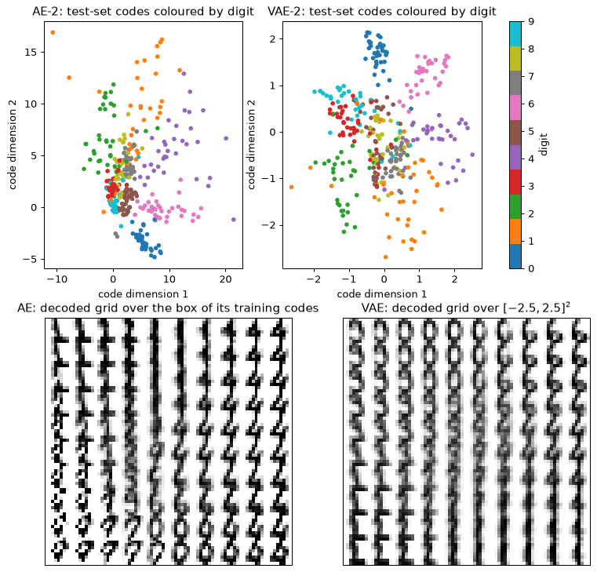
自编码器把各个数字分得最开。二维 PCA 编码最差，因为平坦的投影会把几个类别叠在一起。VAE 介于两者之间，散点图说明了原因：KL 项把每一团点都拉向原点、拉向单位宽度，于是各个簇彼此相接。解码网格说明了这些簇换来了什么。VAE 网格的每一格都是一个像样的数字，数字在平面上平滑地变化。自编码器的网格在簇附近数字更清晰，而在簇之间的空隙里则是污迹或不合理的形状，因为从来没有任何东西要求解码器在那里给出合理的输出。两种二维编码都远不及原始像素：十个类别无法无损地装进两个数里。
步骤 6：采样与插值
从 VAE 生成只需两行：从先验抽取 \mathbf{z} \sim \mathcal{N}(0, \mathbf{I})，然后解码。插值取两张真实测试图像（一个“1”和一个“7”）的潜在均值，解码二者连线上的八个点。由于 KL 项已使聚合后验接近先验，这条直线始终位于解码器熟悉的区域。
torch.manual_seed(3)
z = torch.randn(16, 2)
with torch.no_grad():
samples = torch.sigmoid(vae2.dec(z)).numpy()
i_one = int(np.where(y_te == 1)[0][0])
i_seven = int(np.where(y_te == 7)[0][0])
mu_ends = codes_vae(vae2, Xte_t[[i_one, i_seven]])
alphas = np.linspace(0, 1, 8, dtype=np.float32)[:, None]
z_path = torch.from_numpy((1 - alphas) * mu_ends[0] + alphas * mu_ends[1])
with torch.no_grad():
path = torch.sigmoid(vae2.dec(z_path)).numpy()
print("latent means of the two ends:", np.round(mu_ends.astype(float), 2).tolist())
fig, axes = plt.subplots(1, 2, figsize=(11, 3.6), gridspec_kw={"width_ratios": [1, 2]})
axes[0].imshow(tile(samples, 4, 4), cmap="gray_r")
axes[0].set_title("16 samples, $z \\sim N(0, I)$")
axes[1].imshow(tile(path, 1, 8), cmap="gray_r")
axes[1].set_title("interpolation from a test '1' to a test '7' (8 steps)")
for ax in axes:
ax.set_xticks([])
ax.set_yticks([])
plt.show()
latent means of the two ends: [[-2.09, -0.77], [0.24, -0.33]]
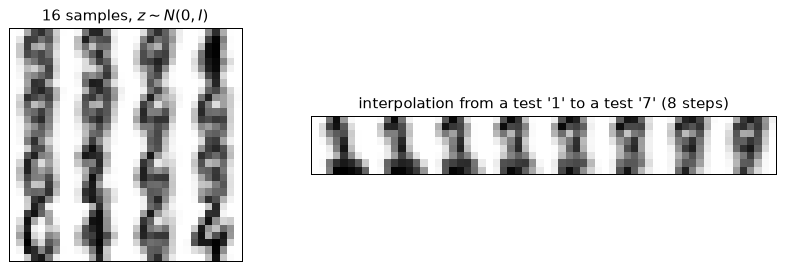
在 8×8 像素下，样本很粗糙，而且都是模糊的：解码器输出的是与一个编码相容的所有图像的平均（第 3 节，样本模糊）。要找的是像数字的笔画，而不是噪声；有些样本是两个类别的含糊混合，正如散点图中的重叠所预示的。插值一步一步地改变形状，而不是让一张图像淡出、另一张淡入。在像素空间中混合“1”和“7”，得到的会是两张叠在一起的淡图像。这就是平滑潜在空间的实际含义。
步骤 7：故意制造后验坍塌
现在编码维数取 d_z = 8，并改变 KL 权重：\beta = 0.5、1 和 4。对每个模型，实验打印总 KL、每个维度的 KL、重构项以及活跃单元（active units）的数目，即测试集上均值编码 \mu_j(\mathbf{x}) 的方差超过 0.01 的维度 j。第四个模型使用第 3 节那个精简类的损失，即平方误差之和，它相当于 \sigma_x^2 = 1/2 的高斯解码器。它的重构项处在另一个尺度上，所以只有它的 KL 和活跃单元能与其他模型比较。
def active_units(model, data, threshold=0.01):
with torch.no_grad():
mu = model.encode(data)[0]
return int((mu.var(0) > threshold).sum())
runs = {}
settings = [("beta=0.5", 0.5, False), ("beta=1", 1.0, False), ("beta=4", 4.0, False),
("beta=1, squared error", 1.0, True)]
for name, beta, gaussian in settings:
torch.manual_seed(0)
model = train(VAE(d_z=8, beta=beta, gaussian=gaussian), Xtr_t, vae_loss)
_, recon, kl, kl_dim = vae_report(model, Xte_t)
runs[name] = (model, kl_dim)
print(f"{name:22s} KL {kl:5.2f} active {active_units(model, Xte_t)} "
f"reconstruction {recon:5.1f}")
print(f"{'':22s} KL per dim {np.round(kl_dim, 2)}")
fig, axes = plt.subplots(1, 4, figsize=(13, 3.2), sharey=True)
for ax, (name, (model, kl_dim)) in zip(axes, runs.items()):
ax.bar(range(8), kl_dim)
ax.set_title(name)
ax.set_xlabel("latent dimension")
axes[0].set_ylabel("KL per dimension (nats)")
plt.show()
beta=0.5 KL 6.51 active 8 reconstruction 18.9
KL per dim [1.21 0.9 0.46 1.25 0.42 0.38 0.69 1.2 ]
beta=1 KL 3.57 active 6 reconstruction 21.0
KL per dim [0.84 0.53 0. 0.91 0. 0.01 0.37 0.9 ]
beta=4 KL 0.00 active 0 reconstruction 27.2
KL per dim [0. 0. 0. 0. 0. 0. 0. 0.]
beta=1, squared error KL 0.48 active 3 reconstruction 4.3
KL per dim [0.1 0. 0. 0.21 0.16 0. 0. 0. ]
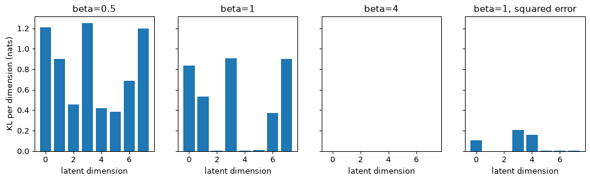
KL 权重决定了编码可以携带多少信息。\beta = 0.5 时，编码携带 6.5 奈特，八个维度全都在用。\beta = 1 时，也就是真正的 ELBO，编码携带 3.6 奈特，其中几乎全部由五个维度承担（3.57 奈特中的 3.55）；另外三个维度停在先验附近，其中一个仍随输入略有变化，这就是为什么有六个单元算作活跃。\beta = 4 时，每个维度的 KL 都是零：编码器对每张图像都输出先验，解码器无论 \mathbf{z} 是什么都产生同一个平均数字。这就是后验坍塌，而在这里它不是训练中的意外。是目标函数本身偏好它：使用编码带来的重构收益小于其 KL 代价的四倍（第 3 节给出了具体数字）。平方误差损失出于同样的原因、以较温和的形式让大多数维度坍塌，因为 \sigma_x^2 = 1/2 使得放弃重构的代价很小。
要根据每个维度的 KL 来诊断坍塌，如上所示，而不是根据损失：坍塌的模型损失非常平稳。
步骤 8：阈值选得诚实的异常检测器
最后一项任务是第 2 节中的用途。检测器只在正常数据（数字 0 到 8）上训练，数字 9 扮演一个未曾预料的故障。训练用的数字再划分一次：80% 用来拟合自编码器，20% 留出作为正常数据的验证集，阈值就从验证集读出。阈值取验证误差的第 95 百分位数，所以按照构造，正常数据上的误报率应当接近 5%。数字 9 上的检出率不由任何东西设定，而是测出来的。测试集只在最后使用一次。
基线是工程师首先会构建的那种监测器：在同样的正常数据上拟合 8 个成分的 PCA，用 Q 统计量（即平方重构误差）评分，并用同一验证集上它自己的第 95 百分位数作为阈值。
normal_tr = y_tr <= 8
X_norm = X_tr[normal_tr]
X_fit, X_val = train_test_split(X_norm, test_size=0.2, random_state=0)
X_test_normal = X_te[y_te <= 8]
X_test_nine = X_te[y_te == 9]
print(f"fit {len(X_fit)}, validation {len(X_val)}, test normal {len(X_test_normal)}, "
f"test nines {len(X_test_nine)}")
torch.manual_seed(0)
ae_norm = train(AutoEncoder(d_z=8), torch.from_numpy(X_fit), ae_loss)
pca_norm = PCA(n_components=8).fit(X_fit)
def error_ae(data):
with torch.no_grad():
t = torch.from_numpy(data)
return ((ae_norm(t) - t) ** 2).mean(1).numpy()
def error_pca(data):
return ((pca_norm.inverse_transform(pca_norm.transform(data)) - data) ** 2).mean(1)
results = {}
for name, score in (("autoencoder", error_ae), ("PCA Q statistic", error_pca)):
threshold = np.percentile(score(X_val), 95)
e_norm, e_nine = score(X_test_normal), score(X_test_nine)
auc = roc_auc_score(np.r_[np.zeros(len(e_norm)), np.ones(len(e_nine))],
np.r_[e_norm, e_nine])
results[name] = (e_norm, e_nine, threshold)
print(f"{name:16s} threshold {threshold:.4f} false alarms {np.mean(e_norm > threshold):.3f}"
f" 9s detected {np.mean(e_nine > threshold):.3f} AUC {auc:.3f}")
fig, axes = plt.subplots(1, 2, figsize=(11, 3.8), sharey=True)
for ax, (name, (e_norm, e_nine, threshold)) in zip(axes, results.items()):
bins = np.linspace(0, max(e_norm.max(), e_nine.max()), 40)
ax.hist(e_norm, bins=bins, alpha=0.6, label="normal test digits 0-8")
ax.hist(e_nine, bins=bins, alpha=0.6, label="test 9s (anomalies)")
ax.axvline(threshold, color="k", linestyle="--", label="95th-percentile threshold")
ax.set_title(name)
ax.set_xlabel("reconstruction error (MSE per pixel)")
axes[0].set_ylabel("number of test images")
axes[0].legend()
plt.show()
fit 1034, validation 259, test normal 324, test nines 36
autoencoder threshold 0.0261 false alarms 0.040 9s detected 0.583 AUC 0.952
PCA Q statistic threshold 0.0395 false alarms 0.077 9s detected 0.222 AUC 0.791
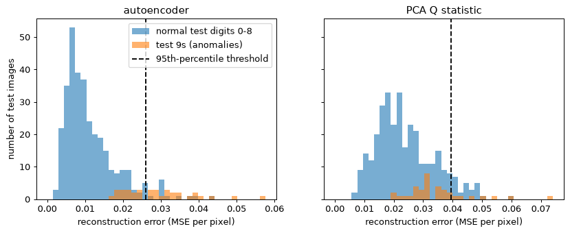
这张表要按顺序读出三点。正常测试数字上的误报率接近阈值所设定的 5%，这证实验证集划分起了作用（正常测试图像只有 324 张，差一两个百分点只是噪声）。检出率是异常本身的性质，而不是阈值的性质：尽管 AUC 为 0.95，数字 9 也只有约 58% 被捕获。AUC 是在所有阈值上的平均，包括那些没人会用的阈值，它对你选定的那个阈值什么也没说。而 PCA 监测器明显更差，这正是证明网络有其价值的比较。直方图显示了造成漏检的重叠：许多 9 的误差落在正常范围之内，因为它们与模型能重构得很好的数字相似。
如果你在测试误差上选阈值以捕获更多的 9，报告的检出率就只是这一选择的产物。在验证数据上选择，在测试数据上报告。
你应该看到什么
- 在相同编码维数下，自编码器胜过 PCA：d_z = 2 时约好 30%，d_z = 8 时好一倍以上，因为数字图像位于一个弯曲的流形上。
- VAE 的二维编码比自编码器的重叠更多（5 近邻准确率约 0.75，对比 0.84），因为 KL 项把每个编码都拉向 \mathcal{N}(0, \mathbf{I})。作为交换，VAE 网格的每一点都解码为一个像样的数字，而自编码器的网格在簇与簇之间有不合理的区域。
- KL 权重控制坍塌。\beta = 4 时每个维度的 KL 都是 0.00，解码器输出一个平均数字。平方误差之和的损失（\sigma_x^2 = 1/2）只让八个维度中约三个保持活跃。
- AUC 为 0.95 并不意味着 95% 的检出率。在误报约 5% 的阈值下，约 58% 的 9 被捕获。PCA 监测器在这两方面都更差。
动手试试
- KL 预热。在 d_z = 8 的 VAE 中，让 \beta 在前 50 个轮次内从 0 线性升到 1，并统计活跃单元：预计会从 6 个升到 8 个，多出的两个只携带很少的 KL（这一扩展的一次运行得到 8 个活跃单元，KL 为 3.48 奈特，两个新维度分别为 0.01 和 0.04）。若改为升到 \beta = 4，模型仍然坍塌（KL 0.01，没有活跃单元）。预热能修复由优化路径造成的坍塌，却修复不了作为目标函数最优解的坍塌。
- 二维中的簇。从三个二维高斯簇生成 3,000 个点，均值为 (-2, 0)、(2, 0)、(0, 2.5)，标准差为 0.3。用 d_x = 2、d_z = 2 和高斯解码器训练 VAE，画出按簇着色的潜在均值。然后设 d_z = 1，看各个簇是否仍然分开。
- 另一种异常。改为留出数字 8 而不是 9，再改为留出数字 0，阈值规则不变。其中一个的检出率会急剧上升。对这个模型来说，哪些数字是难以检出的异常？为什么这取决于正常类中剩下了哪些数字？
实验 2 — 双月数据上的扩散模型与无分类器引导
目标。你在小到可以直接观察的数据上实现第 5 节和第 6 节的各个部件：采用余弦调度的前向加噪过程、用简化损失训练的噪声预测网络、从反向过程进行的祖先采样（ancestral sampling）、无分类器引导，以及步数更少的确定性 DDIM 采样器。数据是 make_moons 生成的两个交错的月牙，这是一个二维分布，其质量可以用最近邻距离来测量，而不必靠肉眼判断。你会看到样本的结构在反向过程的后期才出现，看到引导以多样性换取保真度，看到步数减少时质量下降。数据是合成的，无需下载，本实验在笔记本电脑 CPU 上约需两分钟（所示运行用了 105 秒）：网络有 37,858 个参数，其中训练占 95 秒。在第一个代码块中设 QUICK = True，就只训练 8,000 步而不是 20,000 步，约一分钟即可完成。打印出的数字可能与你的结果在最后几位上不同。
步骤 1：噪声调度，以及为什么要给它设上限
第 5 节的前向过程在 T 步内把数据变成噪声。记 \alpha_t = 1 - \beta_t、\bar\alpha_t = \prod_{s \le t}\alpha_s，加噪后的点为 \mathbf{x}_t = \sqrt{\bar\alpha_t}\,\mathbf{x}_0 + \sqrt{1 - \bar\alpha_t}\,\boldsymbol\epsilon。 调度采用 Nichol 和 Dhariwal 的余弦调度：\bar\alpha_t 正比于 \cos^2\!\big(\tfrac{t/T + s}{1 + s}\cdot\tfrac{\pi}{2}\big)，其中 s = 0.008，并归一化使 \bar\alpha_0 = 1，每个 \beta_t = 1 - \bar\alpha_t/\bar\alpha_{t-1}。本实验用 T = 200，而不是论文中的 1,000，因为双月数据需要的步数少得多。
与论文唯一的不同是一个上限：\beta_t \le 0.5，而不是 0.999。不设上限的调度以 \beta_T = 1 和 \bar\alpha_T = 0 结束。反向步要除以 \sqrt{\alpha_t}，所以在最后一步，\alpha_T = 1 - \beta_T 极小，网络犯下的任何误差都会被乘以 1/\sqrt{\alpha_T}。\beta_T = 0.999 时这个因子是 31.6，有上限时是 1.41。第一个代码块打印了两种情况下的因子，让你看到这一影响有多大。上限使 \bar\alpha_T 停在一个很小的正数上，而采样器从 \mathcal{N}(0, \mathbf{I}) 出发，这样起始分布就有了极其微小的偏差；对这份数据，这一误差看不出来。
import time
import matplotlib.pyplot as plt
import numpy as np
import torch
import torch.nn as nn
import torch.nn.functional as F
from sklearn.datasets import make_moons
from sklearn.neighbors import KNeighborsClassifier, NearestNeighbors
np.random.seed(0)
torch.manual_seed(0)
torch.set_num_threads(2)
QUICK = False # True: 8,000 training steps instead of 20,000
T = 200
def cosine_alpha_bar(T, s=0.008):
"""alpha-bar_t for t = 0..T from the cosine schedule, with alpha-bar_0 = 1."""
t = np.arange(T + 1) / T
f = np.cos((t + s) / (1 + s) * np.pi / 2) ** 2
return f / f[0]
ab_cos = cosine_alpha_bar(T)
beta_uncapped = 1 - ab_cos[1:] / ab_cos[:-1] # entry t-1 is beta_t
beta = np.minimum(beta_uncapped, 0.5) # the cap
alpha = 1 - beta
alpha_bar = np.concatenate([[1.0], np.cumprod(alpha)]) # alpha_bar[t] for t = 0..T
print(f"alpha_bar_1 {alpha_bar[1]:.5f} alpha_bar_100 {alpha_bar[100]:.4f} "
f"alpha_bar_200 {alpha_bar[200]:.2e}")
print("last three uncapped betas:", np.round(beta_uncapped[-3:], 4))
print(f"error factor 1/sqrt(alpha_T): capped {1 / np.sqrt(alpha[-1]):.2f}, "
f"beta_T = 0.999 gives {1 / np.sqrt(1 - 0.999):.1f}")
plt.figure(figsize=(6, 3.5))
plt.plot(np.arange(T + 1), alpha_bar)
plt.xlabel("step t")
plt.ylabel(r"$\bar\alpha_t$ (fraction of signal variance left)")
plt.title("Cosine noise schedule, T = 200, beta capped at 0.5")
plt.show()
alpha_bar_1 0.99975 alpha_bar_100 0.4938 alpha_bar_200 6.83e-05
last three uncapped betas: [0.5555 0.75 1. ]
error factor 1/sqrt(alpha_T): capped 1.41, beta_T = 0.999 gives 31.6
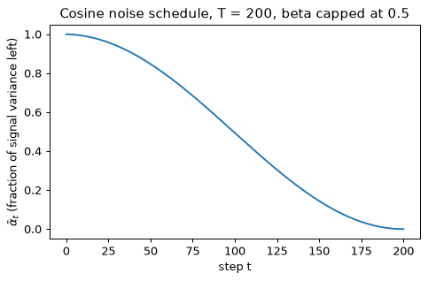
信号起初下降得慢，后来下降得快：t = 50 时还剩 0.85 的方差，t = 100 时剩一半，t = 150 时剩 0.14，最后五十步把剩下的部分降到几乎为零。选用余弦调度正是为了这种形状：它在中等噪声水平上花很多步，此时数据的结构部分可见，而不是一冲而过。下面的训练和采样始终使用设了上限的值，所以前向过程与反向过程彼此一致。
步骤 2：画出前向过程
闭式解让你可以直接跳到任意一步。每个点用一次固定的噪声抽样 \boldsymbol\epsilon，并在每个 t 上重复使用，这样每个点都沿着一条直线从原处滑向噪声，各个子图之间也可以比较。数据先做标准化，使每个坐标的均值为零、方差为一，这样终态 \mathcal{N}(0, \mathbf{I}) 与数据的尺度相同。标准化使用训练集自身的均值和标准差；同样的数值也会用于评估集。
X_raw, y_raw = make_moons(n_samples=10000, noise=0.05, random_state=0)
mean, std = X_raw.mean(0), X_raw.std(0)
data = torch.tensor((X_raw - mean) / std, dtype=torch.float32)
labels = torch.tensor(y_raw)
X_ref_raw, y_ref = make_moons(n_samples=5000, noise=0.05, random_state=1)
X_ref = ((X_ref_raw - mean) / std).astype(np.float32) # reference set for evaluation
print("standardised data: mean", np.round(data.mean(0).numpy(), 3),
" std", np.round(data.std(0).numpy(), 3))
ab = torch.tensor(alpha_bar, dtype=torch.float32)
def noise_to(x0, t, eps):
"""Closed-form forward process: x_t from x_0 in one step (t is a tensor of step indices)."""
a = ab[t][:, None]
return a.sqrt() * x0 + (1 - a).sqrt() * eps
eps_fixed = torch.randn(1500, 2)
x0_show, y_show = data[:1500], labels[:1500].numpy()
steps = (0, 50, 100, 150, 175, 200)
fig, axes = plt.subplots(1, 6, figsize=(16, 2.9), sharex=True, sharey=True)
for ax, t in zip(axes, steps):
xt = noise_to(x0_show, torch.full((1500,), t), eps_fixed).numpy()
ax.scatter(xt[:, 0], xt[:, 1], c=y_show, cmap="coolwarm", s=3)
ax.set_title(f"t = {t}, $\\bar\\alpha_t$ = {alpha_bar[t]:.3f}")
ax.set_xlabel("$x_1$")
axes[0].set_ylabel("$x_2$")
plt.show()
standardised data: mean [-0. -0.] std [1. 1.]
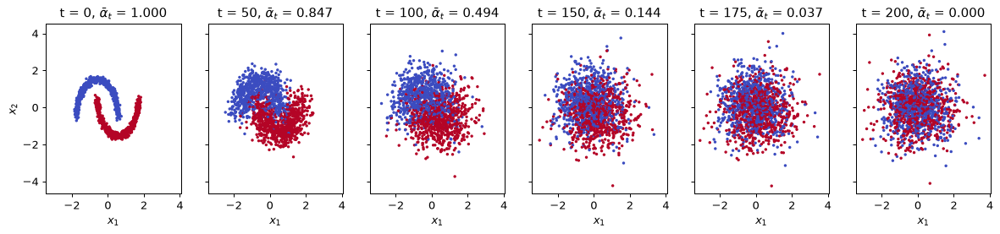
到 t = 50 时，细细的月牙已经变成两团宽大且相互重叠的云，每个月牙一团。到 t = 100 时，它们是两团严重重叠的斑块；从 t = 150 起，两个类别混在一起，只剩下一团高斯云。数据的精细几何，也就是月牙的弧线，在前向过程的早期就被破坏了。反向过程必须把它重建出来，这是步骤 5 中“结构后期才出现”这一观察的第一个提示。
步骤 3：去噪网络
网络 \boldsymbol\epsilon_\theta(\mathbf{x}_t, t, c) 预测被加入的噪声。它需要知道步数 t，因为正确答案取决于输入有多嘈杂；它还需要知道条件 c：月牙标签 0 或 1，或者第三个值 null，表示“无条件”。null 值使步骤 6 中的无分类器引导成为可能，因为同一个网络于是既给出条件预测，也给出无条件预测。
步数编码为 32 维的正弦嵌入，与 Transformer 中一样；条件由一个有三个条目的可学习 32 维嵌入编码。两个嵌入相加，其和与 \mathbf{x}_t 的 2 个坐标拼接。随后是三个 128 单元、使用 SiLU 激活的隐藏层，以及输出 2 个数的线性层。参数量为 34 \cdot 128 + 128 + 2(128 \cdot 128 + 128) + 128 \cdot 2 + 2 + 3 \cdot 32 = 37{,}858。
def time_embedding(t, dim=32):
"""Sinusoidal embedding of the step index, shape (B, dim)."""
freqs = torch.exp(-np.log(10000.0) * torch.arange(dim // 2) / (dim // 2))
angles = t.float()[:, None] * freqs[None, :]
return torch.cat([angles.sin(), angles.cos()], dim=-1)
NULL = 2 # condition index meaning "no condition"
class Denoiser(nn.Module):
def __init__(self, hidden=128, d_emb=32):
super().__init__()
self.cond_emb = nn.Embedding(3, d_emb) # moon 0, moon 1, null
self.net = nn.Sequential(
nn.Linear(2 + d_emb, hidden), nn.SiLU(),
nn.Linear(hidden, hidden), nn.SiLU(),
nn.Linear(hidden, hidden), nn.SiLU(),
nn.Linear(hidden, 2),
)
def forward(self, x, t, c):
emb = time_embedding(t) + self.cond_emb(c)
return self.net(torch.cat([x, emb], dim=-1))
model = Denoiser()
print("parameters:", sum(p.numel() for p in model.parameters()))
parameters: 37858
步骤 4：用简化损失训练
每个训练步抽取一个 batch 的 512 个干净点，为每个点抽取在 \{1, \dots, 200\} 上均匀分布的步数 t 和噪声 \boldsymbol\epsilon；构造 \mathbf{x}_t；并最小化 \boldsymbol\epsilon 与 \boldsymbol\epsilon_\theta(\mathbf{x}_t, t, c) 之间的均方误差。这就是第 5 节的目标函数，一个普通的回归。条件以 0.2 的概率被替换为 NULL，使同一个网络同时学会条件噪声和无条件噪声。使用 Adam，学习率 10^{-3}，余弦衰减到零，完成整个训练。
损失不会降到零，也不应该降到零：噪声是随机的，网络只能预测其中能由 \mathbf{x}_t 和 t 揭示的那部分。t 很小时，\mathbf{x}_t 几乎就是 \mathbf{x}_0，噪声几乎无法从单个点中恢复。t 很大时，\mathbf{x}_t 几乎全是噪声，任务就容易了。因此打印出的损失是在难度差别极大的情形上的平均，一条平坦的曲线对样本质量说明不了多少。
n_steps = 8000 if QUICK else 20000
opt = torch.optim.Adam(model.parameters(), lr=1e-3)
sched = torch.optim.lr_scheduler.CosineAnnealingLR(opt, T_max=n_steps)
torch.manual_seed(0)
t0 = time.time()
fifth = n_steps // 5
running = []
for step in range(1, n_steps + 1):
idx = torch.randint(0, len(data), (512,))
x0, c = data[idx], labels[idx].clone()
c[torch.rand(512) < 0.2] = NULL # condition dropout for classifier-free guidance
t = torch.randint(1, T + 1, (512,))
eps = torch.randn(512, 2)
loss = F.mse_loss(model(noise_to(x0, t, eps), t, c), eps)
opt.zero_grad()
loss.backward()
opt.step()
sched.step()
running.append(loss.item())
if step % fifth == 0:
print(f"step {step:6d} mean loss over the last {fifth} steps "
f"{np.mean(running[-fifth:]):.4f}")
print(f"training time {time.time() - t0:.0f} s")
step 4000 mean loss over the last 4000 steps 0.3646
step 8000 mean loss over the last 4000 steps 0.3324
step 12000 mean loss over the last 4000 steps 0.3294
step 16000 mean loss over the last 4000 steps 0.3277
step 20000 mean loss over the last 4000 steps 0.3260
training time 95 s
损失在前五分之一为 0.36，之后稳定在 0.33 附近。这是一个无法低于噪声下限的误差在所有噪声水平上的平均，所以早在样本停止改进之前，曲线就几乎平了。0.33 的损失并不能说明月牙是否清晰；接下来几步的最近邻测量才能说明。训练时间取决于机器，在繁忙的机器上可能是安静的笔记本电脑上一分半钟的两倍。
步骤 5：祖先采样，以及它产生了什么
采样从 \mathbf{x}_T \sim \mathcal{N}(0, \mathbf{I}) 开始，对 t = T, \dots, 1 应用 Ho 等人的更新（算法 2）：
最后一步取 \mathbf{z} = 0。第一项去掉预测的噪声并重新缩放；第二项加回少量新的噪声，方差为 \beta_t，这使链条成为从反向过程中抽取的真正样本，而不是一次确定性的滑动。下面的函数接收一个条件和一个引导强度（guidance scale）w；这一步使用 null 条件，所以 w 不起作用，步骤 6 会同时用到两者。
样本用最近邻距离评分，单位是标准化后的单位。从每个样本到 5,000 点参考集中最近点的平均距离是一个类似精确率的量：样本落在月牙上时它就小。从每个参考点到最近样本的平均距离是一个类似召回率的量：样本覆盖了月牙的每一部分时它就小。两把标尺为它们提供校准：从真实分布新抽取的 2,000 个点，代表任何采样器所能达到的最好结果；以及从 \mathcal{N}(0, \mathbf{I}) 抽取的 2,000 个点，即起点。
@torch.no_grad()
def eps_hat(x, t_int, c, w):
"""Noise prediction; with a condition c in {0, 1}, classifier-free guidance of scale w."""
t = torch.full((len(x),), t_int, dtype=torch.long)
e_null = model(x, t, torch.full((len(x),), NULL))
if c == NULL:
return e_null
e_cond = model(x, t, torch.full((len(x),), c))
return e_null + w * (e_cond - e_null)
beta_t, alpha_t, ab_t = (torch.tensor(a, dtype=torch.float32) for a in (beta, alpha, alpha_bar))
@torch.no_grad()
def ancestral(n, c=NULL, w=0.0, seed=0, snapshots=()):
"""Ho et al. Algorithm 2. Returns x_0 and {t: x_t before the update at step t}."""
gen = torch.Generator().manual_seed(seed)
x = torch.randn(n, 2, generator=gen)
snaps = {}
for t in range(T, 0, -1):
if t in snapshots:
snaps[t] = x.clone().numpy()
e = eps_hat(x, t, c, w)
x = (x - beta_t[t - 1] / (1 - ab_t[t]).sqrt() * e) / alpha_t[t - 1].sqrt()
if t > 1:
x = x + beta_t[t - 1].sqrt() * torch.randn(n, 2, generator=gen)
return x.numpy(), snaps
def nn_dist(a, b):
"""Mean distance from each row of a to its nearest row of b."""
return float(NearestNeighbors(n_neighbors=1).fit(b).kneighbors(a)[0].mean())
fresh_raw, _ = make_moons(n_samples=2000, noise=0.05, random_state=2)
fresh = ((fresh_raw - mean) / std).astype(np.float32)
noise_pts = np.random.default_rng(0).standard_normal((2000, 2)).astype(np.float32)
for name, pts in (("fresh data", fresh), ("N(0, I) noise", noise_pts)):
print(f"{name:14s} precision-like {nn_dist(pts, X_ref):.3f} "
f"recall-like {nn_dist(X_ref, pts):.3f}")
t0 = time.time()
snap_steps = (200, 150, 100, 50, 20, 5)
x_gen, snaps = ancestral(2000, snapshots=snap_steps)
print(f"unconditional samples precision-like {nn_dist(x_gen, X_ref):.3f} "
f"recall-like {nn_dist(X_ref, x_gen):.3f} ({time.time() - t0:.1f} s)")
print("precision-like distance of x_t at t =", snap_steps, ":",
[round(nn_dist(snaps[t], X_ref), 3) for t in snap_steps])
fig, axes = plt.subplots(1, 7, figsize=(18, 2.8), sharex=True, sharey=True)
for ax, t in zip(axes, snap_steps):
ax.scatter(snaps[t][:, 0], snaps[t][:, 1], s=2)
ax.set_title(f"$x_t$ at t = {t}")
ax.set_xlabel("$x_1$")
axes[-1].scatter(x_gen[:, 0], x_gen[:, 1], s=2, color="tab:green")
axes[-1].set_title("final sample $x_0$")
axes[-1].set_xlabel("$x_1$")
axes[0].set_ylabel("$x_2$")
plt.show()
fresh data precision-like 0.013 recall-like 0.021
N(0, I) noise precision-like 0.242 recall-like 0.051
unconditional samples precision-like 0.022 recall-like 0.022 (0.5 s)
precision-like distance of x_t at t = (200, 150, 100, 50, 20, 5) : [0.246, 0.234, 0.212, 0.134, 0.057, 0.027]
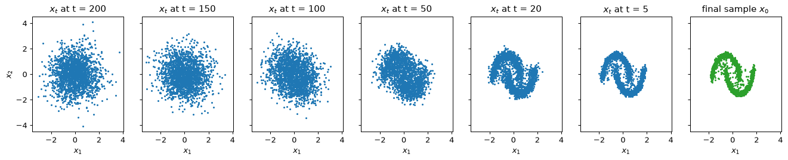
先读两把标尺。新抽取的数据到参考集的距离约为 0.013，参考集到它们的距离约为 0.021，这是由样本量和月牙本身的噪声决定的下限：没有哪个采样器能低于它们。噪声的两个距离为 0.24 和 0.05。模型的样本在两项上都接近下限：它们落在月牙上，并且覆盖了两个月牙。六张快照显示了这是在哪里发生的。\mathbf{x}_t 的类精确率距离在 t = 200 时仍约为 0.25，与纯噪声相同，直到 t = 100 只缓慢下降（0.212），t = 50 时为 0.134，并在最后五十步内降到最终的 0.022。结构在后期才出现：t = 100 和 t = 50 的快照是没有形状的斑块，只隐约可见两个月牙，月牙只在 t = 50 到 t = 5 之间才变清晰。这就是最后几步对质量最重要的原因，也是步骤 7 中减少步数代价高昂的原因。
设 QUICK = True 时，预计类精确率距离约为 0.04，类召回率距离约为 0.025（一次 QUICK = True 的运行得到 0.039 和 0.025）：月牙明显更模糊，月牙附近有零散的点。模型训练的步数更少，而它在反向链条中走的每一步都会累积它的误差。
步骤 6：无分类器引导
条件模型从 p(\mathbf{x} \mid c) 中采样。引导使它更集中。更新中使用的噪声预测为
其中 \varnothing 是 null 条件。w = 0 时它就是无条件模型；w = 1 时它就是条件模型；w > 1 时，它沿着从“任意”指向“类别 c”的方向走得比单独的条件模型更远。这里引导强度的写法与代码一致，w = 1 表示普通的条件模型。Ho 和 Salimans 用 (1 + w) 写同一件事，所以他们的 w = 0 就是本实验的 w = 1。
代码块对 w = 0, 1, 3, 7 各采样 1,000 个类别 0 的点。一个在带标签参考集上拟合的 15 近邻分类器判断每个样本落在哪个月牙上；落在月牙 0 上的比例衡量条件被遵守的程度。类精确率距离使用所有参考点。类召回率距离只使用类别 0 的参考点，因为被采样的正是这个分布。
knn = KNeighborsClassifier(15).fit(X_ref, y_ref)
ref_class0 = X_ref[y_ref == 0]
guided = {}
for w in (0, 1, 3, 7):
x_w, _ = ancestral(1000, c=0, w=float(w), seed=10 + w)
guided[w] = x_w
frac = float((knn.predict(x_w) == 0).mean())
print(f"w = {w}: fraction on moon 0 {frac:.2f} precision-like {nn_dist(x_w, X_ref):.3f}"
f" recall-like (class-0 points) {nn_dist(ref_class0, x_w):.3f}")
fig, axes = plt.subplots(1, 4, figsize=(15, 3.4), sharex=True, sharey=True)
for ax, w in zip(axes, guided):
ax.scatter(X_ref[:, 0], X_ref[:, 1], s=1, color="lightgrey")
ax.scatter(guided[w][:, 0], guided[w][:, 1], s=3, color="tab:red")
ax.set_title(f"class 0, guidance w = {w}")
ax.set_xlabel("$x_1$")
axes[0].set_ylabel("$x_2$")
plt.show()
w = 0: fraction on moon 0 0.50 precision-like 0.023 recall-like (class-0 points) 0.032
w = 1: fraction on moon 0 1.00 precision-like 0.014 recall-like (class-0 points) 0.021
w = 3: fraction on moon 0 1.00 precision-like 0.013 recall-like (class-0 points) 0.029
w = 7: fraction on moon 0 1.00 precision-like 0.020 recall-like (class-0 points) 0.043
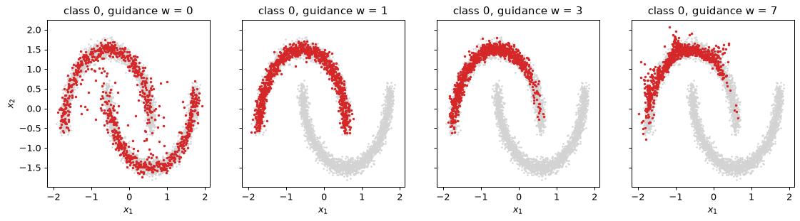
w = 0 时条件被忽略，一半样本落在每个月牙上：这就是无条件模型。它到类别 0 各点的类召回率距离较高（0.032），因为它只有一半样本靠近这些点。w = 1 时，每个样本都落在所要求的月牙上，类召回率距离也达到最好，为 0.021。落在月牙上的比例不可能超过 1.00，但其他数字还在变化。类召回率距离随 w 增大（w = 3 时为 0.029，w = 7 时为 0.043），因为样本集中到月牙最密的部分，它的两端无人问津，如图所示。w = 7 时类精确率距离也变大了（0.020，而 w = 3 时为 0.013），因为更强的推力冲过了头：有些样本越过月牙的左上端，离开了月牙。这是引导最纯粹形式的权衡。对条件的保真度是用多样性换来的，而超过某个强度后，代价还包括更差的拟合。
步骤 7：DDIM 与步数的代价
祖先采样每个样本需要 200 次网络计算。DDIM（Song 等人）复用同一个训练好的网络，采用一种可以跳步的确定性更新。每一步它先由噪声预测估计干净的点，
这是前向公式的逆，然后用同一个预测噪声把它重新加噪到下一个更低的噪声水平 t'：
这里不注入新的噪声，所以从 \mathbf{x}_T 到 \mathbf{x}_0 的映射是确定性的。 由于更新只需要 \bar\alpha_t 和 \bar\alpha_{t'}，t' 不必是 t - 1：从 200 到 0 均匀取 K 步，就得到一个无需重新训练的 K 步采样器。代码块对 K = 200, 50, 20, 10, 5, 2, 1 测量无条件样本，以及每种情况所用的时间。K = 1 那一行是在 t = 200 处只做一次计算得到的 \hat{\mathbf{x}}_0。
@torch.no_grad()
def ddim(n, K, seed=0):
gen = torch.Generator().manual_seed(seed)
x = torch.randn(n, 2, generator=gen)
ts = np.round(np.linspace(T, 0, K + 1)).astype(int)
for t, t_next in zip(ts[:-1], ts[1:]):
e = eps_hat(x, int(t), NULL, 0.0)
x0_hat = (x - (1 - ab_t[t]).sqrt() * e) / ab_t[t].sqrt()
x = ab_t[t_next].sqrt() * x0_hat + (1 - ab_t[t_next]).sqrt() * e
return x.numpy()
print(" K precision-like recall-like seconds")
ddim_samples = {}
for K in (200, 50, 20, 10, 5, 2, 1):
t0 = time.time()
xs = ddim(2000, K)
ddim_samples[K] = xs
print(f"{K:4d} {nn_dist(xs, X_ref):13.3f} {nn_dist(X_ref, xs):11.3f} {time.time() - t0:7.2f}")
fig, axes = plt.subplots(1, 4, figsize=(14, 3.3), sharex=True, sharey=True)
for ax, K in zip(axes, (50, 10, 5, 1)):
xs = ddim_samples[K]
outside = int((np.abs(xs).max(1) > 3).sum())
ax.scatter(xs[:, 0], xs[:, 1], s=2)
ax.set_xlim(-3, 3)
ax.set_ylim(-3, 3)
ax.set_title(f"DDIM, K = {K} steps ({outside} of 2000 outside the box)")
ax.set_xlabel("$x_1$")
axes[0].set_ylabel("$x_2$")
plt.show()
K precision-like recall-like seconds
200 0.022 0.023 0.84
50 0.022 0.024 0.21
20 0.025 0.029 0.12
10 0.035 0.042 0.07
5 0.046 0.067 0.03
2 0.152 0.120 0.02
1 1.714 0.142 0.02
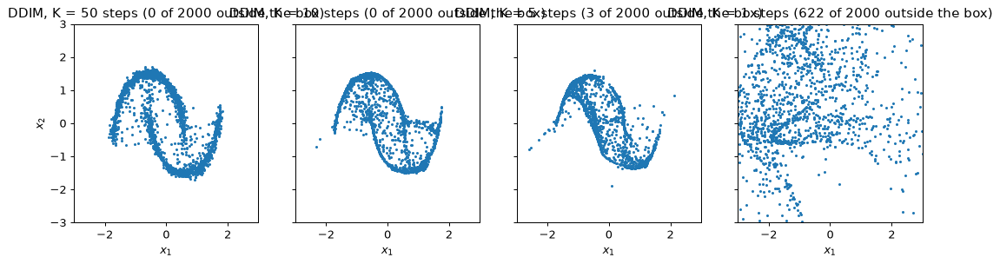
二十到五十步 DDIM 给出的样本接近 200 步祖先采样器的样本，而网络计算次数只有它的四分之一到十分之一；时间一列几乎与 K 成正比地下降。少于约十步时，质量迅速下降。一步则是另一种失败。在 t = 200 处信号权重为 \sqrt{\bar\alpha_{200}} = 0.008，所以估计 \hat{\mathbf{x}}_0 要把网络的输出除以 0.008，即放大 121 倍，\boldsymbol\epsilon_\theta 中的任何误差都会被放大这么多倍。因此一步得到的样本散布在远离数据的地方，类精确率距离远大于 1，尽管它们的类召回率距离只有 0.14：数据区域确实被覆盖了，但覆盖它的那团云还覆盖了大得多的范围。扩散的代价在于它的步数，而这些步数换来的，正是你在步骤 5 中看到的对结构的逐步确定。
你应该看到什么
- 结构在反向过程的后期才出现。中间样本直到约 t = 50 都没有形状（类精确率距离 0.134，而噪声为 0.246），月牙在 t = 50 到 t = 5 之间形成。
- 无条件样本与数据的接近程度几乎与新抽取的数据相当（约 0.022，对比 0.013），并覆盖了两个月牙（类召回率距离 0.022，对比 0.021）。
- 引导以多样性换取保真度。w = 1 已经让每个样本都落在所要求的月牙上。w = 3 和 w = 7 把样本挤向月牙最密的部分，到 w = 7 时类召回率距离翻了一倍；w = 7 时，由于样本冲过了头，类精确率距离开始变差。
- 20 到 50 步的 DDIM 接近 200 步的祖先采样器。少于约 10 步时质量迅速下降，而单步只返回一个远离数据、被抹开的估计。
- \beta_t 的上限是一道保险。按论文的上限 0.999，第一个反向步会把网络的误差乘以 31.6，而上限为 0.5 时只乘以 1.41。这是否造成损害取决于具体的运行：在规划本模块时做的一个原型中，w = 7 的样本发散了（类精确率距离 1.34），而在当前环境中用 0.999 上限重新训练的本实验副本，在 w = 7 时得到 0.019，与设了上限的模型一样好。上限以零代价消除了这一风险。
动手试试
- 恢复原上限。把上限设为 0.999，重复步骤 6。然后保持 0.999 的上限，但计算 \hat{\mathbf{x}}_0，把它裁剪到 [-3, 3]，再改用由 \hat{\mathbf{x}}_0 得到的后验均值更新 \tilde\mu_t。最初的实现正是这样在不设上限的调度下存活下来的。
- 同一数据上的 GAN。在同样标准化的月牙数据上，把第 4 节的非饱和 GAN（生成器和判别器：三个 128 单元隐藏层的多层感知机，Adam，学习率 10^{-3}，\beta = (0.5, 0.999)）训练 6,000 步。把它的类精确率和类召回率距离与扩散模型比较。它每个样本只需一次前向传播；扩散模型需要 200 次。
- 线性调度。把调度换成 Ho 等人的线性范围，\beta_t 从 10^{-4} 到 0.02，仍取 T = 200，它结束于 \bar\alpha_T = 0.13（用它重新训练的本实验副本得到类精确率距离 0.020、类召回率距离 0.022）。在这些二维标准化数据上，损害很小。解释为什么二维标准化数据掩盖了一个对图像很重要的问题：\bar\alpha_T = 0.13 在起始样本中留下了什么？
实验 3 — 从零实现图卷积网络：故障树中的单点故障
目标。你从边列表出发，用约三十行代码构建消息传递，并把它用于一个答案精确已知的任务：找出故障树的单点故障，即仅凭自身失效就能导致顶事件发生的基本事件。你编写一个随机故障树生成器和一个给出真实标签的标注器，测量模型必须胜过的两个基线，训练深度逐渐增加的图卷积网络（第 7 节），并亲眼看到第 8 节所说的深度限制：按距顶事件的距离统计的准确率、无需任何训练即可测量的过平滑，以及用残差连接进行的修复。最后，你把对称邻接换成一个方向感知层，它利用了朴素 GCN 丢掉的那一点结构。数据是合成的，本实验不使用任何图神经网络库；它在笔记本电脑 CPU 上约需三分钟（所示运行用了 168 秒），需要 NumPy、PyTorch 和 matplotlib。它让 PyTorch 在单线程上运行：在多线程上，消息传递中的 scatter-add 求和顺序每次运行都会变，准确率也随之而变。即使在单线程上，准确率也会随 PyTorch 版本变动一两个百分点，所以要把它们当作现象来读，而不是当作确切的数字。
步骤 1：故障树生成器及其标签
故障树由门（或门 OR：任一输入失效则输出失效；与门 AND：只有全部输入失效时才失效）和基本事件（即叶节点）组成。如果一个基本事件到顶事件路径上的每个门都是或门，它就是单点故障：此时它自身的失效会一路向上传播。路径上任何地方只要有一个与门，就意味着该门的其他输入也必须失效。
生成器遵循固定的配方。顶事件是一个门，以 0.6 的概率为或门，否则为与门。每个门有两到四个输入，均匀抽取。深度为 0 或 1 的门，其输入本身以 0.6 的概率是一个门；深度为 2 时概率为 0.35；深度为 3 的门只以基本事件为输入，所以没有哪棵树在顶事件之下深于四层。每个非顶层的门以 0.6 的概率为或门。每个节点有四个特征：其类型（或门、与门、基本事件）的独热编码，以及一个标记顶事件的标志位。门不参与评分；基本事件的标签为 1 表示单点故障。
实验用一个设定了种子的生成器生成 300 棵树，200 棵用于训练、100 棵用于测试，并且按树划分，使测试树是新的图，而不是某棵训练树中的节点。工程模型要用在新的模型上，而不是旧模型的新节点上（第 7 节）。
import matplotlib.pyplot as plt
import numpy as np
import torch
import torch.nn as nn
import torch.nn.functional as F
np.random.seed(0)
torch.manual_seed(0)
torch.set_num_threads(1) # scatter-adds sum in a fixed order only on one thread
OR, AND, BASIC = 0, 1, 2
def make_tree(rng):
"""One random fault tree as arrays: node type, parent index (-1 for the top), depth."""
types, parent, depth = [], [], []
def add(kind, par, d):
types.append(kind)
parent.append(par)
depth.append(d)
return len(types) - 1
top = add(OR if rng.random() < 0.6 else AND, -1, 0)
open_gates = [top]
while open_gates:
g = open_gates.pop()
d = depth[g]
p_gate = 0.6 if d <= 1 else (0.35 if d == 2 else 0.0)
for _ in range(rng.integers(2, 5)): # 2 to 4 inputs
if rng.random() < p_gate:
open_gates.append(add(OR if rng.random() < 0.6 else AND, g, d + 1))
else:
add(BASIC, g, d + 1)
return {"type": np.array(types), "parent": np.array(parent), "depth": np.array(depth)}
def label_tree(tree):
"""1 for a basic event whose gates up to the top are all OR, 0 for the other basic
events, -1 for gates (not scored)."""
label = np.full(len(tree["type"]), -1)
for v in np.where(tree["type"] == BASIC)[0]:
label[v], u = 1, tree["parent"][v]
while u != -1:
if tree["type"][u] == AND:
label[v] = 0
u = tree["parent"][u]
return label
rng = np.random.default_rng(0)
trees = [make_tree(rng) for _ in range(300)]
for tree in trees:
tree["label"] = label_tree(tree)
train_trees, test_trees = trees[:200], trees[200:]
sizes = [len(t["type"]) for t in trees]
print(f"nodes per tree: mean {np.mean(sizes):.1f}, min {min(sizes)}, max {max(sizes)}")
for name, group in (("train", train_trees), ("test", test_trees)):
n_nodes = sum(len(t["type"]) for t in group)
lab = np.concatenate([t["label"] for t in group])
dep = np.concatenate([t["depth"] for t in group])
basic = lab >= 0
counts = {d: int(((dep == d) & basic).sum()) for d in (1, 2, 3, 4)}
print(f"{name}: {n_nodes} nodes, {basic.sum()} basic events, "
f"{lab[basic].mean():.1%} single points of failure; by depth {counts}")
nodes per tree: mean 28.1, min 3, max 92
train: 5579 nodes, 3766 basic events, 22.1% single points of failure; by depth {1: 252, 2: 400, 3: 1169, 4: 1945}
test: 2850 nodes, 1934 basic events, 21.9% single points of failure; by depth {1: 123, 2: 193, 3: 640, 4: 978}
在训练树和测试树中，大约每五个基本事件中就有一个是单点故障，所以一个从不预测单点故障的模型大约五次中能对四次：这就是要胜过的基线。大多数基本事件位于顶事件之下三到四层，而它们恰恰需要最多的信息才能标注。换一个种子或换一种抽取顺序，计数会有些不同（各项比例变动一两个百分点），所以不要指望用不同的生成器得到这些数字。
步骤 2：在一棵可以手工验证的树上检验标注器
没人检验过的标注器，是错误基准最常见的来源。第 8 节的冷却系统故障树有十二个节点，它的答案可以直接从图上读出。顶事件“失去冷却”是三个输入的或门：门 G1“所有泵失效”（三个泵的与门）；门 G2“流道堵塞”（一个阀门、一根管道和门 G3“两个控制器都失效”的或门，G3 是两个控制器的与门）；以及基本事件 E1，即电源。因此单点故障是直接相连的 E1，以及经由或门 G2 的阀门 E5 和管道 E6。泵和控制器都位于与门之下。
NAMES = ["TOP", "G1", "G2", "E1", "E2", "E3", "E4", "E5", "E6", "G3", "E7", "E8"]
cooling = {
"type": np.array([OR, AND, OR, BASIC, BASIC, BASIC, BASIC, BASIC, BASIC, AND, BASIC, BASIC]),
"parent": np.array([-1, 0, 0, 0, 1, 1, 1, 2, 2, 2, 9, 9]),
}
cooling["depth"] = np.array([0, 1, 1, 1, 2, 2, 2, 2, 2, 2, 3, 3])
cooling["label"] = label_tree(cooling)
found = [NAMES[v] for v in np.where(cooling["label"] == 1)[0]]
print("single points of failure found by the labeller:", found)
assert found == ["E1", "E5", "E6"], "the labeller disagrees with the hand answer"
single points of failure found by the labeller: ['E1', 'E5', 'E6']
这个断言就是这一步的意义所在。如果它失败了，后面的一切都不可信。
步骤 3：两个基线
模型在测试基本事件上的准确率，若没有某个平凡方法的准确率作对照，就毫无意义。这里有两个平凡的预测器。多数类：对每个事件都说“不是单点故障”。以及一条听起来正确的规则，“事件自己的门是或门”：如果正上方的门是或门，这个事件看起来就像单点故障。恰好在更高处某个地方有与门时，这条规则就错了。两者都在测试基本事件上计算。
def basic_events(group):
"""Concatenate trees; return labels, own-gate types and depths of the basic events."""
lab = np.concatenate([t["label"] for t in group])
own_gate = np.concatenate([t["type"][np.maximum(t["parent"], 0)] for t in group])
dep = np.concatenate([t["depth"] for t in group])
m = lab >= 0
return lab[m], own_gate[m], dep[m]
lab_te, gate_te, dep_te = basic_events(test_trees)
majority = np.mean(lab_te == 0)
own_gate_or = np.mean((gate_te == OR).astype(int) == lab_te)
print(f"majority class (never a single point of failure): {majority:.3f}")
print(f"'own gate is OR' rule: {own_gate_or:.3f}")
majority class (never a single point of failure): 0.781
'own gate is OR' rule: 0.616
这条看似合理的规则比预测多数类还差。许多自己的门是或门的事件，在更高处有一个与门，所以这条规则会产生大量误报。下面的每个模型都必须胜过这两个数字，一个只胜过这条规则的模型，对单点故障什么也没学到。
步骤 4：边列表上的消息传递
消息沿边发送，整个层就是一次 scatter-add。图存储为边列表：两个数组 i 和 j，表示存在一条从 j 到 i 的边（一条从 j 发送到 i 的消息）。GCN 的传播矩阵是 \hat{\mathbf{A}} = \tilde{\mathbf{D}}^{-1/2}(\mathbf{A} + \mathbf{I})\tilde{\mathbf{D}}^{-1/2}， 所以边列表包含每条树边的两个方向，以及每个节点的一个自环，每条边的权重为 1/\sqrt{\tilde d_i \tilde d_j}，其中 \tilde d 是节点的邻居数加上它自己。于是传播特征 \mathbf{H} 就是
out[i] = sum over edges (i, j) of w_ij * H[j]
index_add_ 在 O(|\mathcal{E}|\,d) 时间内算出它，从不构造 n \times n 矩阵。代码为任意一组树构建一个 Graph（这些树合并成一张大图，树与树之间没有边），并在十二节点的树上把边列表传播与稠密公式相核对。
class Graph:
"""A batch of trees as one disconnected graph, with everything a model needs."""
def __init__(self, group):
offset, parts = 0, []
for t in group:
n = len(t["type"])
par = np.where(t["parent"] >= 0, t["parent"] + offset, -1)
parts.append((t["type"], par, t["depth"], t["label"]))
offset += n
types = np.concatenate([p[0] for p in parts])
parent = np.concatenate([p[1] for p in parts])
self.n = len(types)
onehot = np.eye(3, dtype=np.float32)[types]
top_flag = (parent == -1).astype(np.float32)[:, None]
self.x = torch.from_numpy(np.concatenate([onehot, top_flag], axis=1))
self.y = torch.from_numpy(np.concatenate([p[3] for p in parts]))
self.depth = np.concatenate([p[2] for p in parts])
self.basic = self.y >= 0
# directed edges child -> parent, used by the direction-aware layer of Step 7
child_idx = np.where(parent >= 0)[0]
self.child = torch.from_numpy(child_idx)
self.par = torch.from_numpy(parent[child_idx])
n_children = np.bincount(parent[child_idx], minlength=self.n)
self.n_children = torch.from_numpy(np.maximum(n_children, 1).astype(np.float32))
# symmetric edge list with self-loops and GCN weights
loops = np.arange(self.n)
self.i = torch.from_numpy(np.concatenate([child_idx, parent[child_idx], loops]))
self.j = torch.from_numpy(np.concatenate([parent[child_idx], child_idx, loops]))
deg = np.bincount(self.i.numpy(), minlength=self.n).astype(np.float32) # includes loop
self.w = torch.from_numpy(1 / np.sqrt(deg[self.i.numpy()] * deg[self.j.numpy()]))
def propagate(g, H):
"""A_hat @ H from the edge list: one scatter-add."""
return torch.zeros_like(H).index_add_(0, g.i, g.w[:, None] * H[g.j])
g_cool = Graph([cooling])
n = g_cool.n
A = torch.zeros(n, n)
A[g_cool.child, g_cool.par] = 1.0
A = A + A.T + torch.eye(n) # A + I
d_inv_sqrt = A.sum(1).pow(-0.5)
A_hat_dense = d_inv_sqrt[:, None] * A * d_inv_sqrt[None, :]
H = torch.randn(n, 5)
diff = (propagate(g_cool, H) - A_hat_dense @ H).abs().max().item()
print(f"edge-list propagation against the dense matrix: max abs difference {diff:.1e}")
print("row sums of A_hat on the cooling tree (not 1: it is not a mean):",
np.round(A_hat_dense.sum(1).numpy()[:4], 3))
g_train, g_test = Graph(train_trees), Graph(test_trees)
edge-list propagation against the dense matrix: max abs difference 1.2e-07
row sums of A_hat on the cooling tree (not 1: it is not a mean): [1.051 1.372 1.28 0.854]
两者吻合到 float32 的舍入误差。行和不是 1，因为对称归一化按两端的度来给边加权，而不是只按接收方的度；正是这一点使反复传播不会让特征爆炸或缩小（第 7 节）。
步骤 5：深度逐渐增加的 GCN
模型是第 7 节的 GCN。一个线性层把四个特征映射为 32 个数；L 个层各自用自己的 32 \times 32 矩阵计算 \mathbf{H} \leftarrow \mathrm{ReLU}(\hat{\mathbf{A}}\mathbf{H}\mathbf{W})；一个线性层把每个节点映射为两个类别得分。训练采用全 batch 方式，因为整个训练集就是一张几千个节点的图：Adam，学习率 10^{-2}，权重衰减 5 \cdot 10^{-4}，200 个轮次，交叉熵损失只在训练基本事件上计算，因为门没有标签。同一个 fit 辅助函数训练本实验中的每个模型。表格给出
L = 1, 2, 3, 4, 6, 8, 12, 16 时的总体测试准确率以及按事件深度统计的准确率。
def accuracy_by_depth(pred, g):
"""Accuracy on the basic events, overall and for each depth 1-4."""
ok = (pred == g.y).numpy()
out = [ok[g.basic.numpy()].mean()]
for d in (1, 2, 3, 4):
out.append(ok[g.basic.numpy() & (g.depth == d)].mean())
return np.array(out)
def fit(model, g, epochs=200, lr=1e-2, weight_decay=5e-4):
opt = torch.optim.Adam(model.parameters(), lr=lr, weight_decay=weight_decay)
for _ in range(epochs):
loss = F.cross_entropy(model(g)[g.basic], g.y[g.basic])
opt.zero_grad()
loss.backward()
opt.step()
return model
def evaluate(model, g):
model.eval()
with torch.no_grad():
pred = model(g).argmax(1)
return accuracy_by_depth(pred, g)
class GCN(nn.Module):
def __init__(self, L, hidden=32, residual=False):
super().__init__()
self.inp = nn.Linear(4, hidden)
self.layers = nn.ModuleList(nn.Linear(hidden, hidden, bias=False) for _ in range(L))
self.out = nn.Linear(hidden, 2)
self.residual = residual
def forward(self, g):
h = self.inp(g.x)
for lin in self.layers:
m = torch.relu(propagate(g, lin(h))) # ReLU(A_hat H W)
h = h + m if self.residual else m
return self.out(h)
gcn_acc = {}
print(" L overall depth1 depth2 depth3 depth4")
for L in (1, 2, 3, 4, 6, 8, 12, 16):
torch.manual_seed(0)
gcn_acc[L] = evaluate(fit(GCN(L), g_train), g_test)
print(f"{L:3d} " + " ".join(f"{a:.3f} " for a in gcn_acc[L]))
L overall depth1 depth2 depth3 depth4
1 0.810 1.000 0.663 0.769 0.843
2 0.832 1.000 0.886 0.769 0.843
3 0.897 1.000 0.969 0.920 0.854
4 0.938 1.000 0.964 0.933 0.929
6 0.937 1.000 0.938 0.923 0.939
8 0.959 0.984 0.959 0.958 0.956
12 0.781 0.537 0.663 0.769 0.843
16 0.781 0.537 0.663 0.769 0.843
先按列读这张表。至少有一层的模型都能正确标注深度 1 的事件，而每多一层就解锁下一个深度：L = 1 的模型在深度 1 上已经完美，但在深度 3 和 4 上接近多数类的比率；到 L = 4 时，每个深度都在 0.92 以上。这就是感受野。深度为 d 的基本事件上方有深度为 0, \dots, d-1 的门，最顶上的门在 d 跳之外，所以有 L 层的模型看不到足够的信息，无法准确标注深于 L 的事件。
再按行读。准确率在 L = 4 和 6 时保持在 0.94 附近，在 L = 8 时最好（0.959），因为对称层把兄弟节点和门混在一起，额外的层有助于把它们重新分开；然后准确率就断崖式下跌。12 层和 16 层的模型在每个深度上都得到多数类的准确率：它们对每个事件都预测“不是单点故障”。这不是过拟合，下一步会探究原因。
步骤 6：无需训练即可测量的过平滑
用 \hat{\mathbf{A}} 反复传播，会让相连节点的特征越来越相似（第 8 节）。要在没有任何网络的情况下看到这一点，就把 \hat{\mathbf{A}}^k 作用于最大那棵测试树的原始特征，并测量所有节点对之间的平均余弦相似度：1 表示每个节点都指向同一个方向。这里不涉及任何权重，所以这只是图和归一化本身的性质。
这里尝试的补救方法来自一般的深度网络（模块 03 第 8 节）：残差连接，\mathbf{H} \leftarrow \mathbf{H} + \mathrm{ReLU}(\hat{\mathbf{A}}\mathbf{H}\mathbf{W})， 使每个节点在平滑后的特征之外还保留自己的特征，梯度也有一条穿过 16 层的直接通路。
sizes_test = [len(t["type"]) for t in test_trees]
biggest = Graph([test_trees[int(np.argmax(sizes_test))]])
Z = biggest.x.clone()
print(f"largest test tree: {biggest.n} nodes")
curve_k, curve_cos = [], []
for k in range(1, 65):
Z = propagate(biggest, Z)
U = F.normalize(Z, dim=1)
cos = float(((U @ U.T).sum() - biggest.n) / (biggest.n * (biggest.n - 1)))
curve_k.append(k)
curve_cos.append(cos)
if k in (1, 2, 4, 8, 16, 32, 64):
print(f"k = {k:2d}: mean pairwise cosine similarity of A_hat^k X = {cos:.3f}")
# Is the 16-layer failure underfitting? Compare train and test accuracy, with and without
# residual connections.
for name, residual in (("plain", False), ("residual", True)):
torch.manual_seed(0)
model16 = fit(GCN(16, residual=residual), g_train)
tr_acc, te_acc = evaluate(model16, g_train)[0], evaluate(model16, g_test)[0]
print(f"16 layers, {name:8s}: train accuracy {tr_acc:.3f}, test accuracy {te_acc:.3f}")
plt.figure(figsize=(6, 3.8))
plt.semilogx(curve_k, curve_cos, marker=".")
plt.xlabel("propagation steps k")
plt.ylabel("mean pairwise cosine similarity")
plt.title(f"Over-smoothing: node features of one {biggest.n}-node tree under $\\hat{{A}}^k X$")
plt.show()
largest test tree: 69 nodes
k = 1: mean pairwise cosine similarity of A_hat^k X = 0.840
k = 2: mean pairwise cosine similarity of A_hat^k X = 0.906
k = 4: mean pairwise cosine similarity of A_hat^k X = 0.932
k = 8: mean pairwise cosine similarity of A_hat^k X = 0.957
k = 16: mean pairwise cosine similarity of A_hat^k X = 0.976
k = 32: mean pairwise cosine similarity of A_hat^k X = 0.990
k = 64: mean pairwise cosine similarity of A_hat^k X = 0.997
16 layers, plain : train accuracy 0.779, test accuracy 0.781
16 layers, residual: train accuracy 0.967, test accuracy 0.948
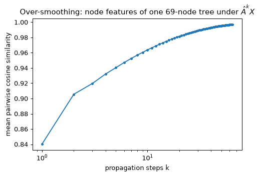
相似度起点就很高，因为不同节点的四维特征本来就相似，然后它向 1 攀升：16 步之后，\hat{\mathbf{A}}^k\mathbf{X} 的各行几乎平行。只有节点的度还有差别，它通过主特征向量中的因子 \sqrt{\tilde d_i} 体现，而节点的类型已经被平均掉了。过平滑是图和归一化的性质，任何权重都无法完全消除它。
朴素 16 层模型的训练准确率等于其测试准确率，两者都等于多数类比率：它没有学会训练集。这是一次优化失败。经过许多带 ReLU 和权重衰减的层平均之后，信号留下的梯度指向毫无用处的方向，训练就停留在把每个事件都判为负类的平台上。残差连接给每个节点的自身特征一条直接通路，也给梯度一条穿过整个堆叠的直接通路，于是同样的 16 层就能训练起来，达到 0.948，介于 4 层和 8 层的朴素模型之间（0.938 和 0.959）。问题不在于深度，而在于平滑时没有为节点自身的特征留出通路。
步骤 7：方向感知层
GCN 的对称邻接对一个节点的门、它的兄弟节点和它的输入一视同仁。而要学习的性质并非如此：它只取决于事件之上的门。一个把两个方向分开的层，可以直接表达“我上方的每个门都是或门”。方向感知层有三个权重矩阵：
一个用于节点自身，一个用于来自节点所在门（它的父节点；顶事件为零）的消息，一个用于来自其输入（它的子节点；基本事件为零）的消息的均值。它就是在有向边列表上的两次 index_add_ 调用。经过 L 层之后，关于上方 L 层那个门的信息只通过 \mathbf{W}_p 到达节点，丝毫没有被兄弟节点稀释。
class DirGNN(nn.Module):
def __init__(self, L, hidden=32):
super().__init__()
self.inp = nn.Linear(4, hidden)
self.Ws = nn.ModuleList(nn.Linear(hidden, hidden) for _ in range(L))
self.Wp = nn.ModuleList(nn.Linear(hidden, hidden, bias=False) for _ in range(L))
self.Wc = nn.ModuleList(nn.Linear(hidden, hidden, bias=False) for _ in range(L))
self.out = nn.Linear(hidden, 2)
def forward(self, g):
h = self.inp(g.x)
for Ws, Wp, Wc in zip(self.Ws, self.Wp, self.Wc):
from_gate = torch.zeros_like(h).index_add_(0, g.child, h[g.par])
from_inputs = torch.zeros_like(h).index_add_(0, g.par, h[g.child])
from_inputs = from_inputs / g.n_children[:, None]
h = torch.relu(Ws(h) + Wp(from_gate) + Wc(from_inputs))
return self.out(h)
dir_acc = {}
print("direction-aware model")
print(" L overall depth1 depth2 depth3 depth4")
for L in (2, 3, 4):
torch.manual_seed(0)
dir_model = fit(DirGNN(L), g_train)
dir_acc[L] = evaluate(dir_model, g_test)
print(f"{L:3d} " + " ".join(f"{a:.3f} " for a in dir_acc[L]))
dir4 = dir_model
depths = [1, 2, 3, 4]
plt.figure(figsize=(7, 4))
for L in (1, 2, 4):
plt.plot(depths, gcn_acc[L][1:], marker="o", label=f"GCN, L = {L}")
plt.plot(depths, dir_acc[4][1:], marker="s", color="k", label="direction-aware, L = 4")
plt.axhline(majority, color="grey", linestyle=":", label="majority class")
plt.xticks(depths)
plt.xlabel("depth of the basic event below the top event")
plt.ylabel("test accuracy")
plt.title("Accuracy by depth: receptive field and direction")
plt.legend(loc="lower left")
plt.show()
direction-aware model
L overall depth1 depth2 depth3 depth4
2 0.853 1.000 1.000 0.797 0.843
3 0.941 1.000 1.000 1.000 0.882
4 1.000 1.000 1.000 1.000 1.000
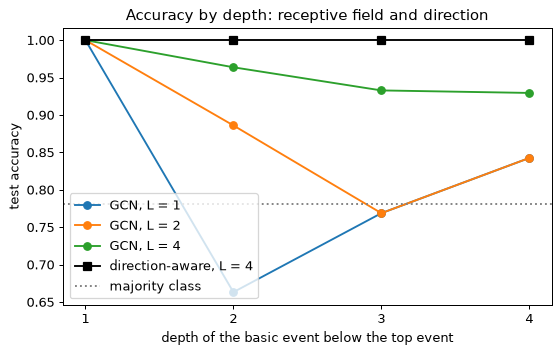
L = 2 时，方向感知模型优于同样深度的 GCN，而且恰好在其感受野所及的那些事件上准确率完美：深度 1 和 2 的事件，它们的门在上方一跳和两跳处。L = 3 时它在深度 3 以内都完美，L = 4 时它正确标注了每一个基本事件。这就是具有正确归纳偏置的架构的表现：网络的容量不必花在学习“方向很重要”上，它的极限正是感受野所预言的那些。
步骤 8：把模型用于冷却系统
训练好的 L = 4 方向感知模型从未见过这棵手工构建的树。应用它是最后一项检验：它必须找出 E1、E5 和 E6，即步骤 2 的答案。代码块还按第 8 节的布局画出这棵树，并标出预测的单点故障。
dir4.eval()
with torch.no_grad():
pred_cool = dir4(g_cool).argmax(1).numpy()
predicted = [NAMES[v] for v in np.where((pred_cool == 1) & (cooling["type"] == BASIC))[0]]
print("single points of failure predicted for the cooling system:", predicted)
pos = {0: (340, 40), 1: (130, 130), 2: (530, 130), 3: (340, 130), 4: (50, 230), 5: (130, 230),
6: (210, 230), 7: (450, 230), 8: (530, 230), 9: (610, 230), 10: (570, 320),
11: (650, 320)}
fig, ax = plt.subplots(figsize=(8, 4.2))
for v, p in enumerate(cooling["parent"]):
if p >= 0:
ax.plot([pos[v][0], pos[p][0]], [-pos[v][1], -pos[p][1]], color="grey", zorder=1)
for v, (px, py) in pos.items():
kind = ["OR", "AND", "event"][cooling["type"][v]]
hit = pred_cool[v] == 1 and cooling["type"][v] == BASIC
ax.scatter(px, -py, s=900, zorder=2, marker="s" if kind != "event" else "o",
color="tab:red" if hit else ("white" if kind == "event" else "lightgrey"),
edgecolor="k")
ax.text(px, -py, f"{NAMES[v]}\n{kind}" if kind != "event" else NAMES[v],
ha="center", va="center", fontsize=8, zorder=3)
ax.set_title("Cooling-system fault tree: predicted single points of failure in red")
ax.set_xlabel("layout position (arbitrary units)")
ax.set_ylabel("level (top at the top)")
ax.set_yticks([])
plt.show()
single points of failure predicted for the cooling system: ['E1', 'E5', 'E6']
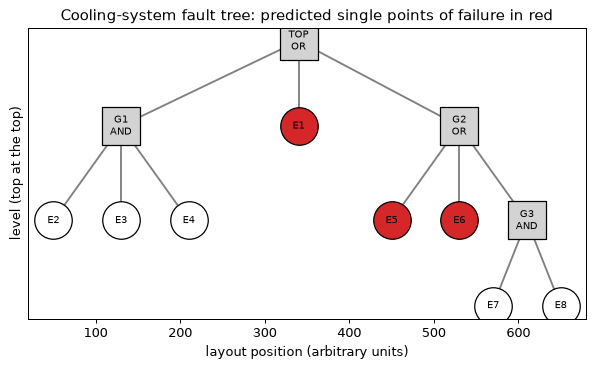
模型指出了 E1、E5 和 E6，别无其他。一棵小树判断正确，本身并不是有力的证据。证据是测试集，这棵树只是一次合理性检查，确认生成器生成的树与手绘的树遵循同样的规则。
你应该看到什么
- 按深度统计的准确率显示了感受野：L 层模型只对位于顶事件之下至多 L 跳的事件可靠。方向感知模型把这一点变得精确：在深度不超过 L 的每个深度上准确率都是 1.0。
- 无向 GCN 一直改进到约 4 层（0.938），在 8 层时达到峰值（0.959）。随后朴素的 12 层和 16 层模型对每个事件都预测多数类。它们的节点特征几乎完全相同（未经训练的 \hat{\mathbf{A}}^k\mathbf{X} 相似度向 1 攀升），而且没有残差通路，深的堆叠也很难训练。残差连接使它恢复。
- 对称邻接给每个事件的是它的门、它的兄弟节点以及两跳之外它的门的其他输入的混合。而这一性质只取决于上方的门。分开的父节点权重和子节点权重让网络能精确计算“上方的每个门都是或门”。
- 听起来正确的规则（“它的门是或门”）比多数类还差。每个模型都必须与这两者比较。
动手试试
- 按节点划分。不按树划分，而是对全部 300 棵树的所有节点做随机的 70/30 划分（所有节点在一张图中都可见，只隐藏标签），并比较准确率。解释为什么按节点划分会美化一个将被用于新树的模型。
- 深度特征。把每个节点的深度作为第五个特征加入，用 L = 4 重新训练无向 GCN。它能弥补与方向感知模型之间的差距吗？这个答案说明对称层缺少了什么？
- 预测哪些节点是基本事件。训练一个 2 层 GCN 来预测一个节点是否为基本事件，并与你在练习 9 中给出的基线比较。GCN 学到了什么？这一题最好在做完该练习之后再尝试。
实验 4 — 阻尼振子的物理信息神经网络：正问题、失败、修复与反问题
目标。 你为一个精确解已知的问题构建第 9 节的物理信息神经网络，即阻尼振子
其中 \omega_0 = 2\pi rad/s，\zeta = 0.1，区间为 t \in [0, 2] s。由于精确解已知，你可以测量误差，失败也正因此才看得见。你先用显而易见的方式训练网络，看着它收敛到平凡解 u = 0：它精确满足方程，却完全不满足初始条件。然后你用两种方式修复它：改变损失权重，以及改变单位（第三种修复是把初始条件直接构建进网络，留作扩展）。最后你把 \zeta 当作未知量，从十二个带噪声的读数中把它恢复出来，并与对闭式解做经典最小二乘拟合的结果比较。数据在实验中生成，无需下载，整个实验在笔记本电脑的 CPU 上大约运行三分钟（所示运行用时 190 s）。你需要 NumPy、SciPy、PyTorch 和 matplotlib。打印出的数字与你的结果在最后几位上可能不同。
步骤 1：问题及其精确解
当 \zeta < 1 时，满足这两个初始条件的解为
你可以用这两个条件来检验它：在 t = 0 处它等于 1，它在 0 处的导数为 -\zeta\omega_0 + \zeta\omega_0 = 0。代码还确定了本实验的工作约定。线程数设为一：这么小的网络每一步的运算量太少，无法从多线程中获益，而单线程可以避免其他程序争抢核心时出现的严重减速（在一个原型中，机器空闲时无论线程数多少，每一步约需 1.2 ms；机器繁忙时用四个线程，每一步约需 30 ms）。误差指标是在 1,000 个测试时刻上的相对 L2 误差 \lVert u_\theta - u\rVert_2 / \lVert u\rVert_2，对于输出恒为零的网络，它等于 1。
import time
import matplotlib.pyplot as plt
import numpy as np
import torch
import torch.nn as nn
from scipy.optimize import curve_fit
torch.manual_seed(0)
torch.set_num_threads(1)
ZETA, W0, T_END = 0.1, 2 * np.pi, 2.0
def exact(t, zeta=ZETA):
"""Closed-form solution of u'' + 2 zeta w0 u' + w0^2 u = 0, u(0) = 1, u'(0) = 0."""
wd = W0 * np.sqrt(1.0 - zeta**2)
return np.exp(-zeta * W0 * t) * (np.cos(wd * t) + (zeta * W0 / wd) * np.sin(wd * t))
def rel_l2(u_pred, u_true):
return float(np.linalg.norm(u_pred - u_true) / np.linalg.norm(u_true))
t_test = np.linspace(0.0, T_END, 1000)
u_test = exact(t_test)
print(f"damped frequency {W0 * np.sqrt(1 - ZETA**2) / (2 * np.pi):.4f} Hz")
print(f"u(0) = {exact(0.0):.4f}, u(0.25 s) = {exact(0.25):.4f}, u(2 s) = {exact(2.0):.4f}")
print(f"largest |u| after 1 s: {np.abs(u_test[t_test > 1.0]).max():.4f}")
plt.figure(figsize=(7, 3.2))
plt.plot(t_test, u_test, color="black")
plt.xlabel("time t (s)")
plt.ylabel("displacement u")
plt.title("Exact solution: damped oscillator, w0 = 2 pi rad/s, zeta = 0.1")
plt.show()
damped frequency 0.9950 Hz
u(0) = 1.0000, u(0.25 s) = 0.0926, u(2 s) = 0.2822
largest |u| after 1 s: 0.5318
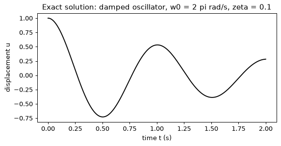
振子在这个区间内完成两个周期，其包络衰减到初始幅值的约 29%。记住这两个事实：网络必须重现两次振荡，而它要重现的幅值量级为 1。
步骤 2：网络、它的导数与损失
网络 u_\theta(t) 是一个多层感知机，有三个隐藏层，每层 32 个 tanh 单元。它把输入除以区间长度，使第一层看到的数总在 [0, 1] 之内，无论采用什么单位。光滑的 tanh 很重要：残差需要网络的二阶导数，而 ReLU 网络的二阶导数几乎处处为零。
求导的辅助函数就是 PINN 的全部机制。torch.autograd.grad 对输出关于输入时间求导，create_graph=True 使导数本身仍然可微，这样它既可以再求一次导（得到 u''），由它构建的损失也可以对权重求导。方程的残差对任意系数 c_1, c_2 写成 u'' + c_1 u' + c_2 u；有量纲问题中 c_1 = 2\zeta\omega_0、c_2 = \omega_0^2，步骤 6 会使用另一组系数。第 9 节的损失为
其中 N = 200 个配点（collocation points）均匀分布。fit 函数用学习率为 10^{-3} 的 Adam 训练给定的步数，并在你指定的步上记录两个损失项、测试误差，以及测试时刻上最大的 |u_\theta|。
class PINN(nn.Module):
def __init__(self, t_scale, width=32):
super().__init__()
self.t_scale = t_scale # input is divided by the interval length
self.net = nn.Sequential(
nn.Linear(1, width), nn.Tanh(),
nn.Linear(width, width), nn.Tanh(),
nn.Linear(width, width), nn.Tanh(),
nn.Linear(width, 1),
)
def forward(self, t):
return self.net(t / self.t_scale)
def d(u, t):
"""du/dt by autograd; create_graph keeps the result differentiable."""
return torch.autograd.grad(u, t, torch.ones_like(u), create_graph=True)[0]
def loss_terms(model, t_col, t_zero, c1, c2):
u = model(t_col)
u_t = d(u, t_col)
u_tt = d(u_t, t_col)
residual = (u_tt + c1 * u_t + c2 * u).pow(2).mean()
u0 = model(t_zero)
initial = (u0 - 1.0).pow(2).mean() + d(u0, t_zero).pow(2).mean()
return residual, initial
def fit(t_end, c1, c2, lam_ic, steps, log_at=(), lr=1e-3, seed=0):
"""Train a PINN; return the model and a log of (step, residual, ic, error, max|u|)."""
torch.manual_seed(seed)
model = PINN(t_end)
opt = torch.optim.Adam(model.parameters(), lr=lr)
t_col = torch.linspace(0.0, t_end, 200).reshape(-1, 1).requires_grad_(True)
t_zero = torch.zeros(1, 1, requires_grad=True)
t_eval = torch.tensor(t_test / T_END * t_end, dtype=torch.float32).reshape(-1, 1)
log, curve = [], []
t0 = time.time()
for step in range(steps + 1):
residual, initial = loss_terms(model, t_col, t_zero, c1, c2)
if step % 100 == 0 or step in log_at:
with torch.no_grad():
u_hat = model(t_eval).numpy().ravel()
err = rel_l2(u_hat, u_test)
curve.append((step, err))
if step in log_at:
log.append((step, residual.item(), initial.item(), err, np.abs(u_hat).max()))
if step == steps:
break
loss = residual + lam_ic * initial
opt.zero_grad()
loss.backward()
opt.step()
ms = 1000 * (time.time() - t0) / steps
return model, log, curve, ms
def show(log):
print(" step residual ic term rel. L2 error max|u|")
for step, res, ic, err, umax in log:
print(f"{step:6d} {res:8.2e} {ic:7.4f} {err:13.4f} {umax:6.4f}")
# one forward pass at initialisation: the sizes of the two loss terms
model0 = PINN(T_END)
t_col0 = torch.linspace(0.0, T_END, 200).reshape(-1, 1).requires_grad_(True)
t_zero0 = torch.zeros(1, 1, requires_grad=True)
res0, ic0 = loss_terms(model0, t_col0, t_zero0, 2 * ZETA * W0, W0**2)
print(f"at initialisation: residual {res0.item():.2f}, initial conditions {ic0.item():.2f}")
print(f"parameters: {sum(p.numel() for p in model0.parameters())}")
at initialisation: residual 52.46, initial conditions 1.36
parameters: 2209
还没有任何训练，残差项就已经比初始条件项大约四十倍。这并不是初始化的偶然结果。方程中含有 \omega_0^2 \approx 39.5，所以 u 上一个单位的误差会带来量级为 40 的残差、量级为 1,500 的残差平方，而 u(0) 上同样一个单位的误差只带来 1。两项所处的尺度相差三个数量级，优化器跟着大的那一项走。
步骤 3：显而易见的损失，以及平凡解
现在在问题本身的单位下训练，两项权重相等（\lambda_{\text{ic}} = 1），训练 3,000 步。使用有量纲的系数和区间 [0, 2]。
C1_DIM, C2_DIM = 2 * ZETA * W0, W0**2
model_a, log_a, curve_a, ms = fit(T_END, C1_DIM, C2_DIM, 1.0, 3000, log_at=(0, 1000, 3000))
show(log_a)
print(f"{ms:.1f} ms per step")
with torch.no_grad():
u_a = model_a(torch.tensor(t_test, dtype=torch.float32).reshape(-1, 1)).numpy().ravel()
plt.figure(figsize=(7, 3.2))
plt.plot(t_test, u_test, color="black", label="exact")
plt.plot(t_test, u_a, color="tab:red", label="PINN, lambda_ic = 1")
plt.xlabel("time t (s)")
plt.ylabel("displacement u")
plt.title("Dimensional units, equal weights: the trivial solution")
plt.legend()
plt.show()
step residual ic term rel. L2 error max|u|
0 5.25e+01 1.3626 1.0914 0.1951
1000 3.14e-03 0.9922 0.9993 0.0039
3000 5.92e-03 0.9877 0.9986 0.0063
5.1 ms per step
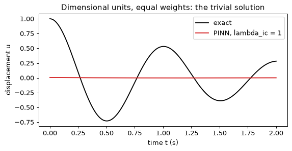
损失降到了一个很小的数，答案却是错的。残差项很小，初始条件项几乎没有离开它约为 1 的初始值，网络输出的是一条大小约 0.01 的曲线，与振荡毫无关系。相对误差接近 1。这就是第 9 节所述失败模式最纯粹的形式：u \equiv 0 是该微分方程的一个解，所以把网络“关掉”就能把残差压到零；而初始条件是区分所要的解与零解的唯一依据，它们的梯度太弱，抵挡不住。打印出的损失中没有任何迹象提醒你，只有与已知答案（或与测量值）比较才能发现。
步骤 4：彻底去掉初始条件
为了确认初始条件是唯一的屏障，令 \lambda_{\text{ic}} = 0。这时已经没有任何东西能把所要的解与零区分开来。
model_b, log_b, curve_b, _ = fit(T_END, C1_DIM, C2_DIM, 0.0, 3000, log_at=(0, 3000))
show(log_b)
step residual ic term rel. L2 error max|u|
0 5.25e+01 1.3626 1.0914 0.1951
3000 5.07e-06 1.0002 1.0000 0.0001
残差降到约 5\times10^{-6}，比上一次运行低三个数量级，网络的幅值量级为 10^{-4}。误差为 1.000：网络找到的恰恰是残差为零的函数中最容易找到的那一个。一个适定问题需要它的条件，而一个不让条件成为硬性要求的损失存在平凡的极小值。
步骤 5：第一种修复，给条件一个大权重
把 \lambda_{\text{ic}} 提高到 100，使网络以关键方式出错时两项的大小相当，并训练 10,000 步。训练更长，是因为这个问题比看上去更难：要用一个起初几乎平坦的函数去拟合衰减振荡的两个周期。
model_c, log_c, curve_c, _ = fit(
T_END, C1_DIM, C2_DIM, 100.0, 10000, log_at=(0, 1000, 5000, 10000)
)
show(log_c)
step residual ic term rel. L2 error max|u|
0 5.25e+01 1.3626 1.0914 0.1951
1000 5.24e+00 0.0086 0.3306 0.9071
5000 1.07e-01 0.0000 0.0152 0.9973
10000 1.89e-02 0.0000 0.0039 0.9992
权重起了作用，但很慢：1,000 步后误差仍为 33%，5,000 步后约 1.5%，10,000 步后 0.4%。残差项在数千步内一直远高于零，说明优化器在两项之间被拉扯得多么厉害。代价是多了一个超参数。这里选 100，是因为我们在权重为 1 时看到了失败；而当解未知时，没有误差可看，权重只能通过试错或自适应方案来确定（见第 9 节）。
步骤 6：第二种修复，无量纲化
更深层的原因在于单位。定义无量纲时间 \hat t = \omega_0 t，对我们的区间，它的取值范围是 [0, 4\pi]。由链式法则得 \mathrm{d}/\mathrm{d}t = \omega_0\, \mathrm{d}/\mathrm{d}\hat t，于是
初始条件不变，仍为 u(0) = 1 和 u_{\hat t}(0) = 0。现在系数为 c_1 = 2\zeta = 0.2 和 c_2 = 1，所有项的量级都是 1，残差项与初始条件项无需任何手工调节的权重就大小相当。网络相同，权重回到 1，变的只是坐标。
C1_ND, C2_ND = 2 * ZETA, 1.0
model_d, log_d, curve_d, ms = fit(
4 * np.pi, C1_ND, C2_ND, 1.0, 10000, log_at=(0, 2500, 5000, 7500, 10000)
)
show(log_d)
print(f"{ms:.1f} ms per step")
step residual ic term rel. L2 error max|u|
0 3.37e-02 1.3623 1.0914 0.1951
2500 4.67e-03 0.0000 0.3892 0.9946
5000 2.84e-04 0.0000 0.0603 1.0004
7500 4.35e-07 0.0000 0.0004 1.0002
10000 9.52e-06 0.0000 0.0073 1.0039
4.8 ms per step
现在初始残差是 0.034 而不是 52，所以步骤 2 中的失衡消失了，甚至反了过来：初始条件项（1.36）现在是较大的一项，优化器先满足它，再去拟合振荡。训练在开始阶段并没有更快（2,500 步后误差为 0.39，5,000 步后为 0.06，而加权运行在 5,000 步时为 0.015），但它持续改进，在 7,500 步时达到 0.0004，比加权运行的最终值 0.0039 低十倍，而且不需要调节任何权重。它并没有停留在那里。在第 10,000 步，打印出的误差为 0.0073，因为固定学习率 10^{-3} 的 Adam 不断把网络从极小值附近踢开：在本实验一个打印了 curve_d 的副本中，每 100 步记录一次的误差在第 6,000 步之后在约 0.0001 和 0.016 之间跳动，最低值（0.00006）出现在第 8,700 步。加权运行同样会振荡，在最后 1,000 步内介于 0.004 和 0.013 之间。常用的补救办法是使用衰减的学习率，或按某个验证指标保留最好的检查点；这里要说明的是，无量纲形式不用权重就能达到很低的误差。（两次运行的残差不能直接比较，因为两个方程相差一个因子 \omega_0^2。）这个教训具有普遍性，不局限于这个方程：在动用损失平衡方案之前，先把方程写成各项量级都为 1 的形式。
三次运行中记录的收敛曲线直接展示了这一点。
fig, ax = plt.subplots(1, 2, figsize=(10, 3.6))
for curve, label, colour in [
(curve_a, "dimensional, weight 1", "tab:red"),
(curve_c, "dimensional, weight 100", "tab:orange"),
(curve_d, "non-dimensional, weight 1", "tab:blue"),
]:
steps_, errs = zip(*curve)
ax[0].semilogy(steps_, errs, label=label, color=colour)
ax[0].set_xlabel("training step")
ax[0].set_ylabel("relative L2 error")
ax[0].set_title("Error against the exact solution")
ax[0].legend()
with torch.no_grad():
u_d = model_d(torch.tensor(W0 * t_test, dtype=torch.float32).reshape(-1, 1))
ax[1].plot(t_test, u_test, color="black", label="exact")
ax[1].plot(t_test, u_d.numpy().ravel(), "--", color="tab:blue", label="PINN, non-dimensional")
ax[1].set_xlabel("time t (s)")
ax[1].set_ylabel("displacement u")
ax[1].set_title("The repaired network")
ax[1].legend()
plt.tight_layout()
plt.show()
步骤 7：反问题
现在阻尼比未知。在 [0, 2] s 内的随机时刻，由 \zeta = 0.1 的精确解加上标准差为 0.02 的高斯噪声，生成十二个位移读数，就像由加速度计数据得到的十二个样本那样。网络与步骤 6 一样是无量纲的。未知量作为一个可训练的标量进入残差，参数化为 \log\zeta 以保证它为正，初始值为 \zeta = 0.5，比真值大五倍。损失中加入一个数据项，即读数处均方误差的十倍；权重 10 表示：对读数的信任程度，略高于对单个配点上满足物理方程的要求。网络权重和 \log\zeta 由同一个 Adam 一起优化。
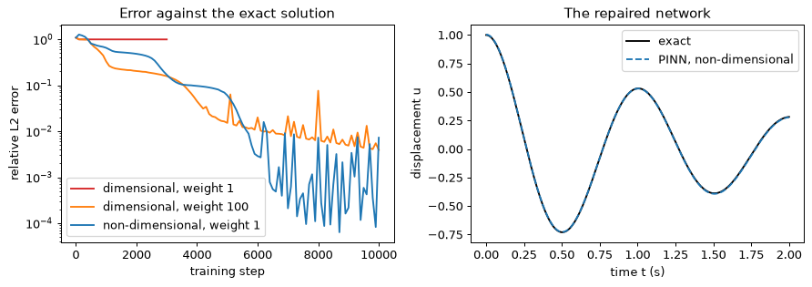
g = torch.Generator().manual_seed(1)
t_meas = T_END * torch.rand(12, generator=g)
y_meas = torch.tensor(exact(t_meas.numpy()), dtype=torch.float32) + 0.02 * torch.randn(
12, generator=g
)
th_meas = (W0 * t_meas).reshape(-1, 1) # readings in the non-dimensional time
def fit_inverse(steps=10000, lr=1e-3, seed=0, w_data=10.0):
torch.manual_seed(seed)
model = PINN(4 * np.pi)
log_zeta = nn.Parameter(torch.log(torch.tensor(0.5)))
opt = torch.optim.Adam(list(model.parameters()) + [log_zeta], lr=lr)
t_col = torch.linspace(0.0, 4 * np.pi, 200).reshape(-1, 1).requires_grad_(True)
t_zero = torch.zeros(1, 1, requires_grad=True)
t_eval = torch.tensor(W0 * t_test, dtype=torch.float32).reshape(-1, 1)
path = []
for step in range(steps + 1):
zeta = log_zeta.exp()
residual, initial = loss_terms(model, t_col, t_zero, 2 * zeta, 1.0)
data = (model(th_meas).squeeze(1) - y_meas).pow(2).mean()
if step % 1000 == 0:
with torch.no_grad():
err = rel_l2(model(t_eval).numpy().ravel(), u_test)
path.append((step, zeta.item(), err))
if step == steps:
break
loss = residual + initial + w_data * data
opt.zero_grad()
loss.backward()
opt.step()
return model, zeta.item(), path
model_e, zeta_hat, path = fit_inverse()
print(" step zeta solution error")
for step, z, err in path:
print(f"{step:6d} {z:.4f} {err:.4f}")
print(f"recovered zeta = {zeta_hat:.4f} (true {ZETA})")
step zeta solution error
0 0.5000 1.0914
1000 0.4235 0.2269
2000 0.2372 0.1180
3000 0.1736 0.0806
4000 0.1400 0.0599
5000 0.1201 0.0473
6000 0.1087 0.0345
7000 0.1030 0.0305
8000 0.1007 0.0169
9000 0.0996 0.0181
10000 0.0987 0.0192
recovered zeta = 0.0987 (true 0.1)
估计值从高出五倍的位置出发，到第 5,000 步降到 0.12，最终稳定在 0.0987，比真值 0.1 低 1.3%。解的误差最终约为 0.019。在均方根值为 0.44 的信号上，0.02 的噪声相当于十二个读数处约 0.046 的相对误差，所以网络给出的解比读数本身更接近真值：方程滤掉了噪声。十二个读数加一个方程就够了，因为方程提供了曲线的形状，读数只需要确定一个数。解的误差没有步骤 6 的最好结果（0.0004）那么小，是因为数据项把网络拉向带噪声的点。
步骤 8：经典基线
对于一个有闭式解的单参数反问题，公允的比较对象是用同样的读数对闭式解做最小二乘拟合。curve_fit 最小化 exact(t, zeta) 与读数之差的平方，并根据拟合的曲率给出不确定度。
popt, pcov = curve_fit(
lambda t, z: exact(t, z), t_meas.numpy(), y_meas.numpy(), p0=[0.5], bounds=(0.01, 0.99)
)
print(f"curve_fit: zeta = {popt[0]:.4f} +/- {np.sqrt(pcov[0, 0]):.4f}")
print(f"PINN: zeta = {zeta_hat:.4f}")
fig, ax = plt.subplots(1, 2, figsize=(10, 3.6))
ax[0].plot(t_test, u_test, color="black", label="exact (zeta = 0.1)")
with torch.no_grad():
u_e = model_e(torch.tensor(W0 * t_test, dtype=torch.float32).reshape(-1, 1)).numpy()
ax[0].plot(t_test, u_e.ravel(), "--", color="tab:blue", label="PINN, inverse problem")
ax[0].scatter(t_meas.numpy(), y_meas.numpy(), color="tab:red", zorder=3, label="12 readings")
ax[0].set_xlabel("time t (s)")
ax[0].set_ylabel("displacement u")
ax[0].set_title("Twelve noisy readings and the recovered solution")
ax[0].legend()
steps_p, zetas, _ = zip(*path)
ax[1].plot(steps_p, zetas, "o-", color="tab:blue", label="PINN estimate")
ax[1].axhline(ZETA, color="black", label="true value")
ax[1].axhline(popt[0], color="tab:green", linestyle="--", label="curve_fit")
ax[1].set_xlabel("training step")
ax[1].set_ylabel("damping ratio zeta")
ax[1].set_title("The estimate of zeta during training")
ax[1].legend()
plt.tight_layout()
plt.show()
curve_fit: zeta = 0.0977 +/- 0.0015
PINN: zeta = 0.0987
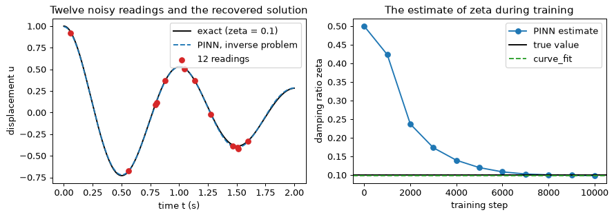
两个估计值 0.0977 和 0.0987 相差约为拟合自身标准误差 0.0015 的三分之二，而真值 0.1 与最小二乘估计相差约 1.5 个标准误差：两者都与真值一致，彼此也一致。这是正确的结论，而不是令人失望的结论。当解是只含一个未知量的闭式解时，最小二乘拟合更快，能给出误差棒，也不会陷入平凡解。PINN 的价值在没有闭式解时才体现出来：非线性方程、不规则几何、作为空间场的未知量。本实验的价值在于，你在一个小到可以核对的问题上看到了每一步。
你应该看到什么
- 在有量纲单位下，残差项一开始约比初始条件项大 40 倍（52.5 对 1.4）。权重相等时，优化器把网络推向几乎为零：损失很小（残差 0.006），相对误差却是 0.999。没有初始条件时结果相同，残差为 5\times10^{-6}。平凡解精确满足方程。
- 给初始条件加权 100 可以修复它（10,000 步后误差 0.0039）；无量纲化不用权重也能修复它，因为方程各项的量级都是 1，而且能达到更低的误差（7,500 步时 0.0004），只是在固定学习率下误差会来回跳动，在 10,000 步时读数为 0.0073。
- 反问题从十二个带噪声的读数中恢复出 \zeta = 0.0987，与真值相差 1.3% 以内，并与对闭式解的最小二乘拟合（0.0977 \pm 0.0015）一致。有闭式解时就用闭式解；没有闭式解时，PINN 才物有所值。
- 通过自动微分求二阶导数需要多次前向和反向传播，但这个网络每一步只需约 5 ms，所以整个实验在 CPU 上大约三分钟就能跑完。开销在于步数（达到 0.0004 需要 7,500 步），而不在于每一步。
动手试试
- 硬约束。 把初始条件构建进网络，u_\theta(t) = 1 + (t/t_{\text{end}})^2\,N_\theta(t)：无论 N_\theta 是什么，它在 t = 0 处都等于 1，且导数为零。去掉初始条件项，在有量纲单位下训练 10,000 步。平凡解不再可能出现，所以步骤 3 的失败不会发生。误差是否仍然很大？为什么？（尺度问题并没有消失。）
- 谱偏差。 令 \omega_0 = 8\pi（2 s 内有八个周期），再次训练无量纲形式；网络现在需要八次振荡。然后加入傅里叶特征 [\sin k\hat t, \cos k\hat t]（k = 1, 2, 4）作为额外输入，比较两次运行。为什么输入量级为 1 的 tanh 网络难以处理高频？
- 从常微分方程到偏微分方程。 练习 e12 从这段代码出发，转向热传导方程，那里的配点变成空间和时间上的网格。
实验 5 — 在无标签振动信号上做对比预训练
目标。 你在机器振动窗口上用第 11 节的 InfoNCE 损失预训练一个编码器，训练中从不向它展示这些窗口的标签，然后用线性探测（linear probe）衡量预训练带来了什么：一个只用每类 5、20 或 100 个有标签窗口训练的逻辑回归。比较对象是工程师首先会尝试的两样东西，即原始波形及其频谱幅值，以及一个从未训练过的编码器。随后你逐一去掉数据增强，看着表示变差，这正是本实验的要点：在对比学习中，数据增强就是监督。振动数据在实验中生成（四个类别，随机相位），所以无需下载，整个实验在笔记本电脑的 CPU 上运行一到两分钟。你需要 NumPy、scikit-learn、PyTorch 和 matplotlib。打印出的数字与你的结果在最后几位上可能不同。
步骤 1：振动窗口生成器
真实的旋转机械会用加速度计记录。这里一个窗口是以 256 Hz 采样的一秒钟，即 256 个样本，对应一根以转速 f_r 旋转的轴，f_r 在 9 到 11 Hz 之间均匀抽取。四个类别的区别在于它们包含 f_r 的哪些谐波：
| 类别 | 信号（加噪声前） |
|---|---|
| 0 健康 | 1.0\sin(2\pi f_r t + \varphi_1) + 0.2\sin(2\pi\,2 f_r t + \varphi_2) |
| 1 不平衡 | 同上，但 1x 幅值提高到 2.5 |
| 2 不对中 | 1x、2x 和 3x 分量，幅值分别为 1.0、1.5 和 0.5 |
| 3 轴承缺陷 | 健康信号，加上以 3.57 f_r 重复的冲击，每次冲击是一个幅值为 1.5、按 e^{-30\tau} 衰减的 60 Hz 振荡 |
所有相位都是随机的，传感器增益在 0.8 到 1.2 上均匀分布，并加上标准差为 0.3 的高斯噪声。随机相位是这个问题的核心。当窗口从周期中任意时刻开始时，真实的记录就是这个样子；这也意味着同一类别的两个窗口没有任何共同的样本值。标签取决于各谐波的幅值，而不取决于相位。
冲击序列由距上一次冲击的时间 \tau 构建，它等于 (t - t_0) 对冲击周期 1/(3.57 f_r) 取模；这样只用一行向量化代码，就能得到每次冲击之后完整的衰减振荡。
import time
import matplotlib.pyplot as plt
import numpy as np
import torch
import torch.nn as nn
import torch.nn.functional as F
from sklearn.linear_model import LogisticRegression
from sklearn.metrics import confusion_matrix
from sklearn.preprocessing import StandardScaler
np.random.seed(0)
torch.manual_seed(0)
rng = np.random.default_rng(0)
FS, N_SAMPLES = 256, 256
T = np.arange(N_SAMPLES) / FS
CLASS_NAMES = ["healthy", "imbalance", "misalignment", "bearing defect"]
def make_windows(n, rng):
labels = rng.integers(0, 4, size=n)
f_r = rng.uniform(9.0, 11.0, size=(n, 1))
ph = rng.uniform(0.0, 2 * np.pi, size=(n, 3))
def wave(k, i): # k-th harmonic of the shaft speed with its own random phase
return np.sin(2 * np.pi * k * f_r * T + ph[:, i:i + 1])
amp = np.array([[1.0, 0.2, 0.0], # healthy: amplitudes of 1x, 2x, 3x
[2.5, 0.2, 0.0], # imbalance
[1.0, 1.5, 0.5], # misalignment
[1.0, 0.2, 0.0]])[labels] # bearing defect: healthy + impulses
x = amp[:, 0:1] * wave(1, 0) + amp[:, 1:2] * wave(2, 1) + amp[:, 2:3] * wave(3, 2)
period = 1.0 / (3.57 * f_r)
t0 = rng.uniform(0.0, 1.0, size=(n, 1)) * period
tau = np.mod(T - t0, period) # time since the most recent impulse
impulses = 1.5 * np.exp(-30.0 * tau) * np.sin(2 * np.pi * 60.0 * tau)
x = x + (labels == 3)[:, None] * impulses
x = x * rng.uniform(0.8, 1.2, size=(n, 1)) + 0.3 * rng.standard_normal((n, N_SAMPLES))
return x.astype(np.float32), labels
X_pool, y_pool = make_windows(4000, rng) # pretraining pool; labels kept aside
X_test, y_test = make_windows(2000, rng)
print(X_pool.shape, X_test.shape)
print("class counts in the pool:", np.bincount(y_pool))
print(f"signal standard deviation {X_pool.std():.3f}")
fig, axes = plt.subplots(2, 4, figsize=(13, 4.8))
spec_axis = np.fft.rfftfreq(N_SAMPLES, 1 / FS)
for c in range(4):
x = X_pool[np.flatnonzero(y_pool == c)[0]]
axes[0, c].plot(T, x, color="black", linewidth=0.8)
axes[0, c].set_title(CLASS_NAMES[c])
axes[0, c].set_xlabel("time (s)")
axes[1, c].plot(spec_axis, np.abs(np.fft.rfft(x)) / N_SAMPLES * 2, color="tab:blue")
axes[1, c].set_xlabel("frequency (Hz)")
axes[1, c].set_xlim(0, 128)
axes[0, 0].set_ylabel("acceleration (a.u.)")
axes[1, 0].set_ylabel("spectral magnitude")
fig.suptitle("One window of each class (top) and its magnitude spectrum (bottom)")
plt.tight_layout()
plt.show()
(4000, 256) (2000, 256)
class counts in the pool: [ 986 985 991 1038]
signal standard deviation 1.306
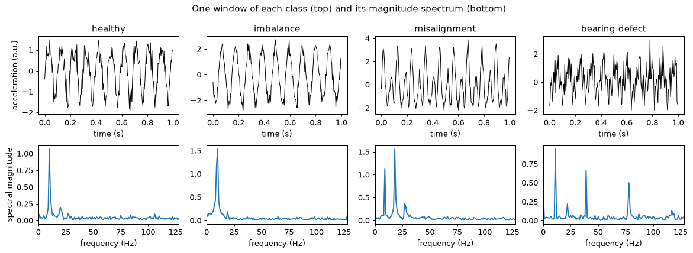
先看频谱再看波形，并注意各纵轴的刻度不同。健康窗口在约 f_r 处有一个峰，在 2f_r 处有一个小峰。不平衡窗口在 f_r 处的峰更高（1x 幅值大 2.5 倍，不过由于窗口里不是整数个周期，频谱泄漏也会降低峰高）。不对中窗口的最大峰在 2f_r 处，在 3f_r 处还有第三个峰。轴承缺陷窗口多出一排位于冲击频率 3.57 f_r 整数倍处的梳状峰，在这个窗口中靠近 39 和 78 Hz。在时域里，这些类别很难用肉眼区分，而且相位在窗口之间各不相同。频谱是工程师习惯计算的东西，步骤 3 把它们用作基线。
步骤 2：探测协议
表示的质量，用一个线性分类器在标签很少时在它上面的表现来衡量。线性探测无法通过学习表示的某个巧妙非线性函数来弥补一个糟糕的表示，所以它的准确率反映的是特征本身。对每类 5、20 和 100 个窗口这三种标签预算，辅助函数从池中为每类抽取这么多有标签窗口，用不同的抽取重复五次，在每次抽取上拟合一个经过标准化的逻辑回归，并对 2,000 个测试窗口上的准确率求平均。在每类 5 个标签时，五次抽取很重要，因为单独一次抽取的 20 个窗口可能运气不好。
BUDGETS = (5, 20, 100)
def probe(feat_pool, feat_test, budgets=BUDGETS, n_draws=5, seed=0, return_model=False):
"""Mean test accuracy of a logistic regression on a few labelled windows per class."""
draw_rng = np.random.default_rng(seed)
accs, last = [], None
for n_per_class in budgets:
scores = []
for _ in range(n_draws):
idx = np.concatenate([
draw_rng.choice(np.flatnonzero(y_pool == c), n_per_class, replace=False)
for c in range(4)
])
scaler = StandardScaler().fit(feat_pool[idx])
clf = LogisticRegression(max_iter=5000).fit(scaler.transform(feat_pool[idx]),
y_pool[idx])
pred = clf.predict(scaler.transform(feat_test))
scores.append((pred == y_test).mean())
last = pred
accs.append(float(np.mean(scores)))
return (accs, last) if return_model else accs
def fmt(accs):
return " ".join(f"{a:.3f}" for a in accs)
步骤 3：基线
三条基线给出了门槛。第一条是在 256 个原始样本上的逻辑回归。第二条是在 129 个 FFT 幅值上的逻辑回归：这是旋转机械的经典特征，按构造就丢弃了相位。第三条是步骤 5 的编码器在任何训练之前、权重随机时的结果：随机网络是一个信息量出奇丰富的特征提取器，任何声称预训练有帮助的说法都必须胜过它。
acc_raw = probe(X_pool, X_test)
fft_pool = np.abs(np.fft.rfft(X_pool, axis=1)).astype(np.float32)
fft_test = np.abs(np.fft.rfft(X_test, axis=1)).astype(np.float32)
acc_fft = probe(fft_pool, fft_test)
print(f"raw waveform (256 features): {fmt(acc_raw)}")
print(f"FFT magnitude (129 features): {fmt(acc_fft)}")
class Encoder(nn.Module):
"""h = f(x) is the representation kept after pretraining; z = g(h) feeds the loss."""
def __init__(self, d_in=256, d_hidden=256, d_h=128, d_z=64):
super().__init__()
self.f = nn.Sequential(nn.Linear(d_in, d_hidden), nn.ReLU(), nn.Linear(d_hidden, d_h))
self.g = nn.Sequential(nn.ReLU(), nn.Linear(d_h, d_z)) # projection head
def forward(self, x):
h = self.f(x)
return h, F.normalize(self.g(h), dim=1)
def embed(model, X):
with torch.no_grad():
h, z = model(torch.from_numpy(X))
return h.numpy(), z.numpy()
torch.manual_seed(0)
untrained = Encoder()
h_pool0, _ = embed(untrained, X_pool)
h_test0, _ = embed(untrained, X_test)
acc_untrained = probe(h_pool0, h_test0)
print(f"untrained encoder, h (128): {fmt(acc_untrained)}")
raw waveform (256 features): 0.371 0.448 0.473
FFT magnitude (129 features): 0.850 0.899 0.974
untrained encoder, h (128): 0.532 0.738 0.895
可以看出三个事实。原始波形远远落后于其他两者：在相位随机时，256 个样本的任何固定线性组合都无法识别类别，这正是上面陈述的问题。FFT 幅值要好得多，因为幅值不依赖于相位，但在每类 5 个标签时，它们只达到约 0.85，与步骤 6 中最好的表示之间的差距也在这里最大。未训练的网络已经优于原始波形，因为信号的随机非线性特征在一定程度上对相位不敏感；但在每类 5 个标签时它仍远低于 FFT（0.53 对 0.85），而它就是训练后的编码器必须越过的门槛。
步骤 4：损失
损失是 InfoNCE 的 NT-Xent 形式（第 11 节）。一个含 B 个窗口的 batch 给出 2B 个视图，即每个窗口的两个增强版本。设 \mathbf{z}_1, \dots, \mathbf{z}_{2B} 是它们经过 L2 归一化的嵌入，于是点积就是余弦相似度。对于视图 i，设其孪生视图为 j(i)，损失为
这是在其余 2B - 1 个视图上的交叉熵，孪生视图是正确的类别。在代码中，这是一次矩阵乘法、把对角线设为 -\infty（一个视图永远不是它自己的候选），再以孪生视图的索引为目标调用 F.cross_entropy。温度 \tau 去除相似度：\tau 越小，softmax 越尖锐，对最难的负样本惩罚越重。
合理性检查复用第 11 节的算例：一个锚点与正样本和三个负样本的相似度为 (0.9, 0.2, 0.1, -0.3)。在 \tau = 1 时，softmax 几乎是平的，损失为 0.81；在 \tau = 0.1 时，正样本占主导，损失为 0.0013。
def nt_xent(z1, z2, tau):
"""InfoNCE over 2B views; z1[i] and z2[i] are two views of window i (unit vectors)."""
b = z1.shape[0]
z = torch.cat([z1, z2], dim=0) # 2B x d
logits = z @ z.T / tau # 2B x 2B cosine similarities / tau
logits.fill_diagonal_(float("-inf")) # a view is not its own negative
target = torch.cat([torch.arange(b, 2 * b), torch.arange(0, b)]) # index of the twin
return F.cross_entropy(logits, target)
sims = torch.tensor([[0.9, 0.2, 0.1, -0.3]])
for tau in (1.0, 0.1):
print(f"tau = {tau}: loss {F.cross_entropy(sims / tau, torch.tensor([0])).item():.4f}")
# Collapse check: identical embeddings for every view give log(2B - 1).
B = 256
collapsed = F.normalize(torch.ones(B, 64), dim=1)
print(f"collapsed embeddings: {nt_xent(collapsed, collapsed, 0.2).item():.4f}")
print(f"log(2B - 1) = log({2 * B - 1}) = {np.log(2 * B - 1):.4f}")
tau = 1.0: loss 0.8096
tau = 0.1: loss 0.0013
collapsed embeddings: 6.2364
log(2B - 1) = log(511) = 6.2364
坍塌值是一个不携带任何信息的表示的损失：每个候选看起来都一样，所以 softmax 在 2B - 1 = 511 个视图上是均匀的，损失为 \log 511。训练必须把损失降到远低于这个数；如果损失停在它附近，说明编码器已经坍塌，或者数据增强破坏性太强。
步骤 5：数据增强与预训练循环
每个视图由三个随机操作生成，选择它们是为了说明哪些东西对表示来说不应有影响：随机若干个样本的循环时移（窗口起点是任意的，所以相位不应有影响）、在 0.8 到 1.25 之间按对数均匀分布抽取的增益（传感器灵敏度不应有影响），以及标准差为 0.1 的附加噪声。时移用 torch.gather 实现，使 batch 中每个窗口都有自己的时移量。循环时移几乎完全保留频谱的幅值，而改变相位，这正是我们想教给模型的不变性（环绕把窗口的末尾接到了开头，这是一个小的伪影，真实的流水线会从更长的记录中截取窗口来避免它）。
编码器就是步骤 3 中构建的那个。训练使用 B = 256 的 batch（于是每个视图有一个孪生视图，以及来自其他窗口的 2B - 2 = 510 个视图作为负样本），学习率为 10^{-3} 的 Adam，\tau = 0.2，在 4,000 个池窗口上训练 60 个轮次：每个轮次 15 个 batch，共 900 步。不使用标签。
def augment(x, gen, shift=True, gain=True, noise=True):
b, n = x.shape
if shift:
s = torch.randint(0, n, (b, 1), generator=gen)
idx = (torch.arange(n).unsqueeze(0) + s) % n
x = torch.gather(x, 1, idx)
if gain:
x = x * torch.exp(torch.empty(b, 1).uniform_(np.log(0.8), np.log(1.25), generator=gen))
if noise:
x = x + 0.1 * torch.randn(x.shape, generator=gen)
return x
def pretrain(seed=0, epochs=60, batch=256, tau=0.2, lr=1e-3, **aug):
torch.manual_seed(seed)
gen = torch.Generator().manual_seed(seed)
model = Encoder()
opt = torch.optim.Adam(model.parameters(), lr=lr)
data = torch.from_numpy(X_pool)
losses = []
for epoch in range(epochs):
order = torch.randperm(len(data), generator=gen)
for start in range(0, len(data) - batch + 1, batch): # drop the last short batch
xb = data[order[start:start + batch]]
_, z1 = model(augment(xb, gen, **aug))
_, z2 = model(augment(xb, gen, **aug))
loss = nt_xent(z1, z2, tau)
opt.zero_grad()
loss.backward()
opt.step()
losses.append(loss.item())
return model, losses
t0 = time.time()
model_full, losses_full = pretrain(seed=0)
print(f"{len(losses_full)} steps in {time.time() - t0:.1f} s")
print(f"loss at step 0: {losses_full[0]:.3f}, final loss (mean of last 15): "
f"{np.mean(losses_full[-15:]):.3f}")
print(f"loss of collapsed embeddings: log(2B - 1) = {np.log(511):.3f}")
plt.figure(figsize=(7, 3.2))
plt.plot(losses_full, color="tab:blue")
plt.axhline(np.log(511), color="grey", linestyle="--", label="log(2B - 1), collapsed")
plt.xlabel("training step")
plt.ylabel("InfoNCE loss")
plt.title("Contrastive pretraining loss (tau = 0.2, B = 256)")
plt.legend()
plt.show()
900 steps in 12.4 s
loss at step 0: 6.150, final loss (mean of last 15): 2.376
loss of collapsed embeddings: log(2B - 1) = 6.236
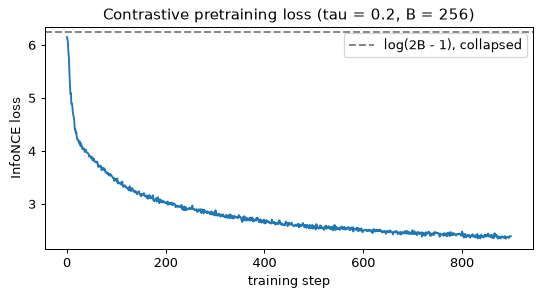
损失从 6.15 开始，接近坍塌值 6.24，然后降到约 2.4，即坍塌值的 38%。它不会降到零，也不应该降到零：在噪声和增益都不同的情况下，一个窗口的两个视图永远不可能在其他 510 个视图中被完美匹配；如果损失趋于零，反倒说明这个任务是平凡的。
步骤 6：在预训练表示上做线性探测
编码器现在用作冻结的特征提取器。探测在与基线相同的有标签抽取上、按相同的协议训练。探测两种表示：\mathbf{h}，即编码器本体的 128 维输出；以及 \mathbf{z}，即经过损失所看到的投影头之后的 64 维输出。另外用两个随机种子再做两次预训练，可以感受一下波动的大小。
h_pool, z_pool = embed(model_full, X_pool)
h_test, z_test = embed(model_full, X_test)
acc_h = probe(h_pool, h_test)
acc_z = probe(z_pool, z_test)
print("labels per class: ", " ".join(f"{b:>3d} " for b in BUDGETS))
print(f"raw waveform: {fmt(acc_raw)}")
print(f"FFT magnitude: {fmt(acc_fft)}")
print(f"untrained encoder, h: {fmt(acc_untrained)}")
print(f"contrastive, h: {fmt(acc_h)}")
print(f"contrastive, z (after head):{fmt(acc_z)}")
for seed in (1, 2):
m, _ = pretrain(seed=seed)
hp, _ = embed(m, X_pool)
ht, _ = embed(m, X_test)
print(f"seed {seed}, h, 5 labels per class: {probe(hp, ht, budgets=(5,))[0]:.3f}")
fig, ax = plt.subplots(figsize=(7.5, 3.8))
xs = np.arange(len(BUDGETS))
for k, (label, accs) in enumerate([("raw waveform", acc_raw), ("FFT magnitude", acc_fft),
("untrained encoder h", acc_untrained),
("contrastive h", acc_h), ("contrastive z", acc_z)]):
ax.bar(xs + 0.16 * (k - 2), accs, width=0.16, label=label)
ax.set_xticks(xs, [str(b) for b in BUDGETS])
ax.set_xlabel("labelled windows per class")
ax.set_ylabel("test accuracy of a linear probe")
ax.set_title("What pretraining buys when labels are scarce")
ax.legend(fontsize=8)
plt.show()
labels per class: 5 20 100
raw waveform: 0.371 0.448 0.473
FFT magnitude: 0.850 0.899 0.974
untrained encoder, h: 0.532 0.738 0.895
contrastive, h: 0.956 0.988 0.996
contrastive, z (after head):0.620 0.920 0.996
seed 1, h, 5 labels per class: 0.954
seed 2, h, 5 labels per class: 0.944
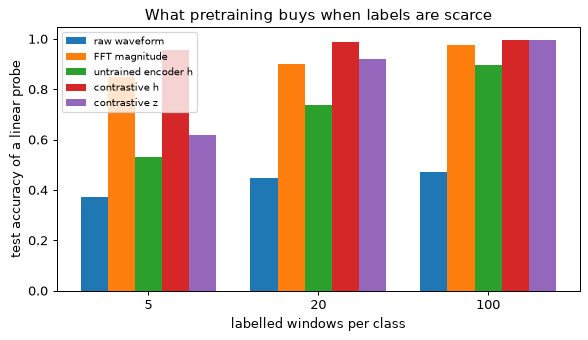
按列读这张表。每类 5 个标签时，预训练得到的 \mathbf{h} 得分 0.956，FFT 幅值为 0.850，未训练的编码器为 0.532，原始波形为 0.371：一个在预训练中从未见过标签的网络，比经典特征高出十一个点。另外两个随机种子给出 0.954 和 0.944，所以这个优势并不依赖于某一次幸运的初始化。每类 100 个标签时，优势几乎消失（0.996 对 0.974）：一旦标签充足，一个好的手工特征就够了，预训练带来的是标签效率。投影输出 \mathbf{z} 则是另一回事：在 5 个标签时它只有 0.620，远低于 \mathbf{h}，到 100 个标签时才追上来。投影头被训练成对数据增强所改变的一切都保持不变，它丢掉的信息多于类别所需；这就是 SimCLR 保留 \mathbf{h}、丢弃投影头的原因。这个协议的误差棒并不小（五次有标签窗口的抽取，三个预训练随机种子），所以行与行之间一两个点的差异不应被读作排名。
步骤 7：数据增强就是监督
最后一个实验去掉数据增强。先只去掉时移（保留增益和噪声），再把三者全部去掉。没有时移时，一个窗口的两个视图具有相同的相位，所以匹配它们最容易的方法是记住波形中依赖相位的细节，而这恰恰是对分类毫无用处的特征。损失仍然下降，因为任务仍然被解决了，但它是用错误的特征解决的。无时移模型在每类 100 个标签时的混淆矩阵显示了哪些类别为此付出代价。
model_noshift, loss_noshift = pretrain(seed=0, shift=False)
model_noaug, loss_noaug = pretrain(seed=0, shift=False, gain=False, noise=False)
ablation = {}
for name, m in [("no time shift", model_noshift), ("no augmentation", model_noaug)]:
hp, _ = embed(m, X_pool)
ht, _ = embed(m, X_test)
ablation[name] = probe(hp, ht, return_model=True)
print(f"{name:<22s}{fmt(ablation[name][0])}")
print(f"{'with all three':<22s}{fmt(acc_h)}")
print(f"final losses: full {np.mean(losses_full[-15:]):.3f}, "
f"no shift {np.mean(loss_noshift[-15:]):.3f}, none {np.mean(loss_noaug[-15:]):.3f}")
pred = ablation["no time shift"][1]
cm = confusion_matrix(y_test, pred)
print("confusion matrix of the no-shift model (100 labels per class; rows = true):")
print(cm)
print(f"misalignment predicted as imbalance: {cm[2, 1]} of {cm[2].sum()}")
print(f"bearing defect predicted as healthy: {cm[3, 0]} of {cm[3].sum()}")
no time shift 0.622 0.809 0.977
no augmentation 0.581 0.747 0.942
with all three 0.956 0.988 0.996
final losses: full 2.376, no shift 1.746, none 1.692
confusion matrix of the no-shift model (100 labels per class; rows = true):
[[503 0 0 3]
[ 0 531 0 0]
[ 0 18 454 1]
[ 13 0 0 477]]
misalignment predicted as imbalance: 18 of 473
bearing defect predicted as healthy: 13 of 490
两点观察。没有时移时，每类 5 个标签下的探测准确率从 0.956 降到 0.622，只比未训练编码器的 0.532 高约 0.09，远低于使用时移的模型；完全没有数据增强时为 0.581。在 100 个标签时，差距缩小到 2 个点以内（0.977 对 0.996），所以损害同样体现在标签效率上：特征可用，但没有按类别组织起来。最终的损失才是更有启发性的数字：没有时移时为 1.75，没有任何数据增强时为 1.69，两者都低于完整方案的 2.38。当两个视图共享相位时，匹配它们的任务更容易，所以损失在改善，表示却在变差。对比损失衡量的是编码器解决前置任务（pretext task）的程度，而不是特征对下游任务有多好，这就是为什么由探测而不是损失来做判断。无时移模型的混淆矩阵（一次探测，每类 100 个标签的一次抽取）把错误放在了物理规律所预言的地方：不对中窗口被当作不平衡（473 个中有 18 个），两者都有很强的低次谐波；轴承缺陷被当作健康（490 个中有 13 个），它们的冲击比谐波小。这些计数取决于抽取；要看的是规律，而不是具体数字。
你应该看到什么
- 每类 5 个标签时，原始波形上的线性分类器在四个类别上接近随机水平（0.37，随机水平为 0.25），在 100 个标签时也只达到 0.47：在相位随机时，样本的任何固定线性组合都无法识别类别。频谱幅值这一经典特征按构造去掉了相位，表现很好（从 0.85 升到 0.97）。
- 带时移增强的对比预训练无需标签就能学到相位不变的表示。每类 5 个标签时它达到 0.956，比 FFT 特征高出约十一个点，另外两个预训练随机种子给出 0.95 和 0.94；在 100 个标签时，两者相差不到 2.5 个点。
- 数据增强就是监督。没有时移时，5 个标签下的准确率降到 0.62，只比未训练的编码器（0.53）略高，尽管预训练损失更低（1.75 对 2.38）。对比损失更低并不意味着特征更好。
- 投影头吸收了数据增强所改变的东西：每类 5 个标签时探测 \mathbf{z} 得到 0.62，而 \mathbf{h} 为 0.956，这就是保留 \mathbf{h} 的原因。
- InfoNCE 损失最终约为 2.4，远高于零，也远低于 \log(2B - 1) = 6.24，即不携带任何信息的嵌入所对应的值。
动手试试
- 更宽的增益增强。 把增益范围从 0.8 到 1.25 换成 0.25 到 4，再次探测 \mathbf{h}。探测结果几乎不变（本实验一个使用更宽范围的副本在 5、20 和 100 个标签时给出 0.956、0.990 和 0.997，原来为 0.956、0.988 和 0.996），因为健康窗口和不平衡窗口在谐波比例和信噪比上也有差异，幅值并不是唯一的线索。设计一种在这些数据中确实会抹掉某个类别区分的数据增强，并用混淆矩阵确认。这就是第 11 节中的概念性失败，即旋转之下的 6 和 9，在这里变得具体。
- 温度与 batch 大小。 让 \tau 取 0.05、0.5 和 1.0，batch 大小取 64 和 512，保持轮次数不变。哪些设置会改变探测在 5 个标签时的准确率？最终损失能预测这一点吗？
- 编码器从未见过的类别。 只在测试集中加入第五个类别——机械松动（f_r 的许多次谐波，幅值逐次衰减），并对测试窗口的 \mathbf{h} 画出按类别着色的二维主成分分析（PCA）图。预训练得到的 \mathbf{h} 能否在不做任何重新训练的情况下，把新类别与旧类别分开？与 FFT 幅值的 PCA 图比较。
练习
十五道练习按它们所练习的各节顺序排列，并按工作量分级：★ 是概念题，约 5 分钟，至多需要读出一个比值或一个和；★★ 是推导或计算，需要 10 到 12 分钟；★★★ 是编程，约 25 分钟。第一类有八道，第二类六道，第三类一道，合计 127 分钟。概念题先在脑中或纸上做完，再打开解答：它们之所以短，是因为全部难点都在于定下一个答案。
没有一道练习重复例题、正文检查题或实验的数字或情形。各节在一组数字上讲授每种方法；这里同一种方法遇到另一组数字，使能迁移的是方法而不是答案。解答中引用的每个数字都经过计算，产生它的代码或者列出，或者有所说明。唯一的编程练习（练习 12）从实验 4 的物理信息神经网络出发，并且自成一体：它的代码在一个新的 Python 会话中按原样即可运行。
每个解答在你打开之前都是隐藏的。只有在写下自己的答案之后，哪怕很粗糙，再打开它：真正有用的检查，是你的答案与解答分道扬镳的那个地方。
一个自编码器把 64 像素的图像映射为 128 维的编码再映射回去，没有其他任何约束，它的训练重建误差降到了零。解释为什么这个编码作为表示毫无用处，并举出两种能迫使网络学习数据结构的改动。
查看解答
为什么零误差什么也说明不了。重建误差衡量的是输出是否等于输入，它不衡量编码是否选择了什么。这里编码的维数比输入多（d_z = 128 > d_x = 64），所以网络可以随意复制。一个显式的解：让编码器把 64 个像素放进编码的前 64 个坐标，其余 64 个放零，\mathbf{z} = (\mathbf{x}, \mathbf{0})，再让解码器把前 64 个读回来。任何可逆映射都同样可行：对 \mathbf{x} 做一个随机旋转再做其逆变换，也能完美重建，此时编码就是像素的一份打乱的副本。梯度下降会找到其中之一，因为这是把损失降到零最容易的办法，而目标函数中没有任何东西偏爱别的解。
于是，这个编码在第 2 节列出的三个方面都毫无用处。它没有压缩任何东西（用 128 个数表示 64 个数）。它没有把可能的输入和不可能的输入区分开，因为这个映射对 \mathbb{R}^{64} 中的每个输入，包括噪声，都有定义且是精确的。它作为异常检测器也失败了：模型从未见过的输入和其他输入重建得一样好，所以作为异常分数的重建误差对一切输入都是零。
两种把恒等映射从极小值点集合中排除的改动。
- 瓶颈，d_z < d_x。数字个数比输入少的编码无法复制输入。网络必须决定保留哪些变化方向，而对于平方误差，它保留承载方差最多的那些方向（对线性映射，最优解张成主导的主子空间，如第 2 节所示）。它学到的结构是“数据位于何处”。
- 去噪目标：把输入破坏为 \tilde{\mathbf{x}}，要求输出干净的 \mathbf{x}。恒等映射此时给出 \tilde{\mathbf{x}}，与目标相差恰好一份噪声。最好的映射是条件均值 \mathbb{E}[\mathbf{x}\mid\tilde{\mathbf{x}}]，它把被破坏的点拉回干净数据密集的地方，而这正是关于数据必须学到的东西。这时过完备的编码就变得无害了。（这与第 5 节变成扩散目标的是同一个回归。）
另外两种改动出于同样的原因而有效。对 \mathbf{z} 施加稀疏惩罚（L1 项），允许存在很多坐标，但只允许少数坐标处于激活状态，所以编码无法携带一份稠密的副本。变分自编码器的 KL 项（第 3 节）对编码所携带的关于 \mathbf{x} 的每一点信息都收取若干奈特，所以复制代价高昂，只有在重建中物有所值的信息才能留下来。
规律是：自编码器能学到结构，仅限于架构或目标阻止它学习恒等映射的程度。因此，训练误差低从来不是表示良好的证据；要在被破坏的、留出的或异常的输入上检验它。
(a) 从 \log p_\theta(\mathbf{x}) = \log \int p_\theta(\mathbf{x}\mid\mathbf{z})\,p(\mathbf{z})\,d\mathbf{z} 出发，插入 q_\phi(\mathbf{z}\mid\mathbf{x})/q_\phi(\mathbf{z}\mid\mathbf{x})，应用詹森不等式，得到证据下界 \mathbb{E}_q[\log p_\theta(\mathbf{x}\mid\mathbf{z})] - D_{\KL}(q_\phi(\mathbf{z}\mid\mathbf{x}) \,\|\, p(\mathbf{z}))。
(b) 不用詹森不等式，证明 \log p_\theta(\mathbf{x}) - \text{ELBO} = D_{\KL}(q_\phi(\mathbf{z}\mid\mathbf{x}) \,\|\, p_\theta(\mathbf{z}\mid\mathbf{x}))，并说明这个下界何时是紧的。
(c) 证明 D_{\KL}(\mathcal{N}(\mu, \sigma^2) \,\|\, \mathcal{N}(0, 1)) = \tfrac12(\mu^2 + \sigma^2 - \log\sigma^2 - 1)，并证明对角高斯分布的 KL 是各维之和。对 \boldsymbol{\mu} = (0.3, -1.5, 0.0) 和 \boldsymbol{\sigma} = (0.8, 1.0, 2.0) 计算它，并说明每一维在为什么付出代价。
查看解答
以下用 q 表示 q_\phi(\mathbf{z}\mid\mathbf{x})，并假设凡是 p_\theta(\mathbf{x}\mid\mathbf{z})p(\mathbf{z}) 为正的地方 q 也为正，使下面的除法有定义。
(a) 由詹森不等式得到下界。乘以再除以 q 不改变任何东西，却把积分变成了在 q 下的期望，而 q 是我们能够采样的分布：
对数是凹函数，所以对正随机变量 Y，詹森不等式给出 \log \mathbb{E}[Y] \ge \mathbb{E}[\log Y]。取 Y 为方括号内的比值，
按定义，最后一个期望就是 D_{\KL}(q \,\|\, p(\mathbf{z}))，于是得到所述的证据下界（ELBO）。我们把对数移进了期望里面，正是这一步让我们失去了等号：它把一个无法无偏估计的量，换成了一个可以用 \mathbf{z} 的样本来估计的量。
(b) 精确的差距。模型的贝叶斯公式 p_\theta(\mathbf{x}) = p_\theta(\mathbf{x}\mid\mathbf{z})\,p(\mathbf{z})\,/\,p_\theta(\mathbf{z}\mid\mathbf{x}) 对每个 \mathbf{z} 都成立。取对数，并通过乘以再除以 q，把右边写成两个比值之积：
左边不依赖于 \mathbf{z}，所以它在任何 q 下的期望就是它自己。对两边取 \mathbb{E}_q：
由 (a) 部分的代数运算，第一项就是证据下界。所以 \log p_\theta(\mathbf{x}) - \text{ELBO} = D_{\KL}(q \,\|\, p_\theta(\mathbf{z}\mid\mathbf{x})) \ge 0，这不用詹森不等式再次证明了下界，并且显示出詹森不等式丢掉了什么。KL 散度恰好在它的两个自变量相等时为零，所以下界是紧的，当且仅当 q_\phi(\mathbf{z}\mid\mathbf{x}) = p_\theta(\mathbf{z}\mid\mathbf{x})，即真实后验。由此得到两个推论。在 \theta 固定时对 \phi 最大化证据下界，等价于最小化到真实后验的 KL，因为 \log p_\theta(\mathbf{x}) 不依赖于 \phi。而差距是编码器族的一种性质：对角高斯 q 无论训练得多好，都无法匹配有两个峰或坐标相关的后验。
(c) 高斯 KL。对一维的 q = \mathcal{N}(\mu, \sigma^2) 和 p = \mathcal{N}(0, 1)，两个对数密度为
KL 为 \mathbb{E}_q[\log q - \log p]。两个 \tfrac12\log 2\pi 项相消。在 q 下，\mathbb{E}[(z-\mu)^2] = \sigma^2（方差的定义），\mathbb{E}[z^2] = \mu^2 + \sigma^2（方差加均值的平方）。因此
对于对角高斯，q(\mathbf{z}) = \prod_j q_j(z_j)，p(\mathbf{z}) = \prod_j p_j(z_j)，所以 \log q - \log p = \sum_j(\log q_j - \log p_j)。和的期望等于期望之和，而每一项只依赖于一个坐标，所以只有它的边缘分布起作用：D_{\KL}(q\,\|\,p) = \sum_j D_{\KL}(q_j \,\|\, p_j)。
数值。逐维计算，利用 \log\sigma^2 = 2\log\sigma：
- j = 1：\tfrac12(0.09 + 0.64 - \log 0.64 - 1) = \tfrac12(0.09 + 0.64 + 0.4463 - 1) = \tfrac12(0.1763) = 0.0881；
- j = 2：\tfrac12(2.25 + 1 - 0 - 1) = \tfrac12(2.25) = 1.1250；
- j = 3：\tfrac12(0 + 4 - \log 4 - 1) = \tfrac12(4 - 1.3863 - 1) = \tfrac12(1.6137) = 0.8069。
总和为 0.0881 + 1.1250 + 0.8069 = 2.020 奈特。作为核对，用 \mathbf{z} 的两百万个样本对 \mathbb{E}_q[\log q - \log p] 做蒙特卡洛估计，得到 2.0196，与闭式解的差在抽样误差之内。
每一维在为什么付出代价。把每一项拆成均值部分 \tfrac12\mu^2 和宽度部分 \tfrac12(\sigma^2 - \log\sigma^2 - 1)，后者在 \sigma = 1 处为零，在其两侧都为正：
| 维度 | 均值部分 | 宽度部分 | 它对 \mathbf{x} 说明了什么 |
|---|---|---|---|
| 1 | 0.0450 | 0.0431 | 很少：接近先验，略窄一些 |
| 2 | 1.1250 | 0 | 很多，体现在位置上：均值离 0 有 1.5 个先验标准差 |
| 3 | 0 | 0.8069 | 只有宽度：后验比先验更宽 |
第 2 维是典型的携带信息的坐标：它为把均值从先验移开而付出代价。第 3 维出人意料。比先验更宽的后验，其均值不携带关于 \mathbf{x} 的任何信息，却要付出 0.81 奈特，因为 KL 惩罚任何偏离 \mathcal{N}(0, 1) 的情形，而非常弥散的 q 也是一种偏离。实践中，编码器会把每个它不需要的坐标推向 \sigma \approx 1 和 \mu \approx 0，这就是后验坍塌在数字上的样子。
一个 d_z = 8 的 VAE 在测试集上报告了以下各维的 KL 值（单位为奈特）：(2.1, 1.7, 0.003, 0.002, 1.2, 0.001, 0.004, 0.002)。有多少个潜在维度携带关于 \mathbf{x} 的信息？解码器如何处理其余的维度？如果任务需要更多携带信息的维度，举出两种你会尝试的改动。
查看解答
三个维度携带信息：第 1、2、5 维。单维的 KL 是 q(z_j\mid\mathbf{x}) 偏离先验 \mathcal{N}(0, 1) 的代价，以奈特计，并在测试输入上取平均（练习 2 给出了单个坐标的代价）。0.001 到 0.004 奈特的代价意味着，对每个输入，q(z_j\mid\mathbf{x}) 本质上都是 \mathcal{N}(0, 1)：均值不随 \mathbf{x} 移动，宽度保持为 1。三个活跃维度共用掉 2.1 + 1.7 + 1.2 = 5.0 奈特，而另外五个只有 0.012 奈特，所以编码把 99.8% 的预算花在了三个坐标上。作为量级参考，5.0 奈特是 7.2 比特，这是平均输入的编码最多能告诉解码器的关于该输入的信息量（平均 KL 是编码所携带的关于 \mathbf{x} 的信息的上界）。
解码器如何处理其余维度。在那五个坐标上，无论输入是什么，z_j 都是从先验中新抽取的一个值：纯噪声，与 \mathbf{x} 无关。噪声只会损害重建，所以解码器学会忽略这些输入，来自它们的权重向零收缩。这就是部分后验坍塌：坐标存在，但没有被使用。可以直接检验：用一个不活跃坐标的不同取值去解码同一个活跃编码，输出应当不变。
这是否成问题取决于任务。如果数据确实沿三个因素变化，三个活跃维度就是一个好的答案，另外五个是空闲的容量。只有当重建或采样质量差，而且更多信息能够改善时，这才是问题。可以尝试两种改动，按代价从低到高：
- 减弱 KL 项的压力：KL 权重小于 1，或者用预热在前几个轮次里把它从 0 逐渐升到 1，使解码器在惩罚生效之前就开始使用编码。一种相关的手段是自由比特（free bits），它给每个坐标设一个以奈特计的下限，低于这个下限的 KL 不计入惩罚。
- 让重建更值钱，或者让解码器不那么自给自足。方差相对于数据较大的高斯解码器，会让误差变得便宜而信息变得昂贵；求和的平方误差就是 \sigma_x^2 = \tfrac12 时的这种似然（第 3 节），所以更小的方差（或者对 [0, 1] 中的像素使用伯努利似然）会把兑换比率调向有利于重建的一方。另一方面，较小的或自回归程度较低的解码器离开编码就无法对 \mathbf{x} 建模，所以它必须使用编码。
两者都不能保证一个未被使用的坐标会变得有用。衡量结果要看你最初需要什么，例如留出数据上的证据下界，或在编码上训练的探测器的精度，而不是看活跃维度的个数。
(a) 对固定的 G，GAN 的值函数为 V = \int\big[p_{\text{data}}(\mathbf{x})\log D(\mathbf{x}) + p_g(\mathbf{x})\log(1 - D(\mathbf{x}))\big]\,d\mathbf{x}。逐点最大化被积函数，求出 D^*(\mathbf{x})。
(b) 代入 D^*，证明 V(G, D^*) = -\log 4 + 2\,\mathrm{JSD}(p_{\text{data}} \,\|\, p_g)，其中 \mathrm{JSD}(p \,\|\, q) = \tfrac12 D_{\KL}(p \,\|\, m) + \tfrac12 D_{\KL}(q \,\|\, m)，m = (p + q)/2。
(c) 在三个点上用 p_{\text{data}} = (0.6, 0.3, 0.1) 和 p_g = (0.2, 0.3, 0.5) 核对这个结果。
查看解答
(a) 最优判别器。这个积分是彼此独立的被积函数之和，每个 \mathbf{x} 一个，而 D 是一个自由函数，所以对 D 的最大值可以通过对每个被积函数分别关于数 y = D(\mathbf{x}) \in (0, 1) 求最大来得到。记 a = p_{\text{data}}(\mathbf{x}) 和 b = p_g(\mathbf{x})，二者都为正，并记 f(y) = a\log y + b\log(1 - y)。于是
二阶导数 f''(y) = -a/y^2 - b/(1-y)^2 为负，所以 f 是凹的，驻点就是它的最大值点。因此
这是在真实点和生成点一比一混合的情况下，\mathbf{x} 为真实样本的后验概率：贝叶斯最优分类器。
(b) 最优处的值。代入，利用 1 - D^* = p_g/(p_{\text{data}} + p_g)，并记 p = p_{\text{data}}，q = p_g：
令 m = (p + q)/2，则 p + q = 2m，所以 \log\frac{p}{p+q} = \log\frac{p}{m} - \log 2，q 的情形同理。常数可以从期望中提出来（\mathbb{E}_p[1] = \mathbb{E}_q[1] = 1）：
按 JSD 的定义，两个 KL 项之和为 2\,\mathrm{JSD}(p\,\|\,q)，所以 V(G, D^*) = -\log 4 + 2\,\mathrm{JSD}(p_{\text{data}}\,\|\,p_g)。JSD 非负，且只有在两个分布相等时为零，所以生成器的最好值是 -\log 4 = -1.3863，在 p_g = p_{\text{data}} 时取到。在这个意义上，配有完美判别器的 GAN 是在最小化一种散度。而这个前提条件就是 GAN 训练困难的全部故事：判别器从来不是完美的，而当它接近完美时，它传给生成器的梯度会消失（第 4 节）。
(c) 核对。
最优判别器。D^* = \big(\tfrac{0.6}{0.8}, \tfrac{0.3}{0.6}, \tfrac{0.1}{0.6}\big) = (0.75, 0.5, 0.1667)。
值。数据项为 0.6\log 0.75 + 0.3\log 0.5 + 0.1\log 0.1667 = -0.1726 - 0.2079 - 0.1792 = -0.5597。生成器项，利用 1 - D^* = (0.25, 0.5, 0.8333)，为 0.2\log 0.25 + 0.3\log 0.5 + 0.5\log 0.8333 = -0.2773 - 0.2079 - 0.0912 = -0.5764。所以 V = -1.1361。
经由 JSD。m = (0.4, 0.3, 0.3)。D_{\KL}(p\,\|\,m) = 0.6\log\tfrac{0.6}{0.4} + 0.3\log 1 + 0.1\log\tfrac{0.1}{0.3} = 0.2433 + 0 - 0.1099 = 0.1334，D_{\KL}(q\,\|\,m) = 0.2\log\tfrac{0.2}{0.4} + 0 + 0.5\log\tfrac{0.5}{0.3} = -0.1386 + 0.2554 = 0.1168。所以 \mathrm{JSD} = \tfrac12(0.1334 + 0.1168) = 0.1251，而 -1.3863 + 2(0.1251) = -1.1361。两条途径在四位小数上一致。
这个值位于两个极端 -\log 4 = -1.3863（分布相同）和 0（支撑集不相交，此时 D^* 能完美区分真实样本和生成样本）之间，理应如此。一段简短的脚本复现了所有这些数字。
import numpy as np
p = np.array([0.6, 0.3, 0.1]) # p_data
q = np.array([0.2, 0.3, 0.5]) # p_g
d_star = p / (p + q)
value = (p * np.log(d_star)).sum() + (q * np.log(1 - d_star)).sum()
m = (p + q) / 2
jsd = 0.5 * (p * np.log(p / m)).sum() + 0.5 * (q * np.log(q / m)).sum()
print("D* =", d_star.round(4))
print(f"V = {value:.4f} -log 4 + 2 JSD = {-np.log(4) + 2 * jsd:.4f} JSD = {jsd:.4f}")
D* = [0.75 0.5 0.1667]
V = -1.1361 -log 4 + 2 JSD = -1.1361 JSD = 0.1251
一个在涡轮叶片横截面图像上训练的 GAN 生成的样本，工程师无法与真实图像区分开，而它的判别器精度在 50% 附近徘徊。描述一种能揭示模式坍塌的测量：计算什么，与什么比较，什么样的结果表明发生了坍塌。然后解释为什么判别器 50% 的精度不能作为反驳模式坍塌的证据。
查看解答
测量覆盖度，而不是真实感。模式坍塌是生成器未能到达 p_{\text{data}} 的某些部分。一个问“样本看起来真实吗？”的测量，从构造上就看不到它，因为每个样本都可以看起来很真实，而样本的种类仍然可以很少。应当反过来问：真实数据是否靠近样本。
- 用一个向量描述每个叶片截面：可以是用在别的数据上训练的网络得到的图像特征嵌入，或者，对工程用途更好的是，少数几个几何参数（弦长、厚度、弯度、冷却孔数量）。对一组留出的真实截面，以及数量相同的生成截面，都这样做。
- 对每个留出的真实截面，求它到最近的生成样本的距离（一种类似召回率的距离）。
- 把它与一个可信的参照比较：每个留出的真实截面到同样大小的另一组真实截面中最近邻的距离。这个参照说明在这个样本量下完美的生成器能接近到什么程度，因为完美的生成器从同一个分布中抽样。
- 同时计算类似精确率的距离，即每个生成样本到最近真实截面的距离，这就是真实感的度量。
什么表明发生了坍塌。真实到样本的距离远大于真实到真实的参照距离，而且超出的部分是集中的：一组真实截面（一个叶片族）附近根本没有生成样本。一个在偏斜分布下也站得住的汇总量，是到样本的距离超过（比如）参照距离第 99 百分位数的真实截面所占的比例。对于覆盖了数据的生成器，按百分位数的定义，这个比例约为 1%。真实感，即类似精确率的距离，始终很小，这就是为什么真实感指标或人工评判无法发现这个问题。
下面是一个构造出来的示例，并不是对任何真实 GAN 的测量：把八种截面看作一个圆环上的八个紧凑的簇，一个生成器只完美地采样其中三种，另一个生成器覆盖全部八种。
import numpy as np
from scipy.spatial import cKDTree
rng = np.random.default_rng(0)
angles = 2 * np.pi * np.arange(8) / 8
centres = 2.0 * np.stack([np.cos(angles), np.sin(angles)], axis=1) # 8 kinds of section
def draw(n, kinds):
k = rng.choice(kinds, size=n)
return centres[k] + 0.1 * rng.standard_normal((n, 2))
train_real = draw(2000, range(8)) # stands in for the real sections
held_out = draw(1000, range(8)) # held-out real sections
full = draw(1000, range(8)) # a generator that covers every kind
collapsed = draw(1000, [0, 3, 5]) # perfect samples, but only 3 kinds
def median_nn(queries, reference):
return np.median(cKDTree(reference).query(queries)[0])
print(f"real -> real (reference) {median_nn(held_out, train_real[:1000]):.3f}")
d_ref = cKDTree(train_real[:1000]).query(held_out)[0]
for name, gen in (("covering generator", full), ("collapsed generator", collapsed)):
d_gen = cKDTree(gen).query(held_out)[0]
uncovered = np.mean(d_gen > np.quantile(d_ref, 0.99))
print(f"{name}: sample->real {median_nn(gen, held_out):.3f}, "
f"real->sample {median_nn(held_out, gen):.3f}, "
f"uncovered real sections {uncovered:.3f}")
real -> real (reference) 0.016
covering generator: sample->real 0.016, real->sample 0.016, uncovered real sections 0.011
collapsed generator: sample->real 0.016, real->sample 1.141, uncovered real sections 0.621
坍塌的生成器和覆盖全部的生成器同样真实（都是 0.016），但 62% 的真实截面离每个样本的距离都超过了参照距离；这正是 5/8 = 62.5\%，即它从未访问的五个簇。真实到样本距离的中位数从 0.016 跳到 1.141，仅仅是因为一半以上的数据没有被覆盖：如果坍塌只遗漏了三分之一的数据，中位数就不会变，这就是为什么未覆盖比例是更好的汇总量。同样的样本到训练集的距离也能揭示相反的失败：近乎复制训练图像。
为什么 50% 的判别器精度什么也证明不了。判别器被训练来在样本所在之处区分样本和数据。生成器从未访问的 p_{\text{data}} 区域对生成器的损失没有任何贡献，因为生成器只因它生成的样本而得到奖励；判别器在那里也看不到可供区分的生成样本。接近 50% 意味着在生成器访问的地方它与数据无法区分，对它没有访问的地方则什么也没说。此外，两个网络进行的是一场博弈，而不是一个优化问题：一个周期性振荡、总在追逐生成器当前偏爱的模式的判别器，平均精度会在 50% 附近，而生成器则从一个模式跳到下一个模式（第 4 节）。这个精度是两个参与者之间平衡的表征，而不是覆盖度的表征。
证明逐步前向过程 q(\mathbf{x}_t\mid\mathbf{x}_{t-1}) = \mathcal{N}\big(\sqrt{1-\beta_t}\,\mathbf{x}_{t-1},\ \beta_t\mathbf{I}\big) 给出 q(\mathbf{x}_t\mid\mathbf{x}_0) = \mathcal{N}\big(\sqrt{\bar\alpha_t}\,\mathbf{x}_0,\ (1-\bar\alpha_t)\mathbf{I}\big)，其中 \bar\alpha_t = \prod_{s\le t}(1-\beta_s)。写出 \mathbf{x}_t = \sqrt{\alpha_t}\,\mathbf{x}_{t-1} + \sqrt{1-\alpha_t}\,\boldsymbol{\epsilon}_t，假设结论对 t - 1 成立，并利用这样一个事实：独立的零均值高斯变量之和是高斯变量，其方差为各方差之和。
查看解答
准备。记 \alpha_t = 1 - \beta_t，从 \mathcal{N}(\sqrt{\alpha_t}\,\mathbf{x}_{t-1}, \beta_t\mathbf{I}) 中采样，等同于题中所给的单行更新，其中 \boldsymbol{\epsilon}_t \sim \mathcal{N}(\mathbf{0}, \mathbf{I}) 是新抽取的，与第 t 步之前的一切都独立：把标准正态变量乘以 \sqrt{\beta_t} = \sqrt{1-\alpha_t} 得到方差 \beta_t，加上均值则使其平移。我们对 t 用归纳法证明这个结论，归纳命题为：“\mathbf{x}_t = \sqrt{\bar\alpha_t}\,\mathbf{x}_0 + \sqrt{1-\bar\alpha_t}\,\bar{\boldsymbol{\epsilon}}_t，其中某个 \bar{\boldsymbol{\epsilon}}_t \sim \mathcal{N}(\mathbf{0}, \mathbf{I}) 与之后的噪声 \boldsymbol{\epsilon}_{t+1}, \boldsymbol{\epsilon}_{t+2}, \dots 独立”。归纳步需要的正是与之后噪声的独立性。
基础情形，t = 1。\mathbf{x}_1 = \sqrt{\alpha_1}\,\mathbf{x}_0 + \sqrt{1-\alpha_1}\,\boldsymbol{\epsilon}_1，且 \bar\alpha_1 = \alpha_1，所以取 \bar{\boldsymbol{\epsilon}}_1 = \boldsymbol{\epsilon}_1 时命题成立。
归纳步。假设命题对 t - 1 成立，把它代入第 t 步的更新：
由于 \alpha_t\bar\alpha_{t-1} = \bar\alpha_t，均值为 \sqrt{\bar\alpha_t}\,\mathbf{x}_0。噪声是两个独立的零均值高斯向量之和（由归纳假设，\bar{\boldsymbol{\epsilon}}_{t-1} 与 \boldsymbol{\epsilon}_t 独立），协方差分别为 \alpha_t(1-\bar\alpha_{t-1})\mathbf{I} 和 (1-\alpha_t)\mathbf{I}。它们的和是均值为零的高斯向量，协方差为
协方差为 (1-\bar\alpha_t)\mathbf{I} 的零均值高斯向量可以写成 \sqrt{1-\bar\alpha_t}\,\bar{\boldsymbol{\epsilon}}_t，其中 \bar{\boldsymbol{\epsilon}}_t \sim \mathcal{N}(\mathbf{0}, \mathbf{I})，而 \bar{\boldsymbol{\epsilon}}_t 只由 \bar{\boldsymbol{\epsilon}}_{t-1} 和 \boldsymbol{\epsilon}_t 构成，所以它与 \boldsymbol{\epsilon}_{t+1}, \dots 独立。归纳就此完成，并给出
归纳步为什么成立。关键的恒等式是 \alpha_t(1-\bar\alpha_{t-1}) + (1-\alpha_t) = 1 - \alpha_t\bar\alpha_{t-1}：之前的噪声已经累积的方差，乘以信号所乘的同一个因子 \alpha_t 而缩小，再加上这一步的新噪声，恰好等于信号缩小的权重所缺少的部分。两个尺度的平方在每个 t 上都相加为 1，这就是这个过程能让单位方差的数据保持单位方差的原因。
数值核对。取三步，\beta = (0.1, 0.2, 0.3)（有意夸大，使数字清晰可见），于是 \alpha = (0.9, 0.8, 0.7)，\bar\alpha = (0.9,\ 0.72,\ 0.504)。对固定的 \mathbf{x}_0，\mathbf{x}_t 的方差满足 \mathrm{Var}_t = \alpha_t\mathrm{Var}_{t-1} + \beta_t。递推给出 0.1，然后 0.8 \times 0.1 + 0.2 = 0.28，然后 0.7 \times 0.28 + 0.3 = 0.496，正如公式所说，它们等于 1 - \bar\alpha_t = 0.1, 0.28, 0.496。
import numpy as np
beta = np.array([0.1, 0.2, 0.3])
alpha = 1 - beta
alpha_bar = np.cumprod(alpha)
var = 0.0
for t in range(3):
var = alpha[t] * var + beta[t] # variance recursion for fixed x_0
print(f"t={t + 1}: recursion {var:.4f} 1 - alpha_bar {1 - alpha_bar[t]:.4f}")
rng = np.random.default_rng(0)
x = np.ones(1_000_000) # one million chains started at x_0 = 1
for t in range(3):
x = np.sqrt(alpha[t]) * x + np.sqrt(beta[t]) * rng.standard_normal(x.size)
print(f"sampled mean {x.mean():.4f} (sqrt(alpha_bar) = {np.sqrt(alpha_bar[2]):.4f}), "
f"sampled variance {x.var():.4f}")
t=1: recursion 0.1000 1 - alpha_bar 0.1000
t=2: recursion 0.2800 1 - alpha_bar 0.2800
t=3: recursion 0.4960 1 - alpha_bar 0.4960
sampled mean 0.7097 (sqrt(alpha_bar) = 0.7099), sampled variance 0.4953
把这条链运行一百万次，得到的均值 0.7097 对比 \sqrt{0.504} = 0.7099，方差 0.4953 对比 0.496，与闭式解的预测一致（最后几位是抽样噪声）。
Ho 等人的线性调度在 T = 1000 步上让 \beta_t 从 10^{-4} 均匀增加到 0.02。
(a) 利用 \log(1-\beta) \approx -\beta 估计 \bar\alpha_T，并与精确乘积 4.04\times10^{-5} 比较。
(b) 有人保持同样的 \beta 范围，但设 T = 100。估计 \bar\alpha_T 和 \sqrt{\bar\alpha_T}。
(c) 解释从 \mathbf{x}_T \sim \mathcal{N}(\mathbf{0}, \mathbf{I}) 出发对这个模型采样时会出什么问题，并给出两种修正方法。
查看解答
工具。\bar\alpha_T = \prod_t(1-\beta_t)，所以 \log\bar\alpha_T = \sum_t\log(1-\beta_t)。级数 \log(1-\beta) = -\beta - \tfrac12\beta^2 - \dots 表明，对小的 \beta，第一项占主导，\bar\alpha_T \approx \exp(-\sum_t\beta_t)。
(a) 各 \beta_t 构成等差数列，所以它们的和等于项数乘以两端点的平均值：1000 \times (10^{-4} + 0.02)/2 = 1000 \times 0.01005 = 10.05。于是 \bar\alpha_T \approx e^{-10.05} = 4.32\times10^{-5}，与精确值 4.04\times10^{-5} 相差在 7% 以内。差异的大部分来自级数的下一项。这里 \sum_t\beta_t^2/2 = 0.067，所以 \bar\alpha_T \approx e^{-10.05 - 0.067} = 4.04\times10^{-5}，在三位有效数字上吻合。最后一步留下的信号幅度为 \sqrt{\bar\alpha_T} = 0.0064：不是零，但约为信号的 0.6%，小到足以从纯噪声出发对模型采样。
(b) 当 T = 100 时，同样的范围给出 \sum_t\beta_t = 100 \times 0.01005 = 1.005，所以 \bar\alpha_T \approx e^{-1.005} = 0.366。精确乘积为 0.364（修正项现在只有 \sum\beta^2/2 = 0.0067）。所以 \sqrt{\bar\alpha_T} \approx 0.60：在噪声最大的一步，仍有 60% 的信号幅度留存，\mathbf{x}_T 远非 \mathcal{N}(\mathbf{0}, \mathbf{I})。这个调度是为十倍的步数设计的；每一步加入固定的少量噪声，步数只有十分之一时，总噪声就远远不够。
(c) 会出什么问题。采样从 \mathbf{x}_T \sim \mathcal{N}(\mathbf{0}, \mathbf{I}) 开始，这是一个不含信号的抽样。但训练时网络在 t = T 看到的输入是 \mathbf{x}_T = 0.60\,\mathbf{x}_0 + 0.80\,\boldsymbol{\epsilon}，其中仍含有清晰的信号。在第一个反向步，网络遇到了一个它从未在其上训练过的输入分布，即训练与测试不匹配，它对噪声的预测会出现系统性的错误：它预期在输入中找到 \mathbf{x}_0，于是从噪声中读出结构，而这个误差会传播到之后的所有步。对于最后一步不是纯噪声的图像模型，这个效应已有文献记录：这类模型无法生成很亮或很暗的图像，因为训练信号的平均亮度会透过噪声泄漏出来（Lin 等人 2024，见参考文献）。
两种修正方法。
- 把调度按新的 T 重新缩放，使 \bar\alpha_T 再次接近 0：把范围乘以 1000/T = 10，得到从 10^{-3} 到 0.2 的 \beta_t。和又是 10.05，精确的 \bar\alpha_T = 2.0\times10^{-5}。
- 使用一个设计为以噪声结束的调度，例如余弦调度，它在 T = 100 时给出 \bar\alpha_T = 2.4\times10^{-7}（与原文一样，把 \beta_T 裁剪到 0.999），或者把任何调度重新缩放到终端信噪比为零。
（步数更少也会使每一步更大，所以粗糙的线性调度在反向过程中会损失精度；重新缩放修正的是端点，而不是离散化。）
import numpy as np
def report(name, beta):
alpha_bar = np.prod(1 - beta)
print(f"{name:34s} sum(beta) {beta.sum():6.3f} e^-sum {np.exp(-beta.sum()):.3e} "
f"alpha_bar_T {alpha_bar:.3e} sqrt {np.sqrt(alpha_bar):.4f}")
report("T=1000, 1e-4 to 0.02", np.linspace(1e-4, 0.02, 1000))
report("T=100, 1e-4 to 0.02", np.linspace(1e-4, 0.02, 100))
report("T=100, rescaled 1e-3 to 0.2", np.linspace(1e-3, 0.2, 100))
T, s = 100, 0.008 # cosine schedule, s = 0.008
t = np.arange(T + 1) / T
f = np.cos((t + s) / (1 + s) * np.pi / 2) ** 2
report("T=100, cosine (clip 0.999)", np.clip(1 - f[1:] / f[:-1], 0, 0.999))
T=1000, 1e-4 to 0.02 sum(beta) 10.050 e^-sum 4.319e-05 alpha_bar_T 4.036e-05 sqrt 0.0064
T=100, 1e-4 to 0.02 sum(beta) 1.005 e^-sum 3.660e-01 alpha_bar_T 3.636e-01 sqrt 0.6030
T=100, rescaled 1e-3 to 0.2 sum(beta) 10.050 e^-sum 4.319e-05 alpha_bar_T 2.039e-05 sqrt 0.0045
T=100, cosine (clip 0.999) sum(beta) 7.879 e^-sum 3.787e-04 alpha_bar_T 2.429e-07 sqrt 0.0005
读这张表时要注意两点。对余弦调度那一行，e^{-\sum\beta} 近似很差（它的最后一个 \beta 是 0.999，一阶级数不适用），所以应当使用精确乘积。而 \beta 高达 0.2 的重新缩放调度，单步很大；它的端点是对的，但路径不一定最好。
一个有三个基本事件输入的门构成一个星形图：中心 c 与叶子 a、b 和 d 相连。
(a) 写出 \hat{\mathbf{A}} = \tilde{\mathbf{D}}^{-1/2}(\mathbf{A} + \mathbf{I})\tilde{\mathbf{D}}^{-1/2}。
(b) 取标量特征 \mathbf{x} = (1, 0, 0, 0)（中心排在第一位），计算 \hat{\mathbf{A}}\mathbf{x} 和 \hat{\mathbf{A}}^2\mathbf{x}。
(c) 利用特征向量 \mathbf{u} \propto \tilde{\mathbf{D}}^{1/2}\mathbf{1}，求 k 增大时 \hat{\mathbf{A}}^k\mathbf{x} 的极限，以及中心的值与叶子的值之比。
(d) \hat{\mathbf{A}} 的特征值为 1、0.5、0.5 和 -0.25，属于 0.5 的特征向量在中心处为零，在各叶子上之和为零。对这个 \mathbf{x}，\hat{\mathbf{A}}^k\mathbf{x} 以多快的速度趋于其极限？为什么不是 0.5^k？
查看解答
(a) 矩阵。加上自环得到 \tilde{\mathbf{A}} = \mathbf{A} + \mathbf{I}，其中中心与每个节点相连，每个叶子与中心及自身相连。行和就是含自环的度：\tilde{d}_c = 1 + 3 = 4，\tilde{d}_{\text{leaf}} = 1 + 1 = 2。\hat{\mathbf{A}} 的第 (i, j) 个元素为 \tilde{A}_{ij}/\sqrt{\tilde{d}_i\tilde{d}_j}，所以：
- 中心到自身：1/\sqrt{4\cdot4} = 1/4；
- 中心到一个叶子，以及反方向：1/\sqrt{4\cdot2} = 1/\sqrt8 = 0.3536；
- 一个叶子到自身：1/\sqrt{2\cdot2} = 1/2；
- 两个叶子之间：0（它们不相邻）。
(b) 两层传播。\hat{\mathbf{A}}\mathbf{x} 就是 \hat{\mathbf{A}} 的第一列：(0.25,\ 0.3536,\ 0.3536,\ 0.3536)。一步之后，特征已经到达每个叶子，每个叶子得到 0.3536，比中心自己的 0.25 还多（中心的值被除以 4，而每个叶子的值被除以 \sqrt8）。再应用一次 \hat{\mathbf{A}}，逐行计算：
- 中心：0.25\times0.25 + 3\times(0.3536\times0.3536) = 0.0625 + 3\times0.125 = 0.4375；
- 每个叶子：0.3536\times0.25 + 0.5\times0.3536 = 0.0884 + 0.1768 = 0.2652。
所以 \hat{\mathbf{A}}^2\mathbf{x} = (0.4375,\ 0.2652,\ 0.2652,\ 0.2652)。中心的值上下摆动，而叶子的值逐渐稳定。
(c) 极限。向量 \tilde{\mathbf{D}}^{1/2}\mathbf{1} 是 \hat{\mathbf{A}} 属于特征值 1 的特征向量：
因为 \tilde{\mathbf{A}}\mathbf{1} 是行和构成的向量 \tilde{\mathbf{d}}，而 \tilde{\mathbf{D}}^{-1/2}\tilde{\mathbf{d}} = \tilde{\mathbf{D}}^{1/2}\mathbf{1}。这里它是 (2, \sqrt2, \sqrt2, \sqrt2)；归一化为单位长度（它的范数平方为 4 + 6 = 10），得 \mathbf{u} = (2, \sqrt2, \sqrt2, \sqrt2)/\sqrt{10} = (0.6325, 0.4472, 0.4472, 0.4472)。
\hat{\mathbf{A}} 是对称的，所以它的特征向量相互正交，\mathbf{x} 可以按它们分解。其余每个特征值的模都小于 1（它们是 0.5, 0.5, -0.25），所以多次应用之后，只有沿 \mathbf{u} 的分量留存：\hat{\mathbf{A}}^k\mathbf{x} \to \mathbf{u}\,(\mathbf{u}^\top\mathbf{x})。由 \mathbf{u}^\top\mathbf{x} = 0.6325，
它的中心与叶子之比为 \sqrt{\tilde{d}_c/\tilde{d}_{\text{leaf}}} = \sqrt{4/2} = \sqrt2 = 1.414。在极限中，各节点只按其度的平方根而不同：无论输入特征是什么，它都已被冲刷掉，剩下的只是每个节点连接的紧密程度。这是最纯粹形式的过平滑（第 8 节）。
(d) 有多快。k 步之后的误差是 \hat{\mathbf{A}}^k\mathbf{x} 减去极限，也就是 \mathbf{x} 中与 \mathbf{u} 正交的部分被其他特征值乘了 k 次。把它分解：
属于 0.5 的特征向量在中心处为零，在各叶子上之和为零，所以一个在三个叶子上取相同值的向量在它们上面没有分量（它与每个这样的特征向量的内积，等于该值乘以特征向量各叶子分量之和，即 0）。余下部分在三个叶子上都取值 -0.2828，所以它完全落在最后一个特征向量上，即属于 \lambda = -0.25 的那个：确实，(0.6, -0.2828, -0.2828, -0.2828) 与 (-2.121, 1, 1, 1) 成比例，并且可以直接验证 \hat{\mathbf{A}}\mathbf{v} = -0.25\,\mathbf{v}（中心行：0.25(-2.121) + 3(0.3536) = 0.530 = -0.25(-2.121)；叶子行：0.3536(-2.121) + 0.5 = -0.25）。所以误差每一步乘以 -0.25：它每步缩小为四分之一并改变符号，这就是 (b) 中看到的摆动，中心的值依次为 0.25 \to 0.4375 \to 0.3906 \to 0.4023 \to \dots，围绕 0.4 摆动。对 k = 1, \dots, 4，相对误差 \|\hat{\mathbf{A}}^k\mathbf{x} - \text{极限}\| / \|\text{极限}\| 为 0.306,\ 0.0765,\ 0.0191,\ 0.0048：从 k = 4 起低于 1%。
第二大的特征值模（这里是 0.5）给出了任何特征向量收敛速率的界，但实际速率取决于特征触及了哪些特征向量。一个叶子的特征 \mathbf{x} = (0, 1, 0, 0) 在 \lambda = 0.5 的特征空间上有分量（这个分量是 (0, \tfrac23, -\tfrac13, -\tfrac13)，范数为 0.8165，而极限的范数为 0.4472），因而以 0.5^k 收敛：相对误差为 1.83 \times 0.5^k 加上 -0.25 的部分，在 k = 1 时为 0.935，k = 4 时为 0.114，k = 8 时为 0.0071，只有从 k = 8 起才低于 1%。对称的输入收敛得快；不对称的输入则受最差的特征值限制。
import numpy as np
A = np.zeros((4, 4))
A[0, 1:] = A[1:, 0] = 1 # node 0 is the centre, 1-3 the leaves
A_tilde = A + np.eye(4)
d_tilde = A_tilde.sum(axis=1) # (4, 2, 2, 2)
A_hat = A_tilde / np.sqrt(np.outer(d_tilde, d_tilde))
print("A_hat =\n", A_hat.round(4))
print("eigenvalues", np.linalg.eigvalsh(A_hat).round(4))
u = np.sqrt(d_tilde) / np.linalg.norm(np.sqrt(d_tilde))
for label, x in (("centre feature", np.array([1.0, 0, 0, 0])),
("leaf feature ", np.array([0, 1.0, 0, 0]))):
limit = u * (u @ x)
errors, h = [], x.copy()
for k in range(1, 9):
h = A_hat @ h
errors.append(np.linalg.norm(h - limit) / np.linalg.norm(limit))
print(label, "limit", limit.round(4))
print(" relative error, k = 1..8:", " ".join(f"{e:.4f}" for e in errors))
if label.startswith("centre"):
print(" A_hat x =", (A_hat @ x).round(4))
print(" A_hat^2 x =", (A_hat @ A_hat @ x).round(4))
A_hat =
[[0.25 0.3536 0.3536 0.3536]
[0.3536 0.5 0. 0. ]
[0.3536 0. 0.5 0. ]
[0.3536 0. 0. 0.5 ]]
eigenvalues [-0.25 0.5 0.5 1. ]
centre feature limit [0.4 0.2828 0.2828 0.2828]
relative error, k = 1..8: 0.3062 0.0765 0.0191 0.0048 0.0012 0.0003 0.0001 0.0000
A_hat x = [0.25 0.3536 0.3536 0.3536]
A_hat^2 x = [0.4375 0.2652 0.2652 0.2652]
leaf feature limit [0.2828 0.2 0.2 0.2 ]
relative error, k = 1..8: 0.9354 0.4593 0.2286 0.1142 0.0571 0.0285 0.0143 0.0071
一位同事训练了一个两层 GCN，用来预测故障树中哪些节点是基本事件，特征中包含节点的度，并报告了 99% 的测试精度。这个结果应当与什么基线比较？这个基线得分多少？什么样的任务才能真正检验 GNN 是否学到了关于故障树结构的东西？
查看解答
基线是一条一行的规则。在故障树中，基本事件恰好就是叶子，即下方没有输入的节点。叶子只与它的父门相连，所以每个只有一个邻居的非顶层节点都是基本事件。每个门至少有两个输入外加一个父节点（对顶事件而言，则至少有两个输入），所以门总是至少有两个邻居。因此，“节点是基本事件，当且仅当它恰好有一个邻居”这条规则对每棵故障树的每个节点都正确：它的得分是 100%。特征中含有度的模型等于被直接递上了答案：分类器只需要对一个输入设阈值。
所以 99% 的测试精度不能证明任何东西。它低于这个免费的基线。对任何分类结果，合理的比较都从使用同样输入的最廉价规则开始，如模块 01 所述，而应当报告的数字是超出它的幅度。
一个简短的实验说明了这一点。它生成 300 棵随机故障树（门有两个或三个输入，每个输入以 0.45 的概率是基本事件，否则是门，直到深度上限），对叶子规则打分，并在 200 棵树上训练一个只以度为特征的两层 GCN，在另外 100 棵树上测试：划分按树进行，绝不按节点进行，因为同一棵树的节点共享结构（数据泄漏，模块 01）。
import numpy as np, torch, torch.nn as nn
rng = np.random.default_rng(0)
torch.manual_seed(0)
def random_fault_tree(max_depth=4):
"""Return (edges, is_basic_event). Node 0 is the top gate; gates have 2-3 inputs."""
edges, is_basic, frontier = [], [False], [(0, 0)]
while frontier:
node, depth = frontier.pop()
for _ in range(rng.integers(2, 4)): # a gate has 2 or 3 inputs
child = len(is_basic)
leaf = depth + 1 >= max_depth or rng.random() < 0.45
is_basic.append(bool(leaf))
edges.append((node, child))
if not leaf:
frontier.append((child, depth + 1))
return edges, np.array(is_basic)
def graph_tensors(edges, n):
A = np.zeros((n, n), dtype=np.float32)
for a, b in edges:
A[a, b] = A[b, a] = 1.0
At = A + np.eye(n, dtype=np.float32)
dinv = 1.0 / np.sqrt(At.sum(1))
return torch.tensor(dinv[:, None] * At * dinv[None, :]), A.sum(1)
trees = [random_fault_tree() for _ in range(300)]
data = []
for edges, basic in trees:
n = len(basic)
A_hat, deg = graph_tensors(edges, n)
data.append((A_hat, torch.tensor(deg[:, None] / 4.0, dtype=torch.float32),
torch.tensor(basic, dtype=torch.float32)))
sizes = [len(b) for _, b in trees]
print("nodes per tree: min", min(sizes), "max", max(sizes))
# the baseline: a node with exactly one neighbour is a basic event
rule_correct = sum(int(((d[1].squeeze() == 0.25) == d[2].bool()).sum()) for d in data)
print(f"leaf rule accuracy: {rule_correct / sum(sizes):.4f}")
class GCN(nn.Module):
def __init__(self, hidden=16):
super().__init__()
self.w1, self.w2 = nn.Linear(1, hidden), nn.Linear(hidden, 1)
def forward(self, A_hat, x):
h = torch.relu(A_hat @ self.w1(x))
return (A_hat @ self.w2(h)).squeeze(-1)
train, test = data[:200], data[200:] # split by tree, not by node
model = GCN()
opt = torch.optim.Adam(model.parameters(), lr=1e-2)
for epoch in range(300):
for A_hat, x, y in train:
loss = nn.functional.binary_cross_entropy_with_logits(model(A_hat, x), y)
opt.zero_grad(); loss.backward(); opt.step()
def accuracy(split):
ok = tot = 0
with torch.no_grad():
for A_hat, x, y in split:
ok += int(((model(A_hat, x) > 0).float() == y).sum()); tot += len(y)
return ok / tot
share = np.mean(np.concatenate([b for _, b in trees]))
print(f"GCN test accuracy: {accuracy(test):.4f}")
print(f"share of basic events (majority baseline): {max(share, 1 - share):.4f}")
nodes per tree: min 3 max 58
leaf rule accuracy: 1.0000
GCN test accuracy: 0.8306
share of basic events (majority baseline): 0.6237
（最后几位在不同机器上可能不同。）叶子规则的得分恰好是 1.0000。GCN 接收度作为输入，并在每一层把它与邻居的度做平均，在这里得到 0.83，远高于多数类（0.62），也远低于规则：归一化的聚合把承载答案的那一个数字弄模糊了，网络必须学会撤销这种模糊。换一组特征或训练更久会改变这个数字，但它无法超过规则，也从来不可能超过。无论同事的 99% 反映的是什么，正确的解读都是：一条规则就解决了这个任务，而网络只是在近似它。
一个检验结构的任务。选一个需要几跳之外的信息、而且不是节点自身邻域大小的函数的标签。实验 3 的例子是单点故障：一个基本事件单独失效就能导致顶事件发生，这在它通往顶层的路径上每个门都是或门时出现。一个节点是否满足条件，取决于一直到根节点的门类型，所以 L 层的网络只能看到其中 L 跳。按树划分来评估，与简单基线（多数类；“上方的门是或门”）以及精确算法比较，并报告精度随深度的变化。这样的结果才能说明消息传递是否学到了结构。
图 P 是完全二部图 K_{3,3}：两排各三个节点，每个节点与另一排的全部三个节点相连。图 Q 是三棱柱：两个三角形，对应的顶点相连。每个节点的特征向量都相同。解释为什么任何消息传递 GNN（GCN、GAT、GIN）无论有多少层，都会在两个图中给每个节点相同的嵌入，以及为什么求和或均值读出无法区分 P 和 Q。提出一种能区分它们的输入特征。
查看解答
两个图在局部看起来一样。数一数：两者都有 6 个节点和 9 条边，而且两者中每个节点都恰好有三个邻居（在 K_{3,3} 中是另一排的三个节点；在棱柱中是两个三角形邻居和对应的顶点）。它们都是 3-正则图。
为什么每个节点最终得到相同的嵌入。取消息传递网络的任意一层。一个节点的新嵌入是它自己当前嵌入和它的邻居嵌入构成的多重集的函数。最初，全部 12 个节点（每个图 6 个）携带相同的向量 \mathbf{h}^{(0)}。用归纳法，假设所有节点都携带相同的 \mathbf{h}^{(l)}。那么每个节点都收到同样的三条相同的消息，并应用同样的更新，所以全部携带相同的 \mathbf{h}^{(l+1)}。具体地：
- GCN：每个节点含自环的度都是 4，每个权重都是 1/\sqrt{4\cdot4} = 1/4，新嵌入为 \phi\big(\tfrac14\mathbf{W}\mathbf{h} + 3\cdot\tfrac14\mathbf{W}\mathbf{h}\big)，处处相同；
- GAT：注意力权重是在三个键相同的邻居上的 softmax，因此是均匀的（各 1/3）；相同向量的加权和就是该向量本身；
- GIN：三个相同向量之和是该向量的三倍，同样处处相同。
这对每一层都成立，所以任何深度都让所有节点嵌入保持相同，在两个图中都是如此，并且在 P 和 Q 中取相同的值。
为什么读出也无济于事。对六个相同向量的求和读出是 6\mathbf{h}^{(L)}，均值读出是 \mathbf{h}^{(L)}，对 P 和对 Q 都一样。最后一层之后的任何部分，看到的都只有这些相同的嵌入。
背后的极限。这就是 1-Weisfeiler-Lehman 极限：颜色细化（反复按节点自己的颜色及其邻居颜色构成的多重集为每个节点重新着色）永远不会把正则图的节点分开，而消息传递网络的区分能力至多与这个检验相当。然而这两个图是不同的对象：棱柱包含两个三角形，而 K_{3,3} 是二部图，没有奇数长度的环，因而没有三角形。在安全分析的情境下，这就是两种冗余结构之间的差别，而消息传递网络会给它们打出相同的分数。
打破平局的特征（每一种都添加了消息传递自己算不出来的信息）：
- 经过每个节点的三角形个数：Q 的每个节点为 1，P 的每个节点为 0（等价地，\mathbf{A}^3 的对角元除以 2；\operatorname{tr}(\mathbf{A}^3)/6 对 Q 是 2 个三角形，对 P 是 0 个）；
- 经过该节点的最短环的长度：3 对 4；
- 随机节点标识符，它打破对称性，代价是嵌入依赖于随机抽取的结果；
- 谱位置编码。P 的邻接矩阵特征值为 3, 0, 0, 0, 0, -3，Q 的为 3, 1, 0, 0, -2, -2，所以连谱都能区分它们。
（特征值和三角形个数用 NumPy 计算；每个图的 \mathbf{A} 的所有行和都等于 3。）
对 u'' + 2\zeta\omega_0 u' + \omega_0^2 u = 0，u(0) = 1，u'(0) = 0，一个学生提出试探解 u(t) = e^{-\zeta\omega_0 t}\cos\omega_0 t：有衰减，但频率是无阻尼频率。
(a) 用符号运算求残差 r(t)。
(b) 对 \zeta = 0.1 和 \omega_0 = 2\pi，计算 r(0) 以及初始条件项 (u(0) - 1)^2 和 u'(0)^2。
(c) 哪两处改动能给出精确解？PINN 的损失会如何报告这个试探函数的误差？
查看解答
(a) 残差。记 a = \zeta\omega_0，于是方程为 u'' + 2a\,u' + \omega_0^2 u = 0，试探解为 u = e^{-at}\cos\omega_0 t。用乘积法则求两次导数：
代入 r = u'' + 2a\,u' + \omega_0^2 u，提出因子 e^{-at}：
正弦项相消（u'' 中的 +2a\omega_0 与 2a\,u' 中的 -2a\omega_0）。余弦的系数为 a^2 - \omega_0^2 - 2a^2 + \omega_0^2 = -a^2。所以
残差是 \zeta^2 量级的：一个衰减正确、频率略有偏差的试探解，就方程所能判断的而言，几乎就是一个解。这是 (c) 部分的关键。
(b) 数值。\zeta^2\omega_0^2 = 0.01 \times (2\pi)^2 = 0.3948，所以
- r(0) = -0.3948（余弦和指数都等于 1）；
- u(0) = 1，所以 (u(0) - 1)^2 = 0；
- u'(0) = -a = -\zeta\omega_0 = -0.6283（由 u' 的表达式取 t = 0：-a\cdot1 - \omega_0\cdot0），所以 u'(0)^2 = 0.3948，等于 a^2。
(c) 精确解，以及损失说明了什么。误差在于无阻尼频率。形如 e^{-at}\cos\omega t 的解的残差为 e^{-at}(\omega_0^2 - a^2 - \omega^2)\cos\omega t（在试探解自身的导数中以 \omega 代替 \omega_0，做同样的代数运算），它为零当且仅当 \omega^2 = \omega_0^2 - a^2 = \omega_0^2(1 - \zeta^2)。因此两处改动是：
- 在余弦中把 \omega_0 换成阻尼频率 \omega_d = \omega_0\sqrt{1 - \zeta^2} = 6.252 rad/s。结果精确满足方程，但仍有 u'(0) = -a \neq 0。
- 加上正弦项 \dfrac{\zeta\omega_0}{\omega_d}\,e^{-at}\sin\omega_d t。它也是同一个线性方程的解（对正弦做上面的代数运算，在同样的 \omega 条件下给出零残差），所以加上它残差仍为零，而它在 0 处的导数为 +a，抵消了 -a：u'(0) = 0。
结果 u = e^{-at}\big[\cos\omega_d t + (\zeta\omega_0/\omega_d)\sin\omega_d t\big] 就是第 9 节的精确解。符号运算核对证实了这一点：它的残差化简为 0，u(0) = 1，u'(0) = 0。
PINN 的损失对这个试探解报告了什么。三项：
- 初始位置：(u(0) - 1)^2 = 0。
- 初始速度：u'(0)^2 = 0.395。
- 残差：r^2 在 [0, 2] s 上的均值。\zeta^4\omega_0^4 e^{-2at}\cos^2\omega_0 t 在该区间上的积分除以区间长度 2，为 0.0288。在包含两个端点的 200 个均匀分布的配点上（如实验 4），它为 0.0291。
所以在所有权重都为 1 时，损失把误差主要报告为初始速度误差（0.39），残差只贡献 0.03。方程几乎察觉不到错误的频率，因为残差在 \zeta 上是二阶的；初始条件则对它非常敏感。两条教训：当解几乎正确时，小的残差只是一个很弱的证明；各损失项处在不同的尺度上，这就是权重要紧的原因。对比第 9 节中那个无阻尼的近似解，它的均方残差大了约一千倍（31.2 对 0.029）。
import sympy as sp
t, z, w0 = sp.symbols("t zeta omega_0", positive=True)
a = z * w0
def residual(u):
return sp.simplify(sp.diff(u, t, 2) + 2 * a * sp.diff(u, t) + w0**2 * u)
trial = sp.exp(-a * t) * sp.cos(w0 * t)
print("trial residual:", residual(trial))
wd = w0 * sp.sqrt(1 - z**2)
exact = sp.exp(-a * t) * (sp.cos(wd * t) + a / wd * sp.sin(wd * t))
print("exact residual:", residual(exact))
print("exact u(0), u'(0):", sp.simplify(exact.subs(t, 0)), sp.simplify(sp.diff(exact, t).subs(t, 0)))
vals = {z: 0.1, w0: 2 * sp.pi}
print("r(0) =", round(float(residual(trial).subs(t, 0).subs(vals)), 4))
print("u'(0) of trial =", round(float(sp.diff(trial, t).subs(t, 0).subs(vals)), 4))
trial residual: -omega_0**2*zeta**2*exp(-omega_0*t*zeta)*cos(omega_0*t)
exact residual: 0
exact u(0), u'(0): 1 0
r(0) = -0.3948
u'(0) of trial = -0.6283
把实验 4 的代码改用于热方程 u_t = u_{xx}，x \in [0, 1]，t \in [0, 0.2]，u(x, 0) = \sin\pi x，u(0, t) = u(1, t) = 0。
使用 tanh MLP（2 \to 32 \to 32 \to 32 \to 1），输入为 (x,\ t/0.2)；1,000 个随机配点，每步重新抽取；100 个初始条件点，每条边界上 100 个点；Adam，学习率 10^{-3}，8,000 步；所有损失权重为 1；并设 torch.set_num_threads(1)。在 101 \times 51 的网格上报告相对于精确解 e^{-\pi^2 t}\sin\pi x 的相对 L_2 误差。
然后去掉边界项，从同一个种子再训练一次，报告误差以及 u(0, 0.2)、u(0.5, 0.2) 和 u(1, 0.2) 的值。解释网络收敛到了什么。
查看解答
计划。损失有三项，每一项都是在各自的点上的平方均值：1,000 个内部点上的残差 u_t - u_{xx}，100 个点上的初始条件 u(x, 0) - \sin\pi x，以及 200 个点（每端 100 个）上的边界值 u(0, t) 和 u(1, t)。网络的第二个输入是 t/0.2，所以它看到的两个输入都在 [0, 1] 中；链式法则给出 u_t = \tfrac{1}{0.2}\,\partial u/\partial s，其中 s = t/0.2。为了避免这笔簿记，我通过一个辅助函数把 (x, t) 送入网络，由它来做除法，并直接对 t 求导，这样自动微分会自己乘上这个因子。每一步都用新的随机点，意味着损失在步与步之间带噪声，这就是为什么下面的日志报告的是固定网格上的误差，而不只是损失。
为了让两次运行只在边界项上不同，两者抽取完全相同的随机数（每一步都抽取所有的点；只有边界项的权重从 1 变为 0），并且从同一个种子开始。
import time
import numpy as np
import torch
import torch.nn as nn
torch.set_num_threads(1) # a network this small gains nothing from threads
T_END, STEPS = 0.2, 8000
def make_net():
return nn.Sequential(nn.Linear(2, 32), nn.Tanh(), nn.Linear(32, 32), nn.Tanh(),
nn.Linear(32, 32), nn.Tanh(), nn.Linear(32, 1))
def u_net(net, x, t):
"""The network sees (x, t / T_END), both in [0, 1]."""
return net(torch.cat([x, t / T_END], dim=1))
def grad(out, inp):
return torch.autograd.grad(out, inp, grad_outputs=torch.ones_like(out),
create_graph=True)[0]
def residual(net, x, t):
x = x.clone().requires_grad_(True)
t = t.clone().requires_grad_(True)
u = u_net(net, x, t)
u_t = grad(u, t)
u_xx = grad(grad(u, x), x)
return u_t - u_xx
def sample_losses(net, gen):
"""Draw one fresh set of points and return the three loss terms."""
x_c = torch.rand(1000, 1, generator=gen)
t_c = T_END * torch.rand(1000, 1, generator=gen)
x_i = torch.rand(100, 1, generator=gen)
t_b = T_END * torch.rand(200, 1, generator=gen) # 100 per end
x_b = torch.cat([torch.zeros(100, 1), torch.ones(100, 1)])
loss_r = residual(net, x_c, t_c).pow(2).mean()
u0 = u_net(net, x_i, torch.zeros_like(x_i))
loss_ic = (u0 - torch.sin(np.pi * x_i)).pow(2).mean()
loss_bc = u_net(net, x_b, t_b).pow(2).mean()
return loss_r, loss_ic, loss_bc
def exact(x, t):
return np.exp(-np.pi ** 2 * t) * np.sin(np.pi * x)
def evaluate(net):
xs, ts = np.linspace(0, 1, 101), np.linspace(0, T_END, 51)
X, T = np.meshgrid(xs, ts, indexing="ij")
with torch.no_grad():
u = u_net(net, torch.tensor(X.reshape(-1, 1), dtype=torch.float32),
torch.tensor(T.reshape(-1, 1), dtype=torch.float32))
u = u.numpy().reshape(X.shape)
ue = exact(X, T)
return np.linalg.norm(u - ue) / np.linalg.norm(ue), u
def train(lam_bc):
torch.manual_seed(0)
net = make_net()
gen = torch.Generator().manual_seed(0)
opt = torch.optim.Adam(net.parameters(), lr=1e-3)
start = time.time()
for step in range(1, STEPS + 1):
loss_r, loss_ic, loss_bc = sample_losses(net, gen)
loss = loss_r + loss_ic + lam_bc * loss_bc # every weight 1, or 0 for bc
opt.zero_grad()
loss.backward()
opt.step()
if step in (2000, 4000, 8000):
err, _ = evaluate(net)
print(f" step {step}: loss {loss.item():.2e}, rel L2 error {err:.4f}")
print(f" {time.time() - start:.0f} s")
return net
for name, lam_bc in (("with boundary term", 1.0), ("without boundary term", 0.0)):
print(name)
net = train(lam_bc)
err, u = evaluate(net)
gen = torch.Generator().manual_seed(123)
r, i, b = sample_losses(net, gen)
print(f" final rel L2 error {err:.4f}")
print(f" fresh-point losses: residual {r.item():.1e}, initial {i.item():.1e}, "
f"boundary {b.item():.1e}")
print(f" u(0, 0.2) = {u[0, -1]:+.3f} u(0.5, 0.2) = {u[50, -1]:+.3f} "
f"u(1, 0.2) = {u[100, -1]:+.3f}")
print(f"exact u(0.5, 0.2) = {exact(0.5, 0.2):.3f}")
with boundary term
step 2000: loss 1.55e-03, rel L2 error 0.0359
step 4000: loss 6.06e-04, rel L2 error 0.0215
step 8000: loss 3.15e-04, rel L2 error 0.0102
69 s
final rel L2 error 0.0102
fresh-point losses: residual 3.5e-04, initial 7.5e-06, boundary 4.0e-05
u(0, 0.2) = -0.011 u(0.5, 0.2) = +0.139 u(1, 0.2) = -0.008
without boundary term
step 2000: loss 4.42e-04, rel L2 error 0.7804
step 4000: loss 1.62e-04, rel L2 error 0.8204
step 8000: loss 1.99e-04, rel L2 error 0.7515
72 s
final rel L2 error 0.7515
fresh-point losses: residual 3.6e-05, initial 1.5e-04, boundary 1.9e-01
u(0, 0.2) = -0.663 u(0.5, 0.2) = -0.213 u(1, 0.2) = -0.677
exact u(0.5, 0.2) = 0.139
（在一个 CPU 线程上运行，每次训练约需 70 s。最后几位可能因 PyTorch 构建版本和机器而不同；下面的现象则不会。）
解读结果。
有边界项时，误差稳步下降，在 2,000、4,000 和 8,000 步时依次为 0.036 \to 0.022 \to 0.010：网络复现了正弦的衰减，u(0.5, 0.2) = 0.139，在三位小数上与精确值相同，两端保持在零附近（-0.011 和 -0.008）。误差约为 1%，这个结果不错，但也仅此而已：有限元求解器能在几毫秒内达到这个精度，并远远超过它，这就是第 9 节所说的诚实比较。到 8,000 步时误差仍在改善，而重新抽取的点带来的噪声损失，限制了这个学习率能把它推进到什么程度。
没有边界项时，相对误差为 0.75，从第 2,000 步起一直卡在 0.75 到 0.82 之间，而且答案在性质上就是错的。u(0.5, 0.2) 为 -0.21，而热量只可能从 +1 衰减到 +0.139；两端位于约 -0.66 和 -0.68，而不是零。在新的点上，它的残差（3.6\times10^{-5}）比好的那次运行（3.5\times10^{-4}）小十倍，它的初始条件损失（1.5\times10^{-4}）也很小（好的那次是 7.5\times10^{-6}），所以按剩下的两项来看，这个网络满足方程的程度至少和正确的那个一样好。只有边界项暴露了它：它现在不被优化器观察，但仍然可以计算，0.19 对 4.0\times10^{-5}。
（还有一个观察：无边界运行在第 8,000 步的损失比第 4,000 步高，这是日志中显示的带噪声的随机损失的一个尖峰，提醒我们不要把单个打印出来的损失当作收敛的标志。）
网络收敛到了什么。同一个方程的另一个解。在有界区间上，只有初始条件的热方程有无穷多个解，热量经由两端流入或流出的每一种方式对应一个。经典的唯一性定理需要边界值：具有相同初始数据和相同边界值的两个解之差，满足一个迫使它趋于零的能量衰减律，但没有边界值，就没有任何东西约束这个差。这里网络找到的解，是两端在 0.2 s 内都被冷却到约 -0.7、内部随之变化的解，这是 u_t = u_{xx} 在 u(x, 0) = \sin\pi x 和错误的边界数据下一个完全合法的解。它恰好满足了它被要求满足的东西。
一般的教训。小的残差证明方程在配点上成立，但它不能证明问题被完整地提出：缺少边界条件或初始条件，或者给错了，都会得到一个把损失最小化得很完美、却回答了另一个问题的网络。能发现这一点的检查是一个独立的检查，即与已知解、求解器或测量值比较，就像这里与 e^{-\pi^2 t}\sin\pi x 比较。也可以对比实验 4 中的阻尼振子，那里缺少的是初始条件，网络返回的则是 u \equiv 0。
为每种需求选择一个模型族，并指出它必须超过的第一个基线。
(a) 一个带翅片散热器稳态温度场的代理模型，覆盖 10 到 30 mm 的翅片高度和 1 到 5 m/s 的入口风速，在 2,000 次 CFD 计算上训练。
(b) 同一个代理模型被问到 12 m/s 的入口风速。
(c) 来自一条生产线的 50,000 幅未标注的焊缝热图像，以及 20 个已标注的缺陷，分属四种类型。
(d) 一个 30 节点的系统架构模型，其中某些部件可能是单点故障。
查看解答
回答每种情形，都要问：数据是什么，输出是什么，以及什么简单方法已经能完成这项工作。
(a) 覆盖一族设计的代理模型：神经算子，或基于网格的图网络，但先检查基线。输出是一个场（散热器上的温度），输入是一族设计的参数，这正是第 10 节的情境。如果因为几何形状变化而每次计算都有自己的网格，那么网格上的图网络（第 8 节）是自然的读取方式；如果场位于共同的规则网格上，那么傅里叶神经算子或 DeepONet 是自然的选择。必须超过的基线是：
- 在同样 2,000 次计算上拟合的经典代理模型：高斯过程，或本征正交分解（POD）加上对系数的回归。只有两个标量输入（翅片高度和风速）而有 2,000 次计算，输入空间被密集地采样，这些基线非常强；神经算子只有在以更低的成本达到同样效果，或者输入更丰富（自由形状的几何）时，才有存在的价值；
- 求解器本身：代理模型必须足够精确，并且在同等精度下更快，还要把训练所花的 2,000 次计算算进去，这是一笔固定成本，只有经过大量查询才能收回。
(b) 12 m/s 在这一族之外。代理模型是在 1 到 5 m/s 上训练的；12 m/s 是范围上限的 2.4 倍，而且那里的流动可能处于不同的流态（比如层流与湍流之间的转捩）。网络是一个插值器：在训练范围之外，它的输出平滑而自信，却没有理由是对的，它的误差也是未知的。正确的做法是运行求解器，或者扩展训练计算以覆盖 12 m/s 并在留出的计算上检验，并且在每个使用代理模型的地方都注明它的适用范围（1 到 5 m/s，10 到 30 mm）。“代理模型的适用范围就是它见过的数据”（第 10 节）。
(c) 自监督预训练，然后用探测器。有 50,000 幅未标注图像而只有 20 个标签，所以标签无法训练一个网络，但图像可以。用对比目标或掩码目标（第 11 节）在这 50,000 幅图像上预训练一个编码器，然后在 20 个已标注样本上拟合一个线性探测器。基线是同样的探测器、同样的 20 个标签，用在不需要在这些图像上预训练的特征上：人工设计的强度和纹理统计量，或者在通用图像上预训练好的现成网络（模块 03）。只有 20 个样本，并按焊缝划分（如果一条焊缝给出多幅图像，就不要按图像划分），置信区间会很宽，所以要重复抽取这 20 个样本，并报告结果的离散程度。选择能保持温度分布形态的数据增强，因为温度分布形态正是缺陷的证据（练习 14）。如果完全没有标签，那么在合格焊缝上训练、以重建误差打分的自编码器，就是第 2 节的异常检测器。
(d) 精确算法。系统架构模型是一个有 30 个节点的图。单点故障是单独失效就使系统失效的部件，即大小为一的最小割集，找出全部单点故障是一次图遍历，耗时几微秒，而且是精确的。图网络在这里没有用武之地：它会不完美地近似一个可以精确计算的量，而精确计算所需的时间比加载网络还短。具有方向感知能力的 GNN 只有在该性质无法被精确计算时（它依赖于从数据中学到的东西，例如从现场报告推断出的失效可能性），或者图的数量太多、规模太大以至于精确分析太慢时，才物有所值。第一个基线就是这个算法。
四种情形背后的规律是：在选择模型族之前，先写下不需要学习的最好方法，然后让学习得到的模型在与它的比较中证明自己的价值。
对每种情形，说明这种数据增强对下游任务是否安全，以及为什么。
(a) 在复合材料铺层的俯视图像上预训练时使用随机 90 度旋转，下游任务是对纤维方向（0、+45、-45 或 90 度）分类。
(b) 在金相显微照片上为晶粒尺寸估计做预训练时，使用随机缩放裁剪（裁剪面积的 30% 到 100%，再缩放到完整图像大小）。
(c) 在发动机振动窗口上预训练时使用随机循环时间平移，每个窗口都从上止点开始，而各种故障是按冲击发生时的曲轴转角来区分的。
(d) 对同样的发动机窗口，在幅度约为 1 的信号上加入标准差为 0.1 的高斯噪声。
查看解答
在对比学习中，数据增强定义了编码器必须忽略什么（第 11 节）：同一个输入的两个增强视图被拉到一起，所以增强改变的任何性质，都是表示被训练去丢弃的性质。一种增强是安全的，当且仅当它不改变下游任务所需要的任何东西。因此检验总是“这种增强改变证据了吗？”，并且要结合任务来回答。
(a) 不安全。标签是纤维方向。四分之一圈的旋转把 0 度映射为 90 度，把 +45 度映射为 -45 度：它改变了类别。编码器会被训练成给不同的类别相同的表示，这就是第 11 节中 6 与 9 的失败。半圈旋转（180 度）是安全的，因为纤维方向是一条轴线而不是一个箭头，旋转 180 度不改变 0、+45、-45 和 90。翻转也需要同样的检查：水平翻转会交换 +45 和 -45。
(b) 不安全。晶粒尺寸是从图像中晶粒的大小读出来的。裁剪 30% 的面积再缩放到完整大小，会把晶粒放大至多 1/\sqrt{0.3} = 1.8 倍，所以同一幅显微照片的两个视图显示出不同的表观晶粒尺寸，而编码器被训练成同等对待不同的晶粒尺寸。应当裁剪而不缩放（从更大的显微照片中切出一个固定大小的窗口），使晶粒的尺度保持不变。
(c) 在这里不安全，尽管它在实验 5 中是必不可少的增强。在实验 5 中，窗口从任意时刻开始，所以一个模式出现在窗口中的什么位置不携带信息，循环平移去掉的只是一个无关的干扰因素；没有它，编码器可能记住绝对位置。而这些发动机窗口是与循环对齐的：每个窗口都从上止点开始，冲击发生时的曲轴转角正是区分各种故障的证据。循环平移把冲击移到另一个角度，从而破坏了任务所依赖的唯一线索。同一种增强，在一种情境中是干扰的去除者，在另一种情境中却是证据的破坏者。一种增强是否安全，取决于任务需要的证据，而不取决于增强本身。
(d) 适度时安全。传感器噪声不是故障的证据。在幅度约为 1 的信号上加入标准差为 0.1 的噪声（信噪比约为 10，按幅度计为 20 dB），与信号大小相当的冲击仍然清晰可见，所以各视图仍然可以辨认为同一个窗口，编码器学到的是对一种干扰的鲁棒性，而部署的传感器本来就会产生这种干扰。它并非无条件安全：远大于所关心的最小冲击的噪声，会把要检测的故障本身淹没，所以要按你仍必须发现的最小事件来调节噪声水平，并检查探测器的逐类精度，而不只是平均精度。
四种情形共同的检查：取一个已标注的样本，施加这种增强，然后问一位细心的人在给结果标注时，是否仍会给出原来的标签。
一个有 8 个专家的 top-1 混合专家层在没有负载均衡损失的情况下训练。2,000 步之后，71% 的 token 被送往专家 3，有两个专家一个 token 也没有收到。解释产生这种情况的反馈回路；如果路由器的平均概率等于 token 比例 f = (0.05, 0.08, 0.71, 0.06, 0.05, 0.05, 0, 0)，计算 Switch 式的均衡项 E\sum_e f_e P_e；并说明这一项的梯度起什么作用。
查看解答
反馈回路（路由坍塌）。收到更多 token 的专家得到更多梯度，因而在更多数据上训练，所以进步得更快。更好的专家对送给它的 token 产生更低的损失，而被训练成把每个 token 送往损失最低之处的路由器，就学会给它更高的分数，于是送给它更多的 token。起步稍稍落后的专家收到更少的 token，进步更慢，被选中的次数也就更少。语言建模损失中没有任何东西抵消这一点：从损失的角度看，一个好专家和八个一样好，这一层退化为一个只有八分之一大小的稠密层，七个闲置专家的参数被浪费。这个回路是对一个微小初始不平衡的正反馈，它开始得越早，就越难逆转。
这些数字下的均衡项。取 P = f，该项为 E\sum_e f_e^2：
（各比例之和为 1.00，理应如此。）乘以 E = 8 得 8 \times 0.5216 = 4.17。最小值为 1.0，在均匀路由 f_e = P_e = 1/E 时取到，此时该项为 E\cdot E\cdot(1/E)^2 = 1（第 12 节的柯西-施瓦茨论证）。4.17 这个值意味着负载的集中程度是可能的最小值的四倍多；如果所有 token 都在一个专家上，它会达到 8。训练损失加上该项的 \lambda_{\text{bal}} 倍，Switch 使用的是 \lambda_{\text{bal}} = 0.01。
它的梯度起什么作用。比例 f_e 来自硬性的 top-1 选择，是一个计数，没有梯度。路由器概率 P_e，即 softmax 在该 batch 的 token 上的均值，则有梯度。所以 \partial\mathcal{L}_{\text{bal}}/\partial P_e = \lambda_{\text{bal}}\,E\,f_e：每个专家的概率被按它已经收到的 token 比例压低。对专家 3 这是 8 \times 0.71 = 5.68（乘以 \lambda_{\text{bal}}）；对专家 1 是 8 \times 0.05 = 0.4。
要看路由器 logits \ell_j 的变化，应用 softmax 的雅可比矩阵 \partial p_e/\partial\ell_j = p_e(\delta_{ej} - p_j)。在路由器给每个 token 相同概率 p = P 的简化下，
括号把专家 j 的负载与按负载加权的平均 \sum_e f_e p_e = 0.5216 作比较。对专家 3，8 \times 0.71 \times (0.71 - 0.5216) = +1.07；梯度下降减去它，所以专家 3 的 logit 下降。对每个负载低于平均的专家，梯度为负，例如专家 1、5 和 6 为 8 \times 0.05 \times (0.05 - 0.5216) = -0.19，所以它们的 logits 上升。（对两个饿死的专家，在这种理想化下 p_j = f_j = 0，所以在这个精确点上梯度为零；在真实的 softmax 中，它们的概率小而为正，也会通过归一化被抬高：压低专家 3 的 logit，会把它的概率质量转移给所有其他专家。）
因此，梯度的作用就像负载上的一根弹簧：它把 token 从过载的专家推向利用不足的专家，并在负载均匀时消失。它是一种软修正，这就是为什么 \lambda_{\text{bal}} 很小：太大的话，路由器会被迫以把 token 送给不那么合适的专家为代价来实现均衡。DeepSeek-V3 用一种无辅助损失的方案避免了这种权衡，它转而调整路由分数中每个专家的偏置（第 12 节）。
自测题
共 12 道题，每题只有一个正确答案，总计约十五到二十分钟。先作答，再打开解析；凡是答错的题，请重读解析中指明的那一节。
论文导读
读论文要读两遍，第一遍应当简短。
第一遍，约占四分之一的时间。 读标题、摘要、引言和结论，看每一张图和表及其说明，并浏览各节标题。然后不回看原文，写下作者主张了什么、和什么做了比较，以及什么能说服你。如果主张已经清楚，而这篇论文又不是你工作的核心，可以就此停下。
第二遍，其余的时间。 带着笔读下面指明的各节。做它们指向的推导：找到定义方法的那个公式，核对一行代数，并找出论文的符号与本模块所用符号的对应关系。在实验部分，找出基线，并问：它强不强，比较是否公平（相同的数据、相同的算力、同样用心地调参），方法在哪里失效；作者讨论局限性的那一段往往是信息量最大的一页。除非某个问题把你引向那里，否则跳过证明和附录。论文不是按顺序读的，下面的时间估计也假定你不会逐行读完。
下面每篇论文都给出了阅读理由、要读和要跳过的部分，以及答案可以在正文中找到的问题。不要凭记忆引用论文中的数字：找到它们本身就是练习的一部分。
Ho, J., Jain, A., Abbeel, P. “Denoising diffusion probabilistic models.” Advances in Neural Information Processing Systems (NeurIPS), 2020.
为什么读它。 正是这篇论文让扩散模型变得实用：它把变分界与去噪分数匹配联系起来，并表明一个简化的噪声预测损失能给出最好的样本。第 5 节、第 6 节和实验 2 紧跟这篇论文，所以你读它的时候，代数已经推过一遍了。
读哪些部分。 读背景一节（前向过程、变分界，以及 q(\mathbf{x}_t \mid \mathbf{x}_0) 的闭式解）；读把扩散模型与去噪自编码器联系起来的那一节，尤其是反向过程的参数化和简化的训练目标；读算法 1 和算法 2；读实验中比较不同参数化和目标的消融表。略读样本质量的结果。跳过渐进编码、插值和附录，但如果你想看完整的代数，可以读附录中变分界的推导。
阅读时要回答的问题。
- 找出 q(\mathbf{x}_t \mid \mathbf{x}_0) 的公式。论文中的哪个符号对应本模块的 \bar\alpha_t？
- 在他们最好的模型中，网络预测的是什么？如果改为预测均值 \tilde{\boldsymbol\mu}，分别用真实的变分界和简化目标训练，消融表显示了什么？
- 他们用的 T 和 \beta 调度是什么？据此计算 \bar\alpha_T，并与第 5 节引用的值比较。
- 把算法 1 和算法 2 逐行对应到实验 2 的训练循环和采样器。二者在哪里不同？
- 按作者的说法，简化目标为什么能提高样本质量？把他们的论证与第 5 节算出的权重（t = 1 时为 0.50，t = 100 时约为 0.01）联系起来。
读完之后。 你应当能用两句话说明：为什么预测噪声等价于预测反向步骤的均值，以及为什么去掉变分界中的权重是用似然换取样本质量。如果说不出来，就对照权重表重做问题 5。
Kipf, T. N., Welling, M. “Semi-supervised classification with graph convolutional networks.” International Conference on Learning Representations (ICLR), 2017.
为什么读它。 它简短而清晰。它通过两步近似从谱图卷积推导出 GCN 层，并展示了它在极少标签下的效果；它的深度实验预示了第 8 节的过平滑。
读哪些部分。 读关于图上快速近似卷积的一节（一阶近似和重归一化技巧）；读用于半监督节点分类的两层模型及其前向模型公式；读结果中对传播模型的比较；读关于模型深度的附录。初读时，如果你对图拉普拉斯矩阵还不熟悉，可以跳过谱方法的细节，也跳过相关工作和数据集统计。
阅读时要回答的问题。
- 什么是“重归一化技巧”？它解决了哪个数值问题？
- 写出他们的两层前向模型，并在实验 3 的代码中找出每个因子。
- 在他们的比较中，哪个传播模型胜出？比不带重归一化的一阶模型好多少？
- 在附录的实验中，随着深度增加，训练准确率和测试准确率在有残差连接和无残差连接时分别怎样变化？与实验 3 中 8、12 和 16 层的结果比较。
读完之后。 为你自己设计的一个五节点图重写传播规则，并像第 7 节那样手算一层。如果算出的结果再现了论文公式中的结构，你就读懂了这篇论文。
Raissi, M., Perdikaris, P., Karniadakis, G. E. “Physics-informed neural networks: a deep learning framework for solving forward and inverse problems involving nonlinear partial differential equations.” Journal of Computational Physics, 378, 2019.
为什么读它。 正是这篇论文为这种方法命名并确立了它的范式：用自动微分计算残差、配点，以及带可训练系数的反问题。在实验 4 之后读它，你就能用自己复现过的失败模式来评判它的论断。
读哪些部分。 读引言；问题设定；偏微分方程的连续时间数据驱动求解，及其 Burgers 方程的例子；以及连续时间数据驱动发现问题的设定，及其 Navier–Stokes 例子。跳过离散时间的 Runge–Kutta 模型和 Korteweg–de Vries 例子。
阅读时要回答的问题。
- Burgers 例子用了多少个初始和边界训练点、多少个配点？作者报告的误差是多少？
- 写出他们对 Burgers 方程的残差 f，并把它对应到实验 4 的残差函数。
- 在发现问题中，学习的是哪些系数？用了多少数据、多大的噪声？系数恢复得有多准？
- 关于精度或代价的哪些论断，你会在依赖它们之前先用经典求解器核对？怎样核对？借助第 9 节以及 McGreivy 和 Hakim（2024）来判断。
读完之后。 写下在你自己的问题上信任 PINN 之前你会运行的基线，以及 PINN 必须超过的那个数字。
小结
- KL 散度非负，仅当两个分布相等时为零，且不对称；对高斯分布它有闭式解，例子 \mathcal{N}(0,1) 对 \mathcal{N}(1, 0.5) 在一个方向上为 1.153 奈特，在另一个方向上为 0.597 奈特。
- 线性自编码器恢复的是 PCA 子空间，所以只有当非线性自编码器胜过 PCA 基线时，它才值得付出代价；自编码器异常检测器的阈值取自留出的正常数据。
- VAE 最大化 ELBO，而 ELBO 等于 \log p_\theta(\mathbf{x}) 减去 q_\phi(\mathbf{z}\mid\mathbf{x}) 到真实后验的 KL 散度；重参数化技巧 \mathbf{z} = \boldsymbol\mu + \boldsymbol\sigma\odot\boldsymbol\epsilon 让梯度能到达编码器，而每一维的 KL 接近零是后验坍塌的信号。
- 判别器最优时，GAN 最小化 p_g 与数据之间的 Jensen-Shannon 散度；非饱和的生成器损失解决了梯度消失，但解决不了模式坍塌；截至 2026 年，在大多数图像生成任务中，扩散模型已经取代了 GAN。
- 扩散模型用一个固定的高斯过程给数据加噪，其边缘分布为 \mathbf{x}_t = \sqrt{\bar\alpha_t}\,\mathbf{x}_0 + \sqrt{1-\bar\alpha_t}\,\boldsymbol\epsilon，并通过回归噪声来训练；简化损失对变分界重新加权，使其偏向更难、噪声更大的步骤。
- 扩散模型的采样需要多次网络计算；DDIM、蒸馏和一致性模型能减少次数，尺度为 w 的无分类器引导以每步两倍的计算量用多样性换取忠实度，而噪声调度必须在 \bar\alpha_T 接近零时结束。
- GCN 层计算 \mathbf{H}^{(l+1)} = \sigma(\hat{\mathbf{A}}\mathbf{H}^{(l)}\mathbf{W}^{(l)})，其中 \hat{\mathbf{A}} = \tilde{\mathbf{D}}^{-1/2}(\mathbf{A}+\mathbf{I})\tilde{\mathbf{D}}^{-1/2}；反复作用会把所有节点特征推向同一个方向（过平滑），所以除非加入残差连接或归一化，有用的深度很小。
- 消息传递网络无法区分 Weisfeiler–Lehman 检验区分不了的图，而来自远处节点的信息要挤过狭窄的边（过度挤压）；故障树和安全论证这样的工程模型都是图，而第一个基线永远是一条简单的结构规则。
- 物理信息神经网络最小化由自动微分计算的偏微分方程残差，再加上边界项和初始项；当条件项被压过时，它可能收敛到平凡解，补救办法是无量纲化、给各项加权，或把条件作为硬约束构造进模型。
- DeepONet 和 傅里叶神经算子这样的神经算子从求解器运行结果中学习函数之间的映射；它们是代理模型，只在训练所用的那一族输入上有效，每个模型在用于新设计之前都需要用求解器核对。
- 基于 InfoNCE 的对比学习是 N 个候选上的分类损失，随机猜测时的取值为 \log N，所以 \log N - \mathcal{L} 最多只能确认 \log N 奈特的互信息；数据增强决定表示保留什么，线性探测衡量它换来了什么。
- 混合专家层存储 E 个专家，但每个 token 只运行 k 个，所以参数随 E 增长，计算量随 k 增长；路由坍塌用负载均衡损失来对抗，一个模型的总参数和激活参数要分开计算。
本模块的所有内容，都是在模型、损失或数据中加入结构的方法：瓶颈、噪声过程、图、方程、数据增强、路由器。下一个模块，模块 06，取出其中一种结构——注意力——并把它完整地构建出来。Transformer 用序列中所有位置之间学到的、依赖于内容的权重，取代了模块 04 的循环和本模块图网络的固定邻域。它是本模块所见的扩散主干网络、CLIP 编码器和混合专家层背后的架构，也是模块 07 到 10 中语言模型背后的架构。
关键术语
| English | 中文 |
|---|---|
| autoencoder | 自编码器 |
| latent space | 潜在空间 |
| denoising autoencoder | 去噪自编码器 |
| anomaly detection | 异常检测 |
| variational autoencoder (VAE) | 变分自编码器 |
| evidence lower bound (ELBO) | 证据下界 |
| KL divergence | KL 散度 |
| reparameterisation trick | 重参数化技巧 |
| posterior collapse | 后验坍塌 |
| generative adversarial network (GAN) | 生成对抗网络 |
| generator / discriminator | 生成器 / 判别器 |
| mode collapse | 模式坍塌 |
| Wasserstein distance (earth mover’s distance) | Wasserstein 距离（推土机距离） |
| diffusion model | 扩散模型 |
| noise schedule | 噪声调度 |
| score function | 分数函数 |
| classifier-free guidance | 无分类器引导 |
| latent diffusion | 潜在扩散 |
| graph neural network (GNN) | 图神经网络 |
| message passing | 消息传递 |
| graph convolutional network (GCN) | 图卷积网络 |
| graph attention network (GAT) | 图注意力网络 |
| over-smoothing | 过平滑 |
| fault tree / single point of failure | 故障树 / 单点故障 |
| physics-informed neural network (PINN) | 物理信息神经网络 |
| collocation points | 配点 |
| neural operator / surrogate model | 神经算子 / 代理模型 |
| contrastive learning / self-supervised learning | 对比学习 / 自监督学习 |
| mixture of experts / router | 混合专家 / 路由器 |
| load-balancing loss | 负载均衡损失 |
参考文献
- Kingma, D. P., Welling, M. “Auto-encoding variational Bayes.” ICLR, 2014. VAE、ELBO 估计量与重参数化技巧。
- Rezende, D. J., Mohamed, S., Wierstra, D. “Stochastic backpropagation and approximate inference in deep generative models.” ICML, 2014. 独立提出的同一想法。
- Baldi, P., Hornik, K. “Neural networks and principal component analysis: learning from examples without local minima.” Neural Networks, 1989. 线性自编码器恢复 PCA 子空间。
- Vincent, P., Larochelle, H., Bengio, Y., Manzagol, P.-A. “Extracting and composing robust features with denoising autoencoders.” ICML, 2008. 去噪自编码器。
- Vincent, P. “A connection between score matching and denoising autoencoders.” Neural Computation, 2011. 去噪估计的是分数；通向扩散模型的桥梁。
- Bowman, S. R. et al. “Generating sentences from a continuous space.” CoNLL, 2016. 强解码器下的后验坍塌；KL 退火。
- Burda, Y., Grosse, R., Salakhutdinov, R. “Importance weighted autoencoders.” ICLR, 2016. 定义了活跃单元。
- Kingma, D. P. et al. “Improved variational inference with inverse autoregressive flow.” NeurIPS, 2016. 提出了 free bits。
- Higgins, I. et al. “beta-VAE: learning basic visual concepts with a constrained variational framework.” ICLR, 2017. KL 权重 \beta。
- Goodfellow, I. et al. “Generative adversarial nets.” NeurIPS, 2014. GAN 博弈、最优判别器与 Jensen-Shannon 散度。
- Metz, L., Poole, B., Pfau, D., Sohl-Dickstein, J. “Unrolled generative adversarial networks.” ICLR, 2017. 高斯环上的模式坍塌与模式跳跃。
- Arjovsky, M., Chintala, S., Bottou, L. “Wasserstein GAN.” ICML, 2017. 推土机距离与评判器（critic）。
- Gulrajani, I. et al. “Improved training of Wasserstein GANs.” NeurIPS, 2017. 梯度惩罚。
- Miyato, T. et al. “Spectral normalization for generative adversarial networks.” ICLR, 2018. 逐层的 Lipschitz 约束。
- Sohl-Dickstein, J. et al. “Deep unsupervised learning using nonequilibrium thermodynamics.” ICML, 2015. 第一个扩散模型。
- Song, Y., Ermon, S. “Generative modeling by estimating gradients of the data distribution.” NeurIPS, 2019. 基于分数的生成。
- Ho, J., Jain, A., Abbeel, P. “Denoising diffusion probabilistic models.” NeurIPS, 2020. DDPM 与简化的噪声预测损失（论文导读）。
- Song, Y. et al. “Score-based generative modeling through stochastic differential equations.” ICLR, 2021. 统一分数与扩散的连续时间视角。
- Nichol, A., Dhariwal, P. “Improved denoising diffusion probabilistic models.” ICML, 2021. 余弦调度。
- Song, J., Meng, C., Ermon, S. “Denoising diffusion implicit models.” ICLR, 2021. DDIM：步数更少的确定性采样。
- Dhariwal, P., Nichol, A. “Diffusion models beat GANs on image synthesis.” NeurIPS, 2021. 分类器引导；扩散模型超越 GAN 的节点。
- Ho, J., Salimans, T. “Classifier-free diffusion guidance.” arXiv:2207.12598, 2022 (first presented at a NeurIPS 2021 workshop). 不需要分类器的引导。
- Rombach, R. et al. “High-resolution image synthesis with latent diffusion models.” CVPR, 2022. 在自编码器的潜在空间中做扩散。
- Salimans, T., Ho, J. “Progressive distillation for fast sampling of diffusion models.” ICLR, 2022. 少步采样器；v 参数化。
- Song, Y., Dhariwal, P., Chen, M., Sutskever, I. “Consistency models.” ICML, 2023. 一步和少步生成。
- Lin, S. et al. “Common diffusion noise schedules and sample steps are flawed.” WACV, 2024. 终端信噪比不为零及其症状。
- Carlini, N. et al. “Extracting training data from diffusion models.” USENIX Security Symposium, 2023. 扩散模型中的记忆现象。
- Gilmer, J. et al. “Neural message passing for quantum chemistry.” ICML, 2017. 通用的消息传递框架。
- Kipf, T. N., Welling, M. “Semi-supervised classification with graph convolutional networks.” ICLR, 2017. GCN（论文导读）。
- Velickovic, P. et al. “Graph attention networks.” ICLR, 2018. 学习得到的邻居权重。
- Li, Q., Han, Z., Wu, X.-M. “Deeper insights into graph convolutional networks for semi-supervised learning.” AAAI, 2018. 把 GCN 看作拉普拉斯平滑；过平滑。
- Xu, K., Hu, W., Leskovec, J., Jegelka, S. “How powerful are graph neural networks?” ICLR, 2019. Weisfeiler–Lehman 上界与 GIN。
- Schlichtkrull, M. et al. “Modeling relational data with graph convolutional networks.” ESWC, 2018. 每种边类型和方向各用一个权重矩阵。
- Alon, U., Yahav, E. “On the bottleneck of graph neural networks and its practical implications.” ICLR, 2021. 过度挤压。
- Pfaff, T. et al. “Learning mesh-based simulation with graph networks.” ICLR, 2021. MeshGraphNets，网格上的学习型模拟器。
- Lagaris, I. E., Likas, A., Fotiadis, D. I. “Artificial neural networks for solving ordinary and partial differential equations.” IEEE Transactions on Neural Networks, 1998. 按构造满足条件的试探解。
- Raissi, M., Perdikaris, P., Karniadakis, G. E. “Physics-informed neural networks: a deep learning framework for solving forward and inverse problems involving nonlinear partial differential equations.” Journal of Computational Physics, 2019. PINN（论文导读）。
- Rahaman, N. et al. “On the spectral bias of neural networks.” ICML, 2019. 网络先拟合低频。
- Tancik, M. et al. “Fourier features let networks learn high frequency functions in low dimensional domains.” NeurIPS, 2020. 傅里叶特征这一补救办法。
- Wang, S., Teng, Y., Perdikaris, P. “Understanding and mitigating gradient flow pathologies in physics-informed neural networks.” SIAM Journal on Scientific Computing, 2021. 损失失衡与自适应权重。
- Krishnapriyan, A. S. et al. “Characterizing possible failure modes in physics-informed neural networks.” NeurIPS, 2021. PINN 训练失败的情形。
- McGreivy, N., Hakim, A. “Weak baselines and reporting biases lead to overoptimism in machine learning for fluid-related partial differential equations.” Nature Machine Intelligence, 2024. 为什么学习型偏微分方程求解器需要强的经典基线。
- Chen, T., Chen, H. “Universal approximation to nonlinear operators by neural networks with arbitrary activation functions and its application to dynamical systems.” IEEE Transactions on Neural Networks, 1995. DeepONet 背后的定理。
- Lu, L. et al. “Learning nonlinear operators via DeepONet based on the universal approximation theorem of operators.” Nature Machine Intelligence, 2021. DeepONet。
- Li, Z. et al. “Fourier neural operator for parametric partial differential equations.” ICLR, 2021. 傅里叶神经算子。
- van den Oord, A., Li, Y., Vinyals, O. “Representation learning with contrastive predictive coding.” arXiv:1807.03748, 2018. InfoNCE 及其互信息下界。
- Chen, T. et al. “A simple framework for contrastive learning of visual representations.” ICML, 2020. SimCLR 与投影头。
- Wang, T., Isola, P. “Understanding contrastive representation learning through alignment and uniformity on the hypersphere.” ICML, 2020. 对比损失优化的是什么。
- Grill, J.-B. et al. “Bootstrap your own latent: a new approach to self-supervised learning.” NeurIPS, 2020. BYOL，不需要负样本。
- Radford, A. et al. “Learning transferable visual models from natural language supervision.” ICML, 2021. CLIP。
- He, K. et al. “Masked autoencoders are scalable vision learners.” CVPR, 2022. 图像的掩码建模。
- Jacobs, R. A., Jordan, M. I., Nowlan, S. J., Hinton, G. E. “Adaptive mixtures of local experts.” Neural Computation, 1991. 最早的混合专家。
- Shazeer, N. et al. “Outrageously large neural networks: the sparsely-gated mixture-of-experts layer.” ICLR, 2017. 稀疏的 top-k 门控。
- Fedus, W., Zoph, B., Shazeer, N. “Switch transformers: scaling to trillion parameter models with simple and efficient sparsity.” Journal of Machine Learning Research, 2022. Top-1 路由、负载均衡损失与容量。
- Jiang, A. Q. et al. “Mixtral of experts.” arXiv, 2024. 第 12 节中计数的配置，以及路由分析。
- DeepSeek-AI. “DeepSeek-V3 technical report.” arXiv, 2024. 细粒度专家与共享专家；无辅助损失的负载均衡。